Code
### 00a. Configuración de R y RStudio
#### Establecer una semilla aleatoria para el análisis
set.seed(2024)
#### Impedir que los números grandes se muestren con notación científica
options(scipen = 999)TFM - Máster de estadística aplicada para la ciencia de datos con R software.
Para facilitar la reproductibilidad del análisis y la coherencia de los resultados obtenidos en distintos equipos, se han incorporado las siguientes opciones de configuración:
set.seed = 2024scipen = 999### 00a. Configuración de R y RStudio
#### Establecer una semilla aleatoria para el análisis
set.seed(2024)
#### Impedir que los números grandes se muestren con notación científica
options(scipen = 999)Los paquetes utilizados en el análisis han sido: BiocManager v. 1.30.23 (Morgan and Ramos 2024), cluster v. 2.1.6 (Maechler et al. 2023), clustertend v. 1.7 (Wright, YiLan, and RuTong 2023), corrplot v. 0.92 (Wei and Simko 2021), data.table v. 1.15.4 (Barrett et al. 2024), DataExplorer v. 0.8.3 (Cui 2024), devtools v. 2.4.5 (Wickham et al. 2022), dlookr v. 0.6.3 (Ryu 2024), factoextra v. 1.0.7 (Kassambara and Mundt 2020), FeatureImpCluster v. 0.1.5 (Pfaffel 2021), flexclust v. 1.4.2 (Leisch 2006, 2010; Leisch and Grün 2006; Scharl and Leisch 2006; Dolnicar, Grün, and Leisch 2018), flextable v. 0.9.6 (Gohel and Skintzos 2024), fpc v. 2.2.12 (Hennig 2024), GGally v. 2.2.1 (Schloerke et al. 2024), ggrepel v. 0.9.5 (Slowikowski 2024), ggside v. 0.3.1 (Landis 2024), ggstatsplot v. 0.12.4 (Patil 2021), here v. 1.0.1 (Müller 2020), Hmisc v. 5.1.3 (Harrell Jr 2024), kableExtra v. 1.4.0 (Zhu 2024), mice v. 3.16.0 (van Buuren and Groothuis-Oudshoorn 2011), moments v. 0.14.1 (Komsta and Novomestky 2022), naniar v. 1.1.0 (Tierney and Cook 2023), NbClust v. 3.0.1 (Charrad et al. 2014), performance v. 0.12.2 (Lüdecke et al. 2021), psych v. 2.4.6.26 (William Revelle 2024), rmarkdown v. 2.27 (Xie, Allaire, and Grolemund 2018; Xie, Dervieux, and Riederer 2020; Allaire et al. 2024), SmartEDA v. 0.3.10 (Dayanand Ubrangala et al. 2024), summarytools v. 1.0.1 (Comtois 2022), tidyverse v. 2.0.0 (Wickham et al. 2019).
Los paquetes de R necesarios para este análisis están recogidos en el objeto paquetesNecesariosAnalisis, y han sido los siguientes:
# Instalación de paquetes necesarios para el análisis
# Listado de paquetes a instalar
## Paquetes de CRAN
libsCran <- c(
'arsenal', # An Arsenal of 'R' Functions for Large-Scale Statistical Summaries
'BiocManager', # Access the Bioconductor Project Package Repository
'clustertend', # Check the Clustering Tendency
'DataExplorer',# Automate Data Exploration and Treatment
'data.table', # Extension of 'data.frame'
'devtools', # Tools to Make Developing R Packages Easier
'dlookr', # Tools for Data Diagnosis, Exploration, Transformation
'dplyr', # A Grammar of Data Manipulation
'factoextra', # Extract and Visualize the Results of Multivariate Data Analyses
'flexclust', # Flexible Cluster Algorithms
'flextable', # Functions for Tabular Reporting
'FeatureImpCluster', # Feature Importance for Partitional Clustering
'fpc', # Flexible Procedures for Clustering
'GGally', # Extension to 'ggplot2'
'ggplot2', # Create Elegant Data Visualisations Using the Grammar of Graphics
'ggpubr', # 'ggplot2' Based Publication Ready Plots
'ggside', # Side Grammar Graphics
'ggrepel', # Automatically Position Non-Overlapping Text Labels with 'ggplot2'
'grateful', # Facilitate Citation of R Packages
'here', # A Simpler Way to Find Your Files
'kableExtra', # Construct Complex Table with 'kable' and Pipe Syntax
'mice', # Multivariate Imputation by Chained Equations
'moments', # Moments, Cumulants, Skewness, Kurtosis and Related Tests
'naniar', # Data Structures, Summaries, and Visualisations for Missing Data
'NbClust', # Determining the Best Number of Clusters in a Data Set
'plotly', # Create Interactive Web Graphics via 'plotly.js'
'psych', # Procedures for Psychological, Psychometric, and Personality Research
'rstantools', # Tools for Developing R Packages Interfacing with 'Stan'
'SmartEDA', # Summarize and Explore the Data
'summarytools',# Tools to Quickly and Neatly Summarize Data
'tidycensus', # Load US Census Boundary and Attribute Data as 'tidyverse' and 'sf'-Ready Data Frames
'tidyr', # Tidy Messy Data
'tinytex', # Helper Functions to Install and Maintain TeX Live
'usmap', # US Maps Including Alaska and Hawaii
'usmapdata', # Mapping Data for 'usmap' Package
'utils' # Various Programming Utilities
)
## Paquetes de BioConductor
libsBioconductor <- c(
'graph'
)
## Paquetes en repositorios de Github
libsGitHub <- c(
'tinytex'
)
reposGitHub <- c(
'rstudio/tinytex'
)
paquetesGitHub <- data.frame(
libsGitHub,
reposGitHub
)
# Identificación de los paquetes que ya están instalados
isInstalledLibCran <- libsCran %in% rownames(utils::installed.packages())
isInstalledLibGitHub <- libsGitHub %in% rownames(utils::installed.packages())
isInstalledLibBioConductor <-
libsBioconductor %in% rownames(utils::installed.packages())
# Instalación de los paquetes faltantes
## Paquetes CRAN
if (any(isInstalledLibCran == F)) {
utils::install.packages(libsCran[!isInstalledLibCran])
}
## Paquetes Bioconductor
if (any(isInstalledLibBioConductor == F)) {
BiocManager::install(libsBioconductor[!isInstalledLibBioConductor], ask = F)
}
## Paquetes en repositorios GitHub
if (any(isInstalledLibGitHub == F)) {
sapply(
paquetesGitHub$reposGitHub[!isInstalledLibGitHub],
devtools::install_github,
upgrade = 'ask',
build_manual = TRUE,
build_vignettes = TRUE
)
}
## Elaboración de un data.frame con la lista de paquetes instalados
### Listado de paquetes gestionados
libs <- c(libsCran, libsBioconductor, libsGitHub) |> unique()
libs <- libs[order(libs)]
### Dataframe de paquetes
paquetes <- sapply(
libs,
utils::packageDescription,
fields = c(
'Package',
'Title',
'Version',
'Author',
'Description',
'License',
'URL',
'BugReports',
'Depends',
'Imports',
'Suggests',
'Date/Publication'
)
) |>
as.data.frame()
paquetesNecesariosAnalisis <- do.call(rbind.data.frame, paquetes)
## (OPCIONAL) - Muestra resultado en salida de quarto
### Eliminamos los saltos de carro que incluyen algunos títulos de paquetes '\n'
paquetesNecesariosAnalisis$Title <- gsub(
pattern = "\n",
replacement = " ",
x = paquetesNecesariosAnalisis$Title
)
paquetesNecesariosAnalisis |>
dplyr::select(
Title,
Version
) |>
kableExtra::kable()| Title | Version | |
|---|---|---|
| arsenal | An Arsenal of ‘R’ Functions for Large-Scale Statistical Summaries | 3.6.3 |
| BiocManager | Access the Bioconductor Project Package Repository | 1.30.23 |
| clustertend | Check the Clustering Tendency | 1.7 |
| data.table | Extension of data.frame |
1.15.4 |
| DataExplorer | Automate Data Exploration and Treatment | 0.8.3 |
| devtools | Tools to Make Developing R Packages Easier | 2.4.5 |
| dlookr | Tools for Data Diagnosis, Exploration, Transformation | 0.6.3 |
| dplyr | A Grammar of Data Manipulation | 1.1.4 |
| factoextra | Extract and Visualize the Results of Multivariate Data Analyses | 1.0.7 |
| FeatureImpCluster | Feature Importance for Partitional Clustering | 0.1.5 |
| flexclust | Flexible Cluster Algorithms | 1.4-2 |
| flextable | Functions for Tabular Reporting | 0.9.6 |
| fpc | Flexible Procedures for Clustering | 2.2-12 |
| GGally | Extension to ‘ggplot2’ | 2.2.1 |
| ggplot2 | Create Elegant Data Visualisations Using the Grammar of Graphics | 3.5.1 |
| ggpubr | ‘ggplot2’ Based Publication Ready Plots | 0.6.0 |
| ggrepel | Automatically Position Non-Overlapping Text Labels with ‘ggplot2’ | 0.9.5 |
| ggside | Side Grammar Graphics | 0.3.1 |
| graph | graph: A package to handle graph data structures | 1.82.0 |
| grateful | Facilitate Citation of R Packages | 0.2.4 |
| here | A Simpler Way to Find Your Files | 1.0.1 |
| kableExtra | Construct Complex Table with ‘kable’ and Pipe Syntax | 1.4.0 |
| mice | Multivariate Imputation by Chained Equations | 3.16.0 |
| moments | Moments, Cumulants, Skewness, Kurtosis and Related Tests | 0.14.1 |
| naniar | Data Structures, Summaries, and Visualisations for Missing Data | 1.1.0 |
| NbClust | Determining the Best Number of Clusters in a Data Set | 3.0.1 |
| plotly | Create Interactive Web Graphics via ‘plotly.js’ | 4.10.4 |
| psych | Procedures for Psychological, Psychometric, and Personality Research | 2.4.6.26 |
| rstantools | Tools for Developing R Packages Interfacing with ‘Stan’ | 2.4.0 |
| SmartEDA | Summarize and Explore the Data | 0.3.10 |
| summarytools | Tools to Quickly and Neatly Summarize Data | 1.0.1 |
| tidycensus | Load US Census Boundary and Attribute Data as ‘tidyverse’ and ‘sf’-Ready Data Frames | 1.6.5 |
| tidyr | Tidy Messy Data | 1.3.1 |
| tinytex | Helper Functions to Install and Maintain TeX Live, and Compile LaTeX Documents | 0.52 |
| usmap | US Maps Including Alaska and Hawaii | 0.7.1 |
| usmapdata | Mapping Data for ‘usmap’ Package | 0.3.0 |
| utils | The R Utils Package | 4.4.1 |
## (OPCIONAL) - Crear una bibliografía de los paquetes de R utilizados
grateful::cite_packages(
out.dir = here::here('notebooks'),
out.format = 'Rmd')## Limpieza
rm(list = c(
'isInstalledLibCran',
'isInstalledLibGitHub',
'isInstalledLibBioConductor',
'libs',
'libsCran',
'libsBioconductor',
'libsGitHub',
'reposGitHub',
'paquetesGitHub',
'paquetes'
)
)Para el análisis se utilizaron los siguientes datos:
| Datos | Fuente | Justificación |
|---|---|---|
| 1 - Indicadores de salud relacionados con el consumo de alcohol | U.S. Chronic Disease Indicators (CDI), 2023 Release | Datos necesarios para hacer el análisis de agrupación (variables predictoras) |
| 2 - Tasas de mortalidad relacionadas con el consumo de alcohol | U.S. Underlying Cause of Death, 2018-2022, Single Race | Datos de la variable respuesta a predecir en el análisis de regresión |
| 3 - Códigos FIPS de los estados de EEUU | Dataset with FIPS codes for US states and counties | Tabla maestra con los códigos FIPS identificativos de los estados y condados de EEUU |
El conjunto de datos Cronic Disease Indicators (CDI) ha sido elaborado por el Centres of Disease Control de USA. Contiene un conjunto de 124 indicadores desarrollados por consenso entre todos los estados miembros de US, utilizado para definir, recoger e informar sobre las enfermedades crónicas de manera uniforme entre distintos estados y territorios. Los indicadores se agrupan en 17 áreas de interés. Puede consultarse una descripción detallada de los indicadores que contiene en el artículo Indicators for Chronic Disease Surveillance — United States, 2013 (Holt et al. 2015). Para una descripción más detallada, puede consultarse la web del CDI.
Para nuestro análisis, se seleccionó el subconjunto de indicadores del área de interés Alcohol.
Además de las áreas de interés analizadas en el análisis, existen otras áreas de interés en el dataset:
| Topic area | Justification |
|---|---|
| Alcohol | About 178,000 people die from excessive alcohol use each year in the United States. Excessive drinking includes binge drinking, heavy drinking, and any drinking during pregnancy or by people younger than 21. Policies that make alcohol less available and less affordable can prevent excessive drinking and related harms. Individuals, organizations, communities, and states can support proven solutions to reduce alcohol-related harms and improve health and safety. |
| Arthritis | About 53 million U.S. adults have arthritis. That number is expected to increase as people live longer. Arthritis is a general term for conditions that affect the joints, tissues around the joint, and other connective tissues. Managing arthritis symptoms is important to reduce pain, prevent or delay disability, and improve overall quality of life. Public health professionals and others can help build awareness of proven self-management strategies to reduce arthritis pain so patients can pursue the activities that are important to them. |
| Asthma | About 25 million U.S. children and adults have asthma, which kills over 3,500 people each year. Asthma affects the lungs, causing wheezing, breathlessness, chest tightness, and coughing. CDC’s National Asthma Control Program (NACP) helps people control and manage their asthma for better health. Public health and other professionals can play a role in asthma-related surveillance, public education, and provider training. |
| Cancer | Cancer is the second leading cause of death in the United States, causing 1 in every 6 deaths. We can reduce cancer cases and deaths by limiting behavioral and environmental risks, making screening and treatment available to all, supporting medically underserved populations, and improving quality of life for those who have survived cancer. The Community Preventive Services Task Force recommends several patient- and provider-focused interventions to increase screening for breast, cervical, and colorectal cancers. |
| Cardiovascular Disease | Heart disease is the number one cause of death and disability in the United States. Cardiovascular disease not only includes heart disease, but also stroke, heart failure, and atrial fibrillation. Common behaviors and health conditions put people at risk, like smoking, unhealthy diet, inactivity, excessive alcohol, high blood pressure, high cholesterol, and obesity. We can prevent cardiovascular disease and reduce related death and disability with lifestyle changes, control of risk factors, and timely, effective treatment. |
| Chronic Kidney Disease | More than 1 in 7 U.S. adults has chronic kidney disease (CKD), though most do not know it. CKD is caused by damaged kidneys that cannot properly filter blood, causing fluids and waste to build up in the body. CKD usually gets worse over time, but treatment and lifestyle changes can slow it down. Public health strategies—from public and provider education, to monitoring CKD and its risk factors—can promote kidney health. |
| Chronic Obstructive Pulmonary Disease | Chronic obstructive pulmonary disease (COPD) is 1 of the top 10 causes of death in the United States. Nearly 16 million U.S. adults have COPD, and many more do not know they have it. COPD prevents airflow to the lungs, causing breathing problems. There is no cure for COPD, but it can be managed and treated. Public health professionals and others can help build awareness of COPD and support prevention, early diagnosis, treatment, and management strategies. |
| Cognitive Health Caregiving | About 1 in 10 adults (45 and older) reports worsening memory loss (or cognitive decline) and another 1 in 4 reports caring for someone who has a cognitive impairment. Dementias, like Alzheimer’s disease, start with mild memory loss and can lead to an inability to carry on conversations or respond to one’s environment. Caregiving can be rewarding, but it can also put a burden on caregivers, at the risk of their own health. As our aging population grows, so does the need for public health strategies to reduce the impact of dementias and raise awareness of caregiving as a public health issue. |
| Diabetes | About 38 million U.S. adults have diabetes, and 1 in 5 of them don’t know it. Diabetes is a long-lasting condition that can lead to serious disease and death over time. There is no cure for diabetes, but we can prevent or manage the most common type (type 2) by eating healthy, being active, and keeping a healthy weight. Public health efforts can offer proven lifestyle change programs to reduce diabetes risk for people. |
| Disability | More than 1 in 4 U.S. adults (27%) has a disability. A disability is any condition of the body or mind that makes it more difficult to do certain tasks. People with disabilities are more likely to report poor health than those without disabilities. We can best serve people with disabilities by including them in all health care, health promotion, and disease prevention programs to help them stay active, healthy, and thrive. |
| Health Status | About 1 in 6 U.S. adults report fair or poor health, which is notable since self-rated health can predict hospitalization and death. Health — including physical, mental, emotional, and functional health — is fundamental for everyday living. We can help improve overall health by addressing chronic disease risk factors and social determinants of health, and by identifying and linking those in poor health to community resources. |
| Immunization | Each year in the United States, many people get diseases that vaccines could have prevented. Vaccines help the body create proteins that fight off infections (called antibodies), protecting us from potentially life-threatening diseases. Yet some children and adults do not get their recommended vaccines. The types of vaccines needed are based on age, and in some cases, certain chronic diseases or risk factors. |
| Maternal Health | Maternal health refers to women’s health and well-being during pregnancy, childbirth, and postpartum (after childbirth). Health problems—like diabetes, high blood pressure, and depression—can arise before, during or after pregnancy, putting the mother’s or infant’s health at risk. Alcohol and tobacco use during pregnancy can also harm the mother’s and baby’s health. Access to good health care can help women adopt healthier habits, prevent and address complications, and improve pregnancy and postpartum health. |
| Mental Health | Nearly 1 in 4 U.S. adults had a mental illness in the past year, and almost 3 in 10 high school students reported poor mental health. Mental health—which includes emotional, psychological, and social well-being—is important for overall health and well-being. Mental health conditions (like depression) increase the risk of chronic conditions, which in turn can increase the risk of mental health conditions. Public health strategies can address these conditions and promote mental health and emotional well-being. |
| Nutrition, Physical Activity, and Weight Status | Poor nutrition and physical inactivity increase the risk of chronic conditions like obesity, depression, type 2 diabetes, heart disease, and some cancers—which can lead to disability and premature death. Fewer than 1 in 10 children and adults eat their recommended vegetables. A quarter of adults (25%) and even fewer adolescents (16%) meet U.S. physical activity guidelines. As many as 40% of adults and 20% of adolescents have obesity. Public health approaches, including surveillance, education, policy and environmental strategies, and resources are needed to make healthy eating and active living accessible for everyone. |
| Older Adults | The U.S. population is aging, with almost a quarter of the population expected to be 65 or older by 2060. Aging increases the risk of chronic diseases like dementia, heart disease, type 2 diabetes, arthritis, and cancer. Older adults are also more vulnerable to severe illness from infections, including flu and pneumonia. Effective strategies for healthy aging are needed to improve the length and quality of life of older adults, and their ability to live independently. |
| Oral Health | Nearly all Americans have had tooth decay in their lifetime. Left untreated, oral diseases can cause severe pain, infections, tooth loss, and (rarely) even death. Poor oral health limits a person’s ability to eat, learn, and work. It unevenly affects members of racial and ethnic groups and those with low income and education. Most oral diseases can be prevented by limiting risks like tobacco, alcohol, and sugary foods and drinks. Public health strategies—like community water fluoridation and school sealant programs—are safe, cost-effective ways proven to prevent cavities and improve oral health equity. |
| Sleep | About one-third of U.S. adults and children (under 14) and three-quarters of high schoolers do not get enough sleep. Insufficient sleep is linked to increased risk of anxiety, depression, obesity, heart disease, injury, and other serious conditions. We can promote sleep health through research and surveillance, public and provider education, clinical guidance, and traffic safety education. |
| Social Determinants of Health | Social determinants of health (SDOH) are nonmedical factors and conditions in our environment that influence health, well-being, and quality of life. They include things like economic stability; our social, community, and built environments; and access to quality health care and education. Addressing differences in SDOH can advance health equity so everyone has the opportunity for optimal health. Action and collaboration across sectors (e.g., public health, transportation, education, housing, health care) and from public, private, and community agencies are needed to address SDOH. |
| Student Health | Youth risk behaviors—like physical inactivity, unhealthy diet, and tobacco, alcohol, and other drug use—are linked to lower academic achievement and poorer mental and physical health. On the other hand, healthy students are better learners, and academic achievement bears a lifetime of health benefits. With 8 hours a day of direct contact with students, U.S. schools are uniquely positioned to promote student health behaviors and reduce unhealthy behaviors for better health and well-being. They can do this using strategies from the Whole School, Whole Community, Whole Child model. |
| Tobacco | Cigarette smoking is the leading preventable cause of disease, death, and disability in the United States. Smoking and secondhand smoke exposure cause over 480,000 U.S. deaths each year. Nearly 12% of U.S. adults currently smoke cigarettes and 10% of middle and high school students currently use a tobacco product. Increasing the use of proven tobacco control strategies can reduce tobacco use and related diseases. |
El conjunto de datos Underlying Cause of Death contiene datos de mortalidad y población para todos los condados de EEUU. Los datos provienen de los certificados de defunción de los residentes de EEUU. Cada certificado de muerte identifica una única causa de muerte, junto con un conjunto de datos demográficos.
Para nuestro análisis, se seleccionaron los datos de mortalidad por alcohol, ajustada por edad, estado y año. Se descargaron además, los datos globales, para poder comparar la media de cada uno de los niveles de las variables con la media global.
Los datos para el análisis se obtuvieron con la siguiente configuración de la herramienta de búsqueda CDC WONDER:
| Sección | Subsección | Parámetro | Configuración |
|---|---|---|---|
| 1. Organize table layout | Group Results By | · Group Results By· And By · And By |
State Year Gender |
| Default Measures | · Deaths· Population· Crude Rate |
TRUE TRUE TRUE |
|
| For Crude Rates | · 95% Confidence Interval· Standard Error |
TRUE TRUE |
|
| Age Adjusted Rate | · Age Adjusted Rate· 95% Confidence Interval· Standard Error |
TRUE TRUE TRUE |
|
| Total Deaths | · Percent of Total Deaths |
TRUE | |
| Additional Rate Options | · Calculate Rates Per· Standard Population |
100,000 2000 U.S. Std. Population |
|
| 2. Select location | Grouping method | · Click a button to choose locations by US-Mexico Border Region, Border State Area, State, Census Region or HHS Region |
States |
| Selected codes | · Browse or search to find items in the States Finder Tool, then highlight the items to use for this request. |
All (The United States) | |
| Urbanization | · Pick between |
2013 Urbanization, All categories | |
| 3. Select demographics | Age Groups | · Pick between |
All ages |
| Gender | · Gender |
All Genders | |
| Hispanic origin | · Hispanic origin |
All Origins | |
| Single Race | · Pick between |
Single Race 6 , All Races | |
| 4. Select year and month | · Year/Month |
All (All Dates) | |
| 5. Select weekday, autopsy and place of death | Weekday | · Weekday |
All Weekdays |
| Autopsy | · Autopsy |
All values | |
| Place of death | · Place of death |
All places | |
| 6. Select cause of death | Grouping method | · Click a button to select ICD codes by Chapters or by Groups |
Drug/Alcohol Induced Causes |
| Selected codes | · Browse or search to find items in the Drug/Alcohol Induced Causes Finder Tool, then highlight the items to use for this request |
Alcohol-induced causes | |
| 7. Other options | · Export results· Show totals· Show Zero values· Show supressed values· · Precision (decimal places)· Data Access Timeout |
TRUE FALSE TRUE TRUE 2 10 |
Para garantizar una adecuada estandarización de los datos, se utilizó como tabla maestra el dataset fips_states del paquete tidycensus Dataset with FIPS codes for US states and counties.
| Conjunto de datos | Método | Configuración |
|---|---|---|
| 1 - Indicadores de salud relacionados con el consumo de alcohol | Ingesta directa desde origen con data.table::fread() |
Opciones por defecto de la función, salvo encoding = "UTF-8" |
| 2 - Tasas de mortalidad relacionadas con el consumo de alcohol | · Descarga del conjunto de datos crudo con la configuración especificada · Ingesta desde descarga local |
encoding = "UTF-8"header = TRUEnrow = 306 |
| 3 - Códigos FIPS de los estados de EEUU | Carga directa con data() |
Opciones por defecto de la función |
Se crearon los siguientes data.frame de datos crudos:
| Objeto | Fuente | Descripción |
|---|---|---|
rawCdiAlcohol |
Chronic disease indicators (CDI), CDC, 2023 | Evaluación de los indicadores de enfermedades crónicas relacionados con el consumo excesivo de alcohol, ajustados por sexo y edad, durante el periodo 2010-21, por estado y año |
rawMortalityAlcohol |
Underlying Cause of Death, 2018-2022, Single Race | Tasa de mortalidad relacionada con alcohol, ajustada por sexo y edad, durante el periodo 2018-22, por estado y año |
rawFipsCodes |
Paquete tidycensus | Tabla maestra de códigos para estados y condados de EEUU |
rawCdiAlcohol
# Indicadores de salud relacionados con el consumo de alcohol - `rawCdiAlcohol`
rawCdiAlcohol <- data.table::fread(
file = here::here(
"data", "raw", "US_Chronic_Disease_Indicators_CDI_2023_Release_20240716.csv"
),
encoding = "UTF-8"
) |>
# Filtrado de indicadores de la dimensión 'Alcohol'
dplyr::filter(Topic == "Alcohol") rawUnderlyingCauseOfDeathAlcohol
# Tasas de mortalidad relacionadas con el consumo de alcohol por sexo y estado- `rawUnderlyingCauseOfDeathAlcohol`
rawUnderlyingCauseOfDeathAlcohol <- data.table::fread(
here::here(
'data', 'raw', 'Underlying Cause of Death, 2018-2022, Single Race.txt'
),
encoding = "UTF-8",
header = TRUE,
nrow = 817 # Se ingestan únicamente las observaciones, y se desprecian los comentarios
) rawFipsCodes
# Códigos FIPS de los estados de EEUU - `fips_codes`
data("fips_codes", package = "tidycensus")
rawFipsCodes <- fips_codes # Normalización del nombre del data.frame
rm(fips_codes)En la validación de la fase de ingesta se realizaron las siguientes actividades:
head(), tail(), dim()str())rawCdiAlcohol| Dimensión | Evaluación |
|---|---|
| Completitud | Ingesta correcta |
| Normalización del nombre de variables | No es necesaria |
| Estructura del data.frame | Algunas variables deben convertirse a tipo factor |
| Resumen del data.frame | Existen algunas variables innecesarias (sin datos, o con todos los valores iguales) Hay valores faltantes dispersos ( NA) |
head(), tail(), dim())
La ingesta se ha realizado correctamente, con el número de filas y variables esperado.
# Verificación de que se han ingestado correctamente las primeras filas
head(rawCdiAlcohol) YearStart YearEnd LocationAbbr LocationDesc DataSource Topic
<int> <int> <char> <char> <char> <char>
1: 2017 2017 MA Massachusetts NVSS Alcohol
2: 2012 2012 NM New Mexico NVSS Alcohol
3: 2015 2015 CO Colorado PRAMS Alcohol
4: 2020 2020 HI Hawaii NVSS Alcohol
5: 2013 2013 IL Illinois YRBSS Alcohol
6: 2011 2011 NJ New Jersey NVSS Alcohol
Question Response DataValueUnit DataValueType
<char> <lgcl> <char> <char>
1: Chronic liver disease mortality NA Number
2: Chronic liver disease mortality NA cases per 100,000 Age-adjusted Rate
3: Alcohol use before pregnancy NA % Crude Prevalence
4: Chronic liver disease mortality NA Number
5: Alcohol use among youth NA % Crude Prevalence
6: Chronic liver disease mortality NA Number
DataValue DataValueAlt DataValueFootnoteSymbol
<char> <num> <char>
1: 251 251.0
2: NA ~
3: 18.8 18.8 &
4: NA ~
5: NA ~
6: 784 784.0
DatavalueFootnote LowConfidenceLimit
<char> <num>
1: NA
2: Data not shown because of too few respondents or cases NA
3: Less than 60 respondents, interpret with caution 9
4: Data not shown because of too few respondents or cases NA
5: Data not shown because of too few respondents or cases NA
6: NA
HighConfidenceLimit StratificationCategory1 Stratification1
<num> <char> <char>
1: NA Gender Female
2: NA Race/Ethnicity Asian or Pacific Islander
3: 35.1 Race/Ethnicity Asian or Pacific Islander
4: NA Race/Ethnicity American Indian or Alaska Native
5: NA Race/Ethnicity American Indian or Alaska Native
6: NA Overall Overall
StratificationCategory2 Stratification2 StratificationCategory3
<lgcl> <lgcl> <lgcl>
1: NA NA NA
2: NA NA NA
3: NA NA NA
4: NA NA NA
5: NA NA NA
6: NA NA NA
Stratification3 GeoLocation ResponseID
<lgcl> <char> <lgcl>
1: NA POINT (-72.08269067499964 42.27687047000046) NA
2: NA POINT (-106.24058098499967 34.52088095200048) NA
3: NA POINT (-106.13361092099967 38.843840757000464) NA
4: NA POINT (-157.85774940299973 21.304850435000446) NA
5: NA POINT (-88.99771017799969 40.48501028300046) NA
6: NA POINT (-74.27369128799967 40.13057004800049) NA
LocationID TopicID QuestionID DataValueTypeID StratificationCategoryID1
<int> <char> <char> <char> <char>
1: 25 ALC ALC6_0 NMBR GENDER
2: 35 ALC ALC6_0 AGEADJRATE RACE
3: 8 ALC ALC1_2 CRDPREV RACE
4: 15 ALC ALC6_0 NMBR RACE
5: 17 ALC ALC1_1 CRDPREV RACE
6: 34 ALC ALC6_0 NMBR OVERALL
StratificationID1 StratificationCategoryID2 StratificationID2
<char> <lgcl> <lgcl>
1: GENF NA NA
2: API NA NA
3: API NA NA
4: AIAN NA NA
5: AIAN NA NA
6: OVR NA NA
StratificationCategoryID3 StratificationID3
<lgcl> <lgcl>
1: NA NA
2: NA NA
3: NA NA
4: NA NA
5: NA NA
6: NA NA# Verificación de que se han ingestado correctamente las últimas filas
tail(rawCdiAlcohol) YearStart YearEnd LocationAbbr LocationDesc DataSource Topic
<int> <int> <char> <char> <char> <char>
1: 2020 2020 WY Wyoming BRFSS Alcohol
2: 2020 2020 WY Wyoming BRFSS Alcohol
3: 2020 2020 WY Wyoming BRFSS Alcohol
4: 2020 2020 WY Wyoming BRFSS Alcohol
5: 2020 2020 WY Wyoming BRFSS Alcohol
6: 2020 2020 WY Wyoming BRFSS Alcohol
Question
<char>
1: Binge drinking prevalence among adults aged >= 18 years
2: Heavy drinking among women aged 18-44 years
3: Binge drinking frequency among adults aged >= 18 years who binge drink
4: Heavy drinking among adults aged >= 18 years
5: Binge drinking intensity among adults aged >= 18 years who binge drink
6: Heavy drinking among adults aged >= 18 years
Response DataValueUnit DataValueType DataValue DataValueAlt
<lgcl> <char> <char> <char> <num>
1: NA % Crude Prevalence 20.5 20.5
2: NA % Crude Prevalence 8.3 8.3
3: NA Number Mean NA
4: NA % Crude Prevalence NA
5: NA Number Age-adjusted Mean NA
6: NA % Age-adjusted Prevalence 6.3 6.3
DataValueFootnoteSymbol
<char>
1:
2:
3: ****
4: ****
5: ****
6:
DatavalueFootnote
<char>
1:
2:
3: Sample size of denominator and/or age group for age-standardization is less than 50 or relative standard error is more than 30%
4: Sample size of denominator and/or age group for age-standardization is less than 50 or relative standard error is more than 30%
5: Sample size of denominator and/or age group for age-standardization is less than 50 or relative standard error is more than 30%
6:
LowConfidenceLimit HighConfidenceLimit StratificationCategory1
<num> <num> <char>
1: 17.9 23.3 Gender
2: 5.5 12.3 Race/Ethnicity
3: NA NA Race/Ethnicity
4: NA NA Race/Ethnicity
5: NA NA Race/Ethnicity
6: 5.1 7.6 Race/Ethnicity
Stratification1 StratificationCategory2 Stratification2
<char> <lgcl> <lgcl>
1: Male NA NA
2: White, non-Hispanic NA NA
3: Other, non-Hispanic NA NA
4: Other, non-Hispanic NA NA
5: Hispanic NA NA
6: White, non-Hispanic NA NA
StratificationCategory3 Stratification3
<lgcl> <lgcl>
1: NA NA
2: NA NA
3: NA NA
4: NA NA
5: NA NA
6: NA NA
GeoLocation ResponseID LocationID TopicID
<char> <lgcl> <int> <char>
1: POINT (-108.10983035299967 43.23554134300048) NA 56 ALC
2: POINT (-108.10983035299967 43.23554134300048) NA 56 ALC
3: POINT (-108.10983035299967 43.23554134300048) NA 56 ALC
4: POINT (-108.10983035299967 43.23554134300048) NA 56 ALC
5: POINT (-108.10983035299967 43.23554134300048) NA 56 ALC
6: POINT (-108.10983035299967 43.23554134300048) NA 56 ALC
QuestionID DataValueTypeID StratificationCategoryID1 StratificationID1
<char> <char> <char> <char>
1: ALC2_2 CRDPREV GENDER GENM
2: ALC5_2 CRDPREV RACE WHT
3: ALC3_0 MEAN RACE OTH
4: ALC5_1 CRDPREV RACE OTH
5: ALC4_0 AGEADJMEAN RACE HIS
6: ALC5_1 AGEADJPREV RACE WHT
StratificationCategoryID2 StratificationID2 StratificationCategoryID3
<lgcl> <lgcl> <lgcl>
1: NA NA NA
2: NA NA NA
3: NA NA NA
4: NA NA NA
5: NA NA NA
6: NA NA NA
StratificationID3
<lgcl>
1: NA
2: NA
3: NA
4: NA
5: NA
6: NA# Valoración del número de filas y columnas ingestadas
dim(rawCdiAlcohol)[1] 66091 34En nuestro data.frame las variables del dataset original tenían un nombre normalizado siguiendo el estándar PascalCase, por lo que no fue necesario renombrarlas.
#### Normalización de los nombres de las variables
(rawVarNamesCdi <- names(rawCdiAlcohol)) [1] "YearStart" "YearEnd"
[3] "LocationAbbr" "LocationDesc"
[5] "DataSource" "Topic"
[7] "Question" "Response"
[9] "DataValueUnit" "DataValueType"
[11] "DataValue" "DataValueAlt"
[13] "DataValueFootnoteSymbol" "DatavalueFootnote"
[15] "LowConfidenceLimit" "HighConfidenceLimit"
[17] "StratificationCategory1" "Stratification1"
[19] "StratificationCategory2" "Stratification2"
[21] "StratificationCategory3" "Stratification3"
[23] "GeoLocation" "ResponseID"
[25] "LocationID" "TopicID"
[27] "QuestionID" "DataValueTypeID"
[29] "StratificationCategoryID1" "StratificationID1"
[31] "StratificationCategoryID2" "StratificationID2"
[33] "StratificationCategoryID3" "StratificationID3" str())
Deben convertirse algunas variables al tipo factor.
#### Comprobar la estructura de los *data.frame* (`str()`)
str(rawCdiAlcohol)Classes 'data.table' and 'data.frame': 66091 obs. of 34 variables:
$ YearStart : int 2017 2012 2015 2020 2013 2011 2017 2012 2013 2019 ...
$ YearEnd : int 2017 2012 2015 2020 2013 2011 2017 2012 2013 2019 ...
$ LocationAbbr : chr "MA" "NM" "CO" "HI" ...
$ LocationDesc : chr "Massachusetts" "New Mexico" "Colorado" "Hawaii" ...
$ DataSource : chr "NVSS" "NVSS" "PRAMS" "NVSS" ...
$ Topic : chr "Alcohol" "Alcohol" "Alcohol" "Alcohol" ...
$ Question : chr "Chronic liver disease mortality" "Chronic liver disease mortality" "Alcohol use before pregnancy" "Chronic liver disease mortality" ...
$ Response : logi NA NA NA NA NA NA ...
$ DataValueUnit : chr "" "cases per 100,000" "%" "" ...
$ DataValueType : chr "Number" "Age-adjusted Rate" "Crude Prevalence" "Number" ...
$ DataValue : chr "251" "" "18.8" "" ...
$ DataValueAlt : num 251 NA 18.8 NA NA 784 22.2 NA 6.9 NA ...
$ DataValueFootnoteSymbol : chr "" "~" "&" "~" ...
$ DatavalueFootnote : chr "" "Data not shown because of too few respondents or cases" "Less than 60 respondents, interpret with caution" "Data not shown because of too few respondents or cases" ...
$ LowConfidenceLimit : num NA NA 9 NA NA NA 20.8 NA 4.5 NA ...
$ HighConfidenceLimit : num NA NA 35.1 NA NA NA 23.7 NA 10.2 NA ...
$ StratificationCategory1 : chr "Gender" "Race/Ethnicity" "Race/Ethnicity" "Race/Ethnicity" ...
$ Stratification1 : chr "Female" "Asian or Pacific Islander" "Asian or Pacific Islander" "American Indian or Alaska Native" ...
$ StratificationCategory2 : logi NA NA NA NA NA NA ...
$ Stratification2 : logi NA NA NA NA NA NA ...
$ StratificationCategory3 : logi NA NA NA NA NA NA ...
$ Stratification3 : logi NA NA NA NA NA NA ...
$ GeoLocation : chr "POINT (-72.08269067499964 42.27687047000046)" "POINT (-106.24058098499967 34.52088095200048)" "POINT (-106.13361092099967 38.843840757000464)" "POINT (-157.85774940299973 21.304850435000446)" ...
$ ResponseID : logi NA NA NA NA NA NA ...
$ LocationID : int 25 35 8 15 17 34 23 26 25 40 ...
$ TopicID : chr "ALC" "ALC" "ALC" "ALC" ...
$ QuestionID : chr "ALC6_0" "ALC6_0" "ALC1_2" "ALC6_0" ...
$ DataValueTypeID : chr "NMBR" "AGEADJRATE" "CRDPREV" "NMBR" ...
$ StratificationCategoryID1: chr "GENDER" "RACE" "RACE" "RACE" ...
$ StratificationID1 : chr "GENF" "API" "API" "AIAN" ...
$ StratificationCategoryID2: logi NA NA NA NA NA NA ...
$ StratificationID2 : logi NA NA NA NA NA NA ...
$ StratificationCategoryID3: logi NA NA NA NA NA NA ...
$ StratificationID3 : logi NA NA NA NA NA NA ...
- attr(*, ".internal.selfref")=<externalptr> Deben convertirse algunas variables al tipo factor y numeric.
NA)#### Explorar las características generales de los datos ingestados
summary(rawCdiAlcohol) YearStart YearEnd LocationAbbr LocationDesc
Min. :2010 Min. :2010 Length:66091 Length:66091
1st Qu.:2013 1st Qu.:2013 Class :character Class :character
Median :2016 Median :2016 Mode :character Mode :character
Mean :2016 Mean :2016
3rd Qu.:2019 3rd Qu.:2019
Max. :2021 Max. :2021
DataSource Topic Question Response
Length:66091 Length:66091 Length:66091 Mode:logical
Class :character Class :character Class :character NA's:66091
Mode :character Mode :character Mode :character
DataValueUnit DataValueType DataValue DataValueAlt
Length:66091 Length:66091 Length:66091 Min. : 0.00
Class :character Class :character Class :character 1st Qu.: 5.70
Mode :character Mode :character Mode :character Median : 8.70
Mean : 51.85
3rd Qu.: 17.70
Max. :51642.00
NA's :23122
DataValueFootnoteSymbol DatavalueFootnote LowConfidenceLimit
Length:66091 Length:66091 Min. : 0.10
Class :character Class :character 1st Qu.: 4.70
Mode :character Mode :character Median : 7.10
Mean : 10.45
3rd Qu.: 12.80
Max. :201.30
NA's :27241
HighConfidenceLimit StratificationCategory1 Stratification1
Min. : 1.60 Length:66091 Length:66091
1st Qu.: 6.90 Class :character Class :character
Median : 9.80 Mode :character Mode :character
Mean : 15.13
3rd Qu.: 19.00
Max. :406.20
NA's :27241
StratificationCategory2 Stratification2 StratificationCategory3
Mode:logical Mode:logical Mode:logical
NA's:66091 NA's:66091 NA's:66091
Stratification3 GeoLocation ResponseID LocationID
Mode:logical Length:66091 Mode:logical Min. : 1.00
NA's:66091 Class :character NA's:66091 1st Qu.:17.00
Mode :character Median :30.00
Mean :31.04
3rd Qu.:45.00
Max. :78.00
TopicID QuestionID DataValueTypeID
Length:66091 Length:66091 Length:66091
Class :character Class :character Class :character
Mode :character Mode :character Mode :character
StratificationCategoryID1 StratificationID1 StratificationCategoryID2
Length:66091 Length:66091 Mode:logical
Class :character Class :character NA's:66091
Mode :character Mode :character
StratificationID2 StratificationCategoryID3 StratificationID3
Mode:logical Mode:logical Mode:logical
NA's:66091 NA's:66091 NA's:66091
rawUnderlyingCauseOfDeathAlcohol| Dimensión | Evaluación |
|---|---|
| Completitud | Faltan datos para algunos estados en algunos años |
| Normalización del nombre de variables | · Los nombres de las variables del dataset original no están normalizados. · Deben renombrarse las variables. |
| Estructura del data.frame | · Algunas variables deben convertirse a tipo factor· Alguna variable debe convertirse a tipo numeric |
| Resumen del data.frame | · Debe convertirse a numérico el valor % of Total Deaths· Hay valores faltantes dispersos ( NA) |
head(), tail(), dim())
Faltan datos para algunos de los estaos en algunos años.
# Verificación de que se han ingestado correctamente las primeras filas
head(rawUnderlyingCauseOfDeathAlcohol) Notes State State Code Year Year Code Gender Gender Code Deaths
<char> <char> <int> <char> <int> <char> <char> <int>
1: Alabama 1 2018 2018 Female F 100
2: Alabama 1 2018 2018 Male M 313
3: Total Alabama 1 2018 2018 413
4: Alabama 1 2019 2019 Female F 118
5: Alabama 1 2019 2019 Male M 307
6: Total Alabama 1 2019 2019 425
Population Crude Rate Crude Rate Lower 95% Confidence Interval
<int> <char> <num>
1: 2523756 3.96 3.19
2: 2364115 13.24 11.77
3: 4887871 8.45 7.63
4: 2533668 4.66 3.82
5: 2369517 12.96 11.51
6: 4903185 8.67 7.84
Crude Rate Upper 95% Confidence Interval Crude Rate Standard Error
<num> <num>
1: 4.74 0.40
2: 14.71 0.75
3: 9.26 0.42
4: 5.50 0.43
5: 14.41 0.74
6: 9.49 0.42
Age Adjusted Rate Age Adjusted Rate Lower 95% Confidence Interval
<char> <num>
1: 3.63 2.89
2: 11.18 9.90
3: 7.18 6.46
4: 4.33 3.52
5: 10.94 9.67
6: 7.45 6.71
Age Adjusted Rate Upper 95% Confidence Interval
<num>
1: 4.37
2: 12.46
3: 7.90
4: 5.15
5: 12.21
6: 8.19
Age Adjusted Rate Standard Error % of Total Deaths
<num> <char>
1: 0.38 0.04%
2: 0.65 0.14%
3: 0.37 0.18%
4: 0.42 0.05%
5: 0.65 0.13%
6: 0.38 0.18%# Verificación de que se han ingestado correctamente las últimas filas
tail(rawUnderlyingCauseOfDeathAlcohol) Notes State State Code Year Year Code Gender Gender Code Deaths
<char> <char> <int> <char> <int> <char> <char> <int>
1: Total Wyoming 56 2021 2021 230
2: Wyoming 56 2022 2022 Female F 58
3: Wyoming 56 2022 2022 Male M 148
4: Total Wyoming 56 2022 2022 206
5: Total Wyoming 56 NA 990
6: Total NA NA 230882
Population Crude Rate Crude Rate Lower 95% Confidence Interval
<int> <char> <num>
1: 578803 39.74 34.60
2: 283427 20.46 15.54
3: 297954 49.67 41.67
4: 581381 35.43 30.59
5: 2899008 34.15 32.02
6: 1650072382 13.99 13.94
Crude Rate Upper 95% Confidence Interval Crude Rate Standard Error
<num> <num>
1: 44.87 2.62
2: 26.45 2.69
3: 57.67 4.08
4: 40.27 2.47
5: 36.28 1.09
6: 14.05 0.03
Age Adjusted Rate Age Adjusted Rate Lower 95% Confidence Interval
<char> <num>
1: 34.34 29.69
2: 18.25 13.63
3: 43.46 36.17
4: 31.14 26.69
5: 30.59 28.60
6: 12.30 12.25
Age Adjusted Rate Upper 95% Confidence Interval
<num>
1: 38.98
2: 23.93
3: 50.75
4: 35.59
5: 32.58
6: 12.35
Age Adjusted Rate Standard Error % of Total Deaths
<num> <char>
1: 2.37 0.10%
2: 2.52 0.03%
3: 3.72 0.06%
4: 2.27 0.09%
5: 1.02 0.43%
6: 0.03 100.00%# Valoración del número de filas y columnas ingestadas
dim(rawUnderlyingCauseOfDeathAlcohol)[1] 817 18Los nombres de las variables del dataset original no están normalizados. Deben renombrarse las variables.
## Guardar los nombres de variable originales
(rawVarNamesCauseOfDeath <- names(rawUnderlyingCauseOfDeathAlcohol)) [1] "Notes"
[2] "State"
[3] "State Code"
[4] "Year"
[5] "Year Code"
[6] "Gender"
[7] "Gender Code"
[8] "Deaths"
[9] "Population"
[10] "Crude Rate"
[11] "Crude Rate Lower 95% Confidence Interval"
[12] "Crude Rate Upper 95% Confidence Interval"
[13] "Crude Rate Standard Error"
[14] "Age Adjusted Rate"
[15] "Age Adjusted Rate Lower 95% Confidence Interval"
[16] "Age Adjusted Rate Upper 95% Confidence Interval"
[17] "Age Adjusted Rate Standard Error"
[18] "% of Total Deaths" str())
factor, y alguna variable debe convertirse a tipo numeric.#### Comprobar la estructura de los *data.frame* (`str()`)
str(rawUnderlyingCauseOfDeathAlcohol)Classes 'data.table' and 'data.frame': 817 obs. of 18 variables:
$ Notes : chr "" "" "Total" "" ...
$ State : chr "Alabama" "Alabama" "Alabama" "Alabama" ...
$ State Code : int 1 1 1 1 1 1 1 1 1 1 ...
$ Year : chr "2018" "2018" "2018" "2019" ...
$ Year Code : int 2018 2018 2018 2019 2019 2019 2020 2020 2020 2021 ...
$ Gender : chr "Female" "Male" "" "Female" ...
$ Gender Code : chr "F" "M" "" "F" ...
$ Deaths : int 100 313 413 118 307 425 175 394 569 192 ...
$ Population : int 2523756 2364115 4887871 2533668 2369517 4903185 2544566 2376966 4921532 2591778 ...
$ Crude Rate : chr "3.96" "13.24" "8.45" "4.66" ...
$ Crude Rate Lower 95% Confidence Interval : num 3.19 11.77 7.63 3.82 11.51 ...
$ Crude Rate Upper 95% Confidence Interval : num 4.74 14.71 9.26 5.5 14.41 ...
$ Crude Rate Standard Error : num 0.4 0.75 0.42 0.43 0.74 0.42 0.52 0.84 0.48 0.53 ...
$ Age Adjusted Rate : chr "3.63" "11.18" "7.18" "4.33" ...
$ Age Adjusted Rate Lower 95% Confidence Interval: num 2.89 9.9 6.46 3.52 9.67 ...
$ Age Adjusted Rate Upper 95% Confidence Interval: num 4.37 12.46 7.9 5.15 12.21 ...
$ Age Adjusted Rate Standard Error : num 0.38 0.65 0.37 0.42 0.65 0.38 0.49 0.74 0.44 0.5 ...
$ % of Total Deaths : chr "0.04%" "0.14%" "0.18%" "0.05%" ...
- attr(*, ".internal.selfref")=<externalptr> % of Total DeathsNA)#### Explorar las características generales de los datos ingestados
summary(rawUnderlyingCauseOfDeathAlcohol) Notes State State Code Year
Length:817 Length:817 Min. : 1.00 Length:817
Class :character Class :character 1st Qu.:16.00 Class :character
Mode :character Mode :character Median :29.00 Mode :character
Mean :28.96
3rd Qu.:42.00
Max. :56.00
NA's :1
Year Code Gender Gender Code Deaths
Min. :2018 Length:817 Length:817 Min. : 15
1st Qu.:2019 Class :character Class :character 1st Qu.: 175
Median :2020 Mode :character Mode :character Median : 388
Mean :2020 Mean : 1130
3rd Qu.:2021 3rd Qu.: 878
Max. :2022 Max. :230882
NA's :52
Population Crude Rate
Min. : 282589 Length:817
1st Qu.: 1122867 Class :character
Median : 2953874 Mode :character
Mean : 8078690
3rd Qu.: 5892539
Max. :1650072382
Crude Rate Lower 95% Confidence Interval
Min. : 1.18
1st Qu.: 8.42
Median :13.37
Mean :14.86
3rd Qu.:18.80
Max. :65.87
Crude Rate Upper 95% Confidence Interval Crude Rate Standard Error
Min. : 3.49 Min. :0.030
1st Qu.:10.76 1st Qu.:0.430
Median :16.17 Median :0.680
Mean :18.50 Mean :0.923
3rd Qu.:23.56 3rd Qu.:1.170
Max. :76.05 Max. :4.320
Age Adjusted Rate Age Adjusted Rate Lower 95% Confidence Interval
Length:817 Min. : 1.12
Class :character 1st Qu.: 7.52
Mode :character Median :11.80
Mean :13.20
3rd Qu.:16.57
Max. :63.10
Age Adjusted Rate Upper 95% Confidence Interval
Min. : 3.43
1st Qu.: 9.61
Median :14.21
Mean :16.60
3rd Qu.:20.75
Max. :73.22
Age Adjusted Rate Standard Error % of Total Deaths
Min. :0.0300 Length:817
1st Qu.:0.3900 Class :character
Median :0.6400 Mode :character
Mean :0.8607
3rd Qu.:1.0700
Max. :3.9600
rawFipsCodes| Dimensión | Evaluación |
|---|---|
| Completitud | Ingesta correcta |
| Normalización del nombre de variables | Debe convertirse a Pascal Case |
| Estructura del data.frame | Deben convertirse algunas variables al tipo factor |
| Resumen del data.frame | Sin problemas adicionales |
head(), tail(), dim())
No hay problemas con la completitud de la ingesta
# Verificación de que se han ingestado correctamente las primeras filas
head(rawFipsCodes) state state_code state_name county_code county
1 AL 01 Alabama 001 Autauga County
2 AL 01 Alabama 003 Baldwin County
3 AL 01 Alabama 005 Barbour County
4 AL 01 Alabama 007 Bibb County
5 AL 01 Alabama 009 Blount County
6 AL 01 Alabama 011 Bullock County# Verificación de que se han ingestado correctamente las últimas filas
tail(rawUnderlyingCauseOfDeathAlcohol) Notes State State Code Year Year Code Gender Gender Code Deaths
<char> <char> <int> <char> <int> <char> <char> <int>
1: Total Wyoming 56 2021 2021 230
2: Wyoming 56 2022 2022 Female F 58
3: Wyoming 56 2022 2022 Male M 148
4: Total Wyoming 56 2022 2022 206
5: Total Wyoming 56 NA 990
6: Total NA NA 230882
Population Crude Rate Crude Rate Lower 95% Confidence Interval
<int> <char> <num>
1: 578803 39.74 34.60
2: 283427 20.46 15.54
3: 297954 49.67 41.67
4: 581381 35.43 30.59
5: 2899008 34.15 32.02
6: 1650072382 13.99 13.94
Crude Rate Upper 95% Confidence Interval Crude Rate Standard Error
<num> <num>
1: 44.87 2.62
2: 26.45 2.69
3: 57.67 4.08
4: 40.27 2.47
5: 36.28 1.09
6: 14.05 0.03
Age Adjusted Rate Age Adjusted Rate Lower 95% Confidence Interval
<char> <num>
1: 34.34 29.69
2: 18.25 13.63
3: 43.46 36.17
4: 31.14 26.69
5: 30.59 28.60
6: 12.30 12.25
Age Adjusted Rate Upper 95% Confidence Interval
<num>
1: 38.98
2: 23.93
3: 50.75
4: 35.59
5: 32.58
6: 12.35
Age Adjusted Rate Standard Error % of Total Deaths
<num> <char>
1: 2.37 0.10%
2: 2.52 0.03%
3: 3.72 0.06%
4: 2.27 0.09%
5: 1.02 0.43%
6: 0.03 100.00%# Valoración del número de filas y columnas ingestadas
dim(rawUnderlyingCauseOfDeathAlcohol)[1] 817 18Los nombres de las variables del dataset original están en formato snake_case. Se convierten a formato Pascal Case, para mantener la coherencia con el resto de dataframes
## Guardar los nombres de variable originales
(rawVarNamesrawFipsCodes <- names(rawFipsCodes))[1] "state" "state_code" "state_name" "county_code" "county" str())
factor.#### Comprobar la estructura de los *data.frame* (`str()`)
str(rawFipsCodes)'data.frame': 3256 obs. of 5 variables:
$ state : chr "AL" "AL" "AL" "AL" ...
$ state_code : chr "01" "01" "01" "01" ...
$ state_name : chr "Alabama" "Alabama" "Alabama" "Alabama" ...
$ county_code: chr "001" "003" "005" "007" ...
$ county : chr "Autauga County" "Baldwin County" "Barbour County" "Bibb County" ...Sin hallazgos
#### Explorar las características generales de los datos ingestados
summary(rawFipsCodes) state state_code state_name county_code
Length:3256 Length:3256 Length:3256 Length:3256
Class :character Class :character Class :character Class :character
Mode :character Mode :character Mode :character Mode :character
county
Length:3256
Class :character
Mode :character | Objeto | Descripción del data.frame | Filas | Columnas |
|---|---|---|---|
rawCdiAlcohol |
Indicadores de enfermedades crónicas (CDI) del área de interés ‘Alcohol’, por estado y año (2010-2022) | 66091 | 34 |
rawUnderlyingCauseOfDeathAlcohol |
Tasas de mortalidad por Alcohol, por sexo, estado y año (2018-2022) | 817 | 18 |
rawFipsCodes |
Maestra de códigos de estados y condados de EEUU | 3256 | 5 |
# Copia de seguridad de los ficheros crudos
saveRDS(
object = rawCdiAlcohol,
file = here::here('data', 'raw', 'rawCdiAlcohol.rds')
)
saveRDS(
object = rawUnderlyingCauseOfDeathAlcohol,
file = here::here('data', 'raw', 'rawUnderlyingCauseOfDeathAlcohol.rds')
)
saveRDS(
object = rawFipsCodes,
file = here::here('data', 'raw', 'rawFipsCodes.rds')
)El subproceso incluye las siguientes acciones:
rawCdiAlcoholSe han detectado los siguientes problemas con datos irrelevantes:
· Incorrecto: Existen variables con todos los datos faltantes
Se analizó el patrón de datos faltantes de los datos crudos con la función mice::md.pattern()
mice::md.pattern(rawCdiAlcohol, plot = T, rotate.names = T)
YearStart YearEnd LocationAbbr LocationDesc DataSource Topic Question
38850 1 1 1 1 1 1 1
4119 1 1 1 1 1 1 1
23122 1 1 1 1 1 1 1
0 0 0 0 0 0 0
DataValueUnit DataValueType DataValue DataValueFootnoteSymbol
38850 1 1 1 1
4119 1 1 1 1
23122 1 1 1 1
0 0 0 0
DatavalueFootnote StratificationCategory1 Stratification1 GeoLocation
38850 1 1 1 1
4119 1 1 1 1
23122 1 1 1 1
0 0 0 0
LocationID TopicID QuestionID DataValueTypeID StratificationCategoryID1
38850 1 1 1 1 1
4119 1 1 1 1 1
23122 1 1 1 1 1
0 0 0 0 0
StratificationID1 DataValueAlt LowConfidenceLimit HighConfidenceLimit
38850 1 1 1 1
4119 1 1 0 0
23122 1 0 0 0
0 23122 27241 27241
Response StratificationCategory2 Stratification2 StratificationCategory3
38850 0 0 0 0
4119 0 0 0 0
23122 0 0 0 0
66091 66091 66091 66091
Stratification3 ResponseID StratificationCategoryID2 StratificationID2
38850 0 0 0 0
4119 0 0 0 0
23122 0 0 0 0
66091 66091 66091 66091
StratificationCategoryID3 StratificationID3
38850 0 0 10
4119 0 0 12
23122 0 0 13
66091 66091 738514Se observó que:
NA.· Incorrecto: Existe al menos una variable con todas las observaciones con el mismo valor (Topic)
· Incorrecto: Varias variables tienen información innecesaria o redundante para el análisis
Las siguientes variables del dataset original no son necesarias:
| Variable | Justificación |
|---|---|
YearEnd |
Información redundante con YearStart |
DataSource |
Irrelevante para el análisis |
DataValue |
Información redundante con DataValueAlt |
DataValueFootnoteSymbol |
Irrelevante para el análisis |
DatavalueFootnote |
Irrelevante para el análisis |
GeoLocation |
Irrelevante para el análisis |
LocationID |
Irrelevante para el análisis |
DataValueTypeID |
Información redundante con DataValueType |
DataValueUnit |
Irrelevante para el análisis |
LocationDesc |
Información redundante con LocationAbbr |
Question |
Información redundante con QuestionID |
StratificationCategory1 |
Información redundante con StratificationCategoryID1 |
Stratification1 |
Información redundante con StratificationID1 |
· Incorrecto: Sobran observaciones en el dataset para el análisis
No son necesarias todas las observaciones del dataset para el análisis. Necesitamos únicamente los datos correspondientes al año con más cobertura de información para todos los estados
Se han detectado los siguientes problemas de incompletitud:
# Lista de estados de cada tabla
listaEstadosMaestra <- levels(as.factor(rawFipsCodes$state))
listaNombresMaestra <- levels(as.factor(rawFipsCodes$state_name))
listaEstadosCdiAlcohol <- levels(as.factor(rawCdiAlcohol$LocationAbbr))
listaEstadosCauseOfDeath <- levels(as.factor(rawUnderlyingCauseOfDeathAlcohol$State))
# Estados sin datos en rawCdiAlcohol
esEstadoMaestraConDatosCdi <- listaEstadosMaestra %in% listaEstadosCdiAlcohol
esDatoCdiConEstadoMaestra <- listaEstadosCdiAlcohol %in% listaEstadosMaestra
listaEstadosMaestraSinDatosCdi <- listaEstadosMaestra[!esEstadoMaestraConDatosCdi]
listaEstadosDatosCdiSinEstadoMaestra <-
listaEstadosCdiAlcohol[!esDatoCdiConEstadoMaestra]
# Estados sin datos en rawUnderlyingCauseOfDeathAlcohol
esEstadoMaestraConDatoCauseOfDeath <- listaNombresMaestra %in% listaEstadosCauseOfDeath
esDatoCauseOfDeathConEstadoMaestra <- listaEstadosCauseOfDeath %in% listaNombresMaestra
listaEstadosMaestraSinDatosCauseOfDeath <-
listaNombresMaestra[!esEstadoMaestraConDatoCauseOfDeath]
listaEstadosDatosCauseOfDeathSinEstadosMaestra <-
listaEstadosCauseOfDeath[!esDatoCauseOfDeathConEstadoMaestra]
tmp <- rawCdiAlcohol |>
dplyr::group_by(
YearStart,
LocationAbbr
) |>
dplyr::summarise(
n = dplyr::n()
)
tmp$YearStart <- paste0('y', tmp$YearStart)
tmp <- tmp |>
tidyr::pivot_wider(names_from = YearStart, values_from = n)
tmp <- dplyr::left_join(rawFipsCodes, tmp, by = dplyr::join_by(state == LocationAbbr)) |>
dplyr::select(-state_code, -county, -county_code) |>
unique()| data.table | Variable | Descripción | Datos faltantes |
|---|---|---|---|
rawCdiAlcohol |
LocationAbbr | Datos CDI que no corresponden a un estado | US |
rawFipsCodes |
state | Estados sin datos en CDI | AS, MP, UM |
rawFipsCodes |
state | Estados sin datos en Cause of Death | American Samoa, Guam, Northern Mariana Islands, Puerto Rico, U.S. Minor Outlying Islands, U.S. Virgin Islands |
rawUnderlyingCauseOfDeathAlcohol |
State | Datos Cause of Death que no corresponden a un estado |
kableExtra::kable(tmp)| state | state_name | y2010 | y2011 | y2012 | y2013 | y2014 | y2015 | y2016 | y2017 | y2018 | y2019 | y2020 | y2021 | |
|---|---|---|---|---|---|---|---|---|---|---|---|---|---|---|
| 1 | AL | Alabama | 25 | 102 | 105 | 110 | 110 | 121 | 102 | 127 | 109 | 128 | 113 | 80 |
| 68 | AK | Alaska | 25 | 102 | 112 | 117 | 110 | 121 | 109 | 127 | 109 | 128 | 113 | 80 |
| 104 | AZ | Arizona | 25 | 102 | 105 | 110 | 103 | 114 | 102 | 120 | 102 | 121 | 113 | 80 |
| 119 | AR | Arkansas | 25 | 102 | 112 | 117 | 103 | 121 | 109 | 120 | 109 | 128 | 113 | 80 |
| 194 | CA | California | 25 | 102 | 105 | 110 | 103 | 114 | 102 | 120 | 102 | 121 | 106 | 80 |
| 252 | CO | Colorado | 25 | 102 | 112 | 117 | 103 | 121 | 109 | 127 | 109 | 128 | 113 | 80 |
| 316 | CT | Connecticut | 25 | 102 | 105 | 110 | 110 | 121 | 109 | 127 | 109 | 128 | 113 | 80 |
| 333 | DE | Delaware | 25 | 102 | 112 | 117 | 110 | 121 | 109 | 127 | 109 | 128 | 113 | 80 |
| 336 | DC | District of Columbia | 25 | 102 | 105 | 110 | 103 | 114 | 102 | 120 | 109 | 128 | 113 | 80 |
| 337 | FL | Florida | 25 | 102 | 105 | 110 | 103 | 114 | 102 | 120 | 102 | 128 | 113 | 80 |
| 405 | GA | Georgia | 25 | 102 | 112 | 117 | 103 | 114 | 102 | 127 | 109 | 128 | 113 | 80 |
| 564 | HI | Hawaii | 25 | 102 | 112 | 117 | 110 | 121 | 109 | 120 | 102 | 128 | 113 | 80 |
| 569 | ID | Idaho | 25 | 102 | 105 | 110 | 103 | 114 | 102 | 120 | 102 | 121 | 106 | 80 |
| 613 | IL | Illinois | 25 | 102 | 112 | 117 | 110 | 121 | 109 | 127 | 109 | 128 | 113 | 80 |
| 715 | IN | Indiana | 25 | 102 | 105 | 110 | 103 | 114 | 102 | 120 | 109 | 121 | 106 | 80 |
| 807 | IA | Iowa | 25 | 102 | 105 | 117 | 110 | 121 | 109 | 127 | 109 | 128 | 113 | 80 |
| 906 | KS | Kansas | 25 | 102 | 105 | 110 | 103 | 114 | 102 | 127 | 109 | 128 | 113 | 80 |
| 1011 | KY | Kentucky | 25 | 102 | 105 | 110 | 103 | 114 | 102 | 127 | 109 | 128 | 113 | 80 |
| 1131 | LA | Louisiana | 25 | 102 | 105 | 110 | 103 | 121 | 109 | 127 | 109 | 128 | 113 | 80 |
| 1195 | ME | Maine | 25 | 102 | 112 | 117 | 110 | 121 | 109 | 127 | 109 | 128 | 113 | 80 |
| 1211 | MD | Maryland | 25 | 102 | 112 | 117 | 110 | 121 | 109 | 127 | 109 | 128 | 113 | 80 |
| 1235 | MA | Massachusetts | 25 | 102 | 112 | 117 | 110 | 121 | 109 | 127 | 109 | 128 | 113 | 80 |
| 1249 | MI | Michigan | 25 | 102 | 112 | 117 | 103 | 121 | 109 | 127 | 109 | 128 | 113 | 80 |
| 1332 | MN | Minnesota | 25 | 102 | 112 | 117 | 103 | 114 | 102 | 120 | 109 | 128 | 113 | 80 |
| 1419 | MS | Mississippi | 25 | 102 | 105 | 110 | 103 | 114 | 102 | 120 | 109 | 128 | 113 | 80 |
| 1501 | MO | Missouri | 25 | 102 | 112 | 117 | 110 | 121 | 109 | 127 | 109 | 128 | 113 | 80 |
| 1616 | MT | Montana | 25 | 102 | 105 | 110 | 103 | 114 | 102 | 127 | 109 | 128 | 113 | 80 |
| 1673 | NE | Nebraska | 25 | 102 | 112 | 117 | 110 | 121 | 109 | 120 | 109 | 128 | 113 | 80 |
| 1766 | NV | Nevada | 25 | 102 | 105 | 110 | 103 | 114 | 102 | 120 | 102 | 121 | 106 | 80 |
| 1783 | NH | New Hampshire | 25 | 102 | 105 | 117 | 110 | 121 | 109 | 127 | 109 | 128 | 113 | 80 |
| 1793 | NJ | New Jersey | 25 | 102 | 112 | 117 | 110 | 121 | 109 | 127 | 109 | 128 | 113 | 80 |
| 1814 | NM | New Mexico | 25 | 102 | 112 | 117 | 110 | 121 | 109 | 127 | 109 | 128 | 113 | 80 |
| 1847 | NY | New York | 25 | 102 | 112 | 117 | 110 | 121 | 109 | 127 | 109 | 128 | 113 | 80 |
| 1909 | NC | North Carolina | 25 | 102 | 105 | 110 | 103 | 114 | 102 | 127 | 109 | 128 | 106 | 80 |
| 2009 | ND | North Dakota | 25 | 102 | 105 | 110 | 103 | 114 | 102 | 127 | 109 | 128 | 113 | 80 |
| 2062 | OH | Ohio | 25 | 102 | 112 | 110 | 110 | 121 | 102 | 120 | 102 | 121 | 106 | 80 |
| 2150 | OK | Oklahoma | 25 | 102 | 112 | 117 | 110 | 121 | 109 | 127 | 109 | 121 | 106 | 80 |
| 2227 | OR | Oregon | 25 | 102 | 112 | 117 | 103 | 121 | 102 | 120 | 109 | 128 | 113 | 80 |
| 2263 | PA | Pennsylvania | 25 | 102 | 112 | 117 | 110 | 121 | 109 | 127 | 109 | 128 | 113 | 80 |
| 2330 | RI | Rhode Island | 25 | 102 | 112 | 117 | 110 | 114 | 109 | 127 | 109 | 128 | 106 | 80 |
| 2335 | SC | South Carolina | 25 | 102 | 105 | 110 | 103 | 114 | 102 | 120 | 102 | 121 | 106 | 80 |
| 2381 | SD | South Dakota | 25 | 102 | 105 | 110 | 103 | 114 | 102 | 127 | 109 | 128 | 113 | 80 |
| 2448 | TN | Tennessee | 25 | 102 | 112 | 117 | 110 | 121 | 102 | 120 | 102 | 128 | 113 | 80 |
| 2543 | TX | Texas | 25 | 102 | 105 | 110 | 103 | 121 | 109 | 120 | 102 | 121 | 106 | 80 |
| 2797 | UT | Utah | 25 | 102 | 112 | 117 | 110 | 121 | 109 | 127 | 109 | 128 | 113 | 80 |
| 2826 | VT | Vermont | 25 | 102 | 112 | 117 | 110 | 121 | 109 | 127 | 109 | 128 | 113 | 80 |
| 2840 | VA | Virginia | 25 | 102 | 105 | 110 | 103 | 121 | 109 | 127 | 109 | 128 | 113 | 80 |
| 2976 | WA | Washington | 25 | 102 | 112 | 117 | 110 | 121 | 109 | 127 | 109 | 128 | 113 | 80 |
| 3015 | WV | West Virginia | 25 | 102 | 112 | 117 | 110 | 121 | 109 | 127 | 109 | 121 | 113 | 80 |
| 3070 | WI | Wisconsin | 25 | 102 | 112 | 117 | 110 | 121 | 109 | 127 | 109 | 128 | 113 | 80 |
| 3142 | WY | Wyoming | 25 | 102 | 112 | 117 | 110 | 121 | 109 | 127 | 109 | 128 | 113 | 80 |
| 3165 | AS | American Samoa | NA | NA | NA | NA | NA | NA | NA | NA | NA | NA | NA | NA |
| 3170 | GU | Guam | 1 | 78 | 81 | 86 | 79 | 90 | 78 | 96 | 78 | 97 | 82 | 80 |
| 3171 | MP | Northern Mariana Islands | NA | NA | NA | NA | NA | NA | NA | NA | NA | NA | NA | NA |
| 3175 | PR | Puerto Rico | 1 | 78 | 81 | 86 | 79 | 90 | 78 | 103 | 85 | 104 | 89 | 80 |
| 3253 | UM | U.S. Minor Outlying Islands | NA | NA | NA | NA | NA | NA | NA | NA | NA | NA | NA | NA |
| 3254 | VI | U.S. Virgin Islands | 1 | 78 | 81 | 86 | 79 | 90 | 78 | 96 | 78 | 97 | 82 | 80 |
· Correcto - No faltan ninguna variable de interés
NA)
NA)· Incorrecto - Existen datos faltantes
Se analizó el patrón de datos faltantes de los datos crudos con la función mice::md.pattern():
mice::md.pattern(rawCdiAlcohol, plot = T, rotate.names = T)
YearStart YearEnd LocationAbbr LocationDesc DataSource Topic Question
38850 1 1 1 1 1 1 1
4119 1 1 1 1 1 1 1
23122 1 1 1 1 1 1 1
0 0 0 0 0 0 0
DataValueUnit DataValueType DataValue DataValueFootnoteSymbol
38850 1 1 1 1
4119 1 1 1 1
23122 1 1 1 1
0 0 0 0
DatavalueFootnote StratificationCategory1 Stratification1 GeoLocation
38850 1 1 1 1
4119 1 1 1 1
23122 1 1 1 1
0 0 0 0
LocationID TopicID QuestionID DataValueTypeID StratificationCategoryID1
38850 1 1 1 1 1
4119 1 1 1 1 1
23122 1 1 1 1 1
0 0 0 0 0
StratificationID1 DataValueAlt LowConfidenceLimit HighConfidenceLimit
38850 1 1 1 1
4119 1 1 0 0
23122 1 0 0 0
0 23122 27241 27241
Response StratificationCategory2 Stratification2 StratificationCategory3
38850 0 0 0 0
4119 0 0 0 0
23122 0 0 0 0
66091 66091 66091 66091
Stratification3 ResponseID StratificationCategoryID2 StratificationID2
38850 0 0 0 0
4119 0 0 0 0
23122 0 0 0 0
66091 66091 66091 66091
StratificationCategoryID3 StratificationID3
38850 0 0 10
4119 0 0 12
23122 0 0 13
66091 66091 738514· No aplica en nuestro estudio
Se han detectado los siguentes problemas de imprecisión de los datos:
charactercharacter| Problema del dato | Subtipo de problema | Valoración del dataset | Acción correctiva |
|---|---|---|---|
| Sucio | Codificación de caracteres incorrecta | CORRECTO | |
| Símbolos innecesarios ($, €, %, … ) | CORRECTO | ||
| Nombre de data.frame no acorde a estilo | CORRECTO | ||
| Nombre de variables (columnas) no acorde a estilo | CORRECTO | ||
| Nombre de observaciones (filas) no acorde a estilo | NO APLICA | ||
| Incorrecto | Errores del subproceso de ingesta | CORRECTO | |
| Datos no ordenados - Más de una variable por columna | CORRECTO | ||
| Datos no ordenados - Más de una observación por fila | CORRECTO | ||
| Datos no ordenados - Más de un dato por registro | CORRECTO | ||
| Irrelevante | Variables con todas las observaciones faltantes | INCORRECTO | Eliminación de variables |
| Variables con todas las observaciones con el mismo valor | INCORRECTO | Eliminación de variables | |
| Variables innecesarias para el análisis (columnas) | INCORRECTO | Eliminación de variables | |
| Observaciones innecesarias para el análisis (filas) | INCORRECTO | Agrupación de observaciones | |
| Incompleto | Cobertura incompleta de observaciones (filas) | INCORRECTO | Selección de año 2021 (mejor cobertura) |
| Cobertura incompleta de variables (columnas) | CORRECTO | ||
Cobertura incompleta de datos (NA) |
INCORRECTO | Análisis de variables completas | |
| Cobertura incompleta de periodos (series temporales) | CORRECTO | ||
| Impreciso | Tipado de variable incorrecto | INCORRECTO | Retipado de variables |
| Precisión decimal insuficiente | CORRECTO | ||
| Cardinalidad inadecuada (demasiadas o insuficientes categorías) | CORRECTO | ||
| Datos impuntuales (punctuality) (series temporales) | NO APLICA | ||
| Datos desactualizados (freshness) (series temporales) | CORRECTO | ||
| Incómodo | Formato inadecuado para el análisis (largo / ancho) | CORRECTO | |
| Orden incorrecto de variables (columnas) | CORRECTO | ||
| Orden incorrecto de observaciones (filas) | CORRECTO |
rawUnderlyingCauseOfDeathAlcoholSe han detectado los siguientes problemas de suciedad de los datos:
% of Total Death con valores seguidos del símbolo %% of Total Death con valores seguidos del símbolo %· Correcto - No se han identificado problemas de incorrección de datos
· Correcto - No se han detectado problemas de ingesta
· Correcto - Cada variable está en una columna
· Correcto - Cada observación está en una fila
Se han identificado los siguientes valores irrelevantes:
· Incorrecto: deben eliminarse las observaciones con el valor ‘Total’ en la variable Notes, los valores redundantes de la variable Stratification1 y conservarse únicamente las observaciones del año ‘2021’
· Incorrecto: Varias variables tienen información innecesaria o redundante para el análisis
Las siguientes variables del dataset original no son necesarias:
| Variable | Justificación |
|---|---|
Notes |
Irrelevante para el análisis |
State Code |
Información redundante con State |
Year |
Información redundante con Year Code |
Crude Rate |
Irrelevante para el análisis |
Crude Rate Lower 95% Confidence Interval |
Irrelevante para el análisis |
Crude Rate Upper 95% Confidence Interval |
Irrelevante para el análisis |
Crude Rate Standard Error |
Irrelevante para el análisis |
Age Adjusted Rate Lower 95% Confidence Interval |
Información redundante con Age Adjusted Rate Standard Error |
Age Adjusted Rate Upper 95% Confidence Interval |
Información redundante con Age Adjusted Rate Standard Error |
· Correcto - No se han detectado problemas
· Correcto - Todos los estados tienen datos en el dataset para el año seleccionado
· Correcto - Están disponibles todas las variables necesarias
NA)
NA)· Correcto - No existen problemas de datos faltantes. Los únicos NA están asociados a las filas de totales
mice::md.pattern(rawUnderlyingCauseOfDeathAlcohol, plot = T, rotate.names = T)
Notes State Year Gender Gender Code Deaths Population Crude Rate
765 1 1 1 1 1 1 1 1
51 1 1 1 1 1 1 1 1
1 1 1 1 1 1 1 1 1
0 0 0 0 0 0 0 0
Crude Rate Lower 95% Confidence Interval
765 1
51 1
1 1
0
Crude Rate Upper 95% Confidence Interval Crude Rate Standard Error
765 1 1
51 1 1
1 1 1
0 0
Age Adjusted Rate Age Adjusted Rate Lower 95% Confidence Interval
765 1 1
51 1 1
1 1 1
0 0
Age Adjusted Rate Upper 95% Confidence Interval
765 1
51 1
1 1
0
Age Adjusted Rate Standard Error % of Total Deaths State Code Year Code
765 1 1 1 1 0
51 1 1 1 0 1
1 1 1 0 0 2
0 0 1 52 53· No aplica
Se han detectado los siguientes problemas de imprecisión:
character· Incorrecto - Se debe cambiar el tipado de las variables tipo character
· Correcto - No se detectan problemas
· Correcto - No se detectan problemas
· No aplica
· No aplica
· Correcto - No se detectan problemas
· Correcto - No se detectan problemas
· Correcto - No se detectan problemas
| Problema del dato | Subtipo de problema | Problemas del dataset | Acción |
|---|---|---|---|
| Sucio | Codificación de caracteres incorrecta | CORRECTO | |
| Símbolos innecesarios ($, €, %, … ) | INCORRECTO | Transformación de variable | |
| Nombre de data.frame no acorde a estilo | CORRECTO | ||
| Nombre de variables (columnas) no acorde a estilo | INCORRECTO | Renombrado de variables | |
| Nombre de observaciones (filas) no acorde a estilo | NO APLICA | ||
| Incorrecto | Errores del subproceso de ingesta | CORRECTO | |
| Datos no ordenados - Más de una variables por columna | CORRECTO | ||
| Datos no ordenados - Más de una observación por fila | CORRECTO | ||
| Irrelevante | Variables con todas las observaciones faltantes | CORRECTO | |
| Variables con todas las observaciones con el mismo valor | CORRECTO | ||
| Observaciones innecesarias para el análisis (filas) | INCORRECTO | Filtrado de observaciones | |
| Variables innecesarias para el análisis (columnas) | INCORRECTO | Eliminación de variables | |
| Incompleto | Cobertura incompleta de observaciones (filas) | CORRECTO | |
| Cobertura incompleta de variables (columnas) | CORRECTO | ||
Cobertura incompleta de datos (NA) |
CORRECTO | ||
| Cobertura incompleta de periodos (series temporales) | CORRECTO | ||
| Impreciso | Tipado de variable incorrecto | INCORRECTO | Retipado de variables |
| Precisión decimal insuficiente | CORRECTO | ||
| Cardinalidad inadecuada (demasiadas o insuficientes categorías) | CORRECTO | ||
| Datos impuntuales (punctuality) (series temporales) | NO APLICA | ||
| Datos desactualizados (freshness) (series temporales) | NO APLICA | ||
| Incómodo | Formato inadecuado para el análisis (largo / ancho) | CORRECTO | |
| Orden incorrecto de variables (columnas) | CORRECTO | ||
| Orden incorrecto de observaciones (filas) | CORRECTO |
rawFipsCodesSe han encontrado los siguientes problemas con la suciedad de los datos:
Correcto:
Los datasets se han ingestado en la codificación estándar UTF-8
No se han registrado advertencias durante la ingesta
La apariencia de los datos ingestados es correcta
· Correcto - No se han detectado problemas de incorrección de datos
· Correcto - No se han detectado problemas de ingesta
· Correcto - Una variable por columna
· Correcto - Una observación por fila
· Correcto - No se han identificado problemas de irrelevancia de datos
· Correcto - No hay problemas de datos faltantes
· Correcto - No hay variables con todas las observaciones iguales
· Incorrecto: Varias variables tienen información innecesaria o redundante para el análisis
Las siguientes variables del dataset original no son necesarias:
| Variable | Justificación |
|---|---|
county_code |
Irrelevante para el análisis |
county |
Irrelevante para el análisis |
NA)
NA)| Problema del dato | Subtipo de problema | Problemas del dataset | Acción |
|---|---|---|---|
| Sucio | Codificación de caracteres incorrecta | CORRECTO | |
| Símbolos innecesarios ($, €, %, … ) | CORRECTO | ||
| Nombre de data.frame no acorde a estilo | CORRECTO | ||
| Nombre de variables (columnas) no acorde a estilo | INCORRECTO | Renombrado de variables | |
| Nombre de observaciones (filas) no acorde a estilo | NO APLICA | ||
| Incorrecto | Errores del subproceso de ingesta | CORRECTO | |
| Datos no ordenados - Más de una variables por columna | CORRECTO | ||
| Datos no ordenados - Más de una observación por fila | CORRECTO | ||
| Datos no ordenados - Más de un dato por registro | CORRECTO | ||
| Irrelevante | Variables con todas las observaciones faltantes | CORRECTO | |
| Variables con todas las observaciones con el mismo valor | CORRECTO | ||
| Variables innecesarias para el análisis (columnas) | INCORRECTO | Eliminación de variables | |
| Observaciones innecesarias para el análisis (filas) | CORRECTO | ||
| Incompleto | Cobertura incompleta de observaciones (filas) | CORRECTO | |
| Cobertura incompleta de variables (columnas) | CORRECTO | ||
Cobertura incompleta de datos (NA) |
NO APLICA | ||
| Cobertura incompleta de periodos (series temporales) | CORRECTO | ||
| Impreciso | Tipado de variable incorrecto | CORRECTO | |
| Precisión decimal insuficiente | CORRECTO | ||
| Cardinalidad inadecuada (demasiadas o insuficientes categorías) | CORRECTO | ||
| Datos impuntuales (punctuality) (series temporales) | NO APLICA | ||
| Datos desactualizados (freshness) (series temporales) | NO APLICA | ||
| Incómodo | Formato inadecuado para el análisis (largo / ancho) | CORRECTO | |
| Orden incorrecto de variables (columnas) | CORRECTO | ||
| Orden incorrecto de observaciones (filas) | CORRECTO |
# Creación de los data.frame temporal para la limpieza
tmpCdiAlcohol <- rawCdiAlcohol
tmpUnderlyingCauseOfDeathAlcohol <- rawUnderlyingCauseOfDeathAlcohol
tmpFipsCodes <- rawFipsCodesrawCdiAlcoholSe realizaron las siguientes acciones para corregir los datos irrelevantes:
Se analizó el patrón de datos faltantes de los datos crudos con la función mice::md.pattern():
mice::md.pattern(tmpCdiAlcohol, plot = T, rotate.names = T)Se observó que:
NA.Para identificar las variables sin datos, se utilizó el siguiente procedimiento:
NA)NA sea igual al número de observaciones (filas) del dataset## Identificación de variables sin ningún dato
### Paso 1 - Valoración del número total de datos faltantes de cada variable (`NA`)
nMissingDataByCol <- colSums(is.na(tmpCdiAlcohol))
### Paso 2 - Identificación de las variables cuyo número total de `NA` sea igual al número de observaciones (filas) del dataset
namesVarNoData <-
names(nMissingDataByCol)[nMissingDataByCol == nrow(tmpCdiAlcohol)]
idxVarNoData <- names(tmpCdiAlcohol) %in% namesVarNoData
namesVarData <- names(tmpCdiAlcohol)[!idxVarNoData]
### Paso 3 - Eliminación de las variables sin datos
tmpCdiAlcohol <- tmpCdiAlcohol |>
dplyr::select(
dplyr::all_of(namesVarData)
)
mice::md.pattern(tmpCdiAlcohol, plot = T, rotate.names = T)Para eliminar las variables con todas las observaciones iguales, se utilizó el siguiente procedimiento:
character# Eliminación de variables con todas las observaciones con el mismo valor
## Paso 1 - Identificar las variables de tipo `character`
### Tipo de variables del dataframe
sapply(tmpCdiAlcohol, class)
### Número de tipos de variable en el dataframe
table(sapply(tmpCdiAlcohol, class))
### Variables de tipo character
varCharacterNames <- names(which(sapply(tmpCdiAlcohol, is.character)))
isCharacter <- names(tmpCdiAlcohol) %in% varCharacterNames
## Paso 2 - Evaluar la cardinalidad (número de categorías) de cada variable
### Función para calcular la cardinalidad de una variable
cardinality <- function(x){length(levels(as.factor(x)))}
### Cardinalidad de las variables categóricas
cardinalityCdiAlcohol <- tmpCdiAlcohol |>
dplyr::select(
dplyr::all_of(varCharacterNames)
) |>
sapply(cardinality)
## Paso 3 - Eliminar las variables con cardinalidad de 1
### Variables categóricas con cardinalidad de 0 (sin valores) o 1 (con todos iguales)
esVarCardinalidadBaja <- cardinalityCdiAlcohol %in% c(0,1)
namesVarCardinalidadNormal <- names(tmpCdiAlcohol)[!esVarCardinalidadBaja]
tmpCdiAlcohol <- tmpCdiAlcohol |>
dplyr::select(
dplyr::all_of(namesVarCardinalidadNormal)
)Se eliminaron las siguientes variables del dataset original:
| Variable | Justificación |
|---|---|
YearEnd |
Información redundante con YearStart |
DataSource |
Irrelevante para el análisis |
DataValue |
Información redundante con DataValueAlt |
DataValueFootnoteSymbolDatavalueFootnote |
Irrelevante para el análisis |
GeoLocation |
Irrelevante para el análisis |
LocationID |
Irrelevante para el análisis |
DataValueTypeID |
Información redundante con DataValueType |
DataValueUnit |
Irrelevante para el análisis |
A pesar de que tenían información idéntica, se mantuvieron en el dataset las siguientes variables, para facilitar el etiquetado de gráficos con etiquetas cortas:
| Variable A (descripción larga) | Variable B (etiqueta corta) |
|---|---|
LocationDesc |
LocationAbbr |
Question |
QuestionID |
StratificationCategory1 |
StratificationCategoryID1 |
Stratification1 |
StratificationID1 |
# Variables a mantener en el dataset
varCdiAlcohol <- c(
"YearStart",
#"YearEnd",
"LocationAbbr",
#"DataSource",
"Question",
"DataValueType",
"DataValueAlt",
#"DataValueUnit",
#"DataValue",
#"DataValueFootnoteSymbol",
#"DatavalueFootnote",
#"LowConfidenceLimit",
#"HighConfidenceLimit",
"StratificationCategory1",
"Stratification1"# ,
#"StratificationID1"
#"GeoLocation",
#"LocationID",
# "DataValueTypeID",
)
# Selección de variables relevantes
tmpCdiAlcohol <- tmpCdiAlcohol |>
dplyr::select(
dplyr::all_of(varCdiAlcohol)
)Se filtraron las siguientes observaciones del dataset original:
| Variable | Filtro aplicado | Justificación |
|---|---|---|
| StratificationCategory1 | %in% c("Gender", "Overall") |
La estratificación ‘Race/Ethnicity’ no tiene datos para un número significativo de estados |
| DataValueTypeID | %in% c("AGEADJMEAN", "AGEADJPREV", "AGEADJRATE") |
Las tasas ajustadas por edad son más adecuadas para comparar indicadores entre poblaciones con pirámides de población diferentes |
| YearStart | == 2021 |
Año con datos más recientes, y con una mayor completitud de datos para todos los estados |
| LocationAbbr | != "US" |
Datos correspondientes al país completo |
Al revisar el patrón de datos faltantes de los resultados, se comprobó que:
# Datos faltantes por estado
tmpCdiAlcohol[is.na(tmpCdiAlcohol$LocationAbbr),] |>
dplyr::group_by(LocationAbbr) |>
dplyr::summarise(n = dplyr::n())
# Datos faltantes por tipo de estratificación
tmpCdiAlcohol[is.na(tmpCdiAlcohol$DataValueAlt),] |>
dplyr::group_by(StratificationCategory1) |>
dplyr::summarise(n = dplyr::n())Por este motivo,
tmpCdiAlcohol_overall <- tmpCdiAlcohol |>
dplyr::filter(
Stratification1 == 'Overall'
) |>
dplyr::select(
-StratificationCategory1,
-Stratification1
)
tmpCdiAlcohol_byGender <- tmpCdiAlcohol |>
dplyr::filter(
Stratification1 != 'Overall'
) |>
dplyr::select(
-StratificationCategory1
)
tmpCdiAlcohol <- tmpCdiAlcohol |>
dplyr::filter(
StratificationCategory1 %in% c("Gender", "Overall"),
DataValueType %in% c("Age-adjusted Mean", "Age-adjusted Prevalence", "Age-adjusted Rate" ),
YearStart == 2021,
LocationAbbr != "US",
# Stratification1 != "Overall"
)tmpCdiAlcohol <- tmpCdiAlcohol |>
dplyr::filter(
StratificationCategory1 %in% c("Gender", "Overall"),
DataValueType %in% c("Age-adjusted Mean", "Age-adjusted Prevalence", "Age-adjusted Rate" ),
LocationAbbr != "FL",
YearStart == 2021
)
mice::md.pattern(tmpCdiAlcohol, plot = T, rotate.names = T)Tras estas transformaciones, sólo un estado del dataset final queda sin datos (Florida), lo que se tendrá en cuenta al interpretar el análisis.
tmpCdiAlcohol[is.na(tmpCdiAlcohol$DataValueAlt),] YearStart LocationAbbr Question
<int> <char> <char>
1: 2021 VI Heavy drinking among adults aged >= 18 years
DataValueType DataValueAlt StratificationCategory1 Stratification1
<char> <num> <char> <char>
1: Age-adjusted Prevalence NA Gender FemaleUna vez eliminados los datos, innecesarios, algunas variables se vuelven superfluas:
| Variables eliminadas | Transformación |
|---|---|
DataValueType |
Información Innecesaria para el análisis |
tmpCdiAlcohol <- tmpCdiAlcohol |>
dplyr::select(
#-StratificationCategory1,
#-StratificationCategoryID1,
-DataValueType
)Se pospuso la tarea hasta la fusión de datasets de trabajo.
rawUnderlyingCauseOfDeathAlcoholSe realizaron las siguientes acciones para corregir los datos sucios:
% of Total Death% of Total Death
% of Total Death## 2aa - Transformación de la variable `% of Total Death`
tmpUnderlyingCauseOfDeathAlcohol$`% of Total Deaths` <- gsub(
pattern = "%",
replacement = "",
tmpUnderlyingCauseOfDeathAlcohol$`% of Total Deaths`
) |>
as.numeric()# Nombres originales
rawNamesUnderlyingCauseOfDeath <- names(tmpUnderlyingCauseOfDeathAlcohol)
# Nombres normalizados
names(tmpUnderlyingCauseOfDeathAlcohol) <- c(
"Notes",
"State",
"StateCode",
"Year",
"YearCode",
"Gender",
"GenderCode",
"Deaths",
"Population",
"CrudeRate",
"CrudeRateLower95ConfidenceInterval",
"CrudeRateUpper95ConfidenceInterval",
"CrudeRateStandardError",
"AgeAdjustedRate",
"AgeAdjustedRateLower95ConfidenceInterval",
"AgeAdjustedRateUpper95ConfidenceInterval",
"AgeAdjustedRateStandardError",
"PercentageOfTotalDeaths"
)Se realizaron las siguientes acciones para corregir los datos irrelevantes:
Se seleccionaron las observaciones del año 2021
tmpUnderlyingCauseOfDeathAlcohol <- tmpUnderlyingCauseOfDeathAlcohol |>
dplyr::filter(
YearCode == 2021
)Se eliminaron las siguientes variables del dataset original:
| Variable | Justificación |
|---|---|
Notes |
Irrelevante para el análisis |
State |
Información redundante con State Code |
YearYearCode |
Irrelevante para el análisis Sólo se va analizar el año 2021 |
Crude RateCrude Rate Lower 95% Confidence IntervalCrude Rate Upper 95% Confidence IntervalCrude Rate Standard Error |
Irrelevante para el análisis |
Age Adjusted Rate Lower 95% Confidence IntervalAge Adjusted Rate Upper 95% Confidence Interval |
Información redundante con Age Adjusted Rate Standard Error |
tmpUnderlyingCauseOfDeathAlcohol <- tmpUnderlyingCauseOfDeathAlcohol |>
dplyr::select(
# Notes,
# State,
StateCode,
# Year,
# YearCode,
Gender,
# GenderCode,
Deaths,
Population,
# CrudeRate,
# CrudeRateLower95ConfidenceInterval,
# CrudeRateUpper95ConfidenceInterval,
# CrudeRateStandardError,
AgeAdjustedRate,
# AgeAdjustedRateLower95ConfidenceInterval,
# AgeAdjustedRateUpper95ConfidenceInterval,
AgeAdjustedRateStandardError,
PercentageOfTotalDeaths
)tmpUnderlyingCauseOfDeathAlcohol$AgeAdjustedRate <-
tmpUnderlyingCauseOfDeathAlcohol$AgeAdjustedRate |> as.numeric()rawFipsCodesSe realizaron las siguientes acciones para corregir los datos sucios:
rawNamesFipsCodes <- names(tmpFipsCodes)
names(tmpFipsCodes) <- c("State", "StateCode", "StateName", "CountyCode", "County" )Se eliminaron las siguientes variables del dataset original:
| Variable | Justificación |
|---|---|
county_code |
Irrelevante para el análisis |
county |
Irrelevante para el análisis |
tmpFipsCodes <- tmpFipsCodes |>
dplyr::select(
State,
StateCode,
StateName #,
# CountyCode,
# County
) |>
unique()Una vez limpios los tres data.frame de origen, se crearon tres conjuntos de datos para el análisis:
data: Datos completosdata_overall: Datos globales, sin estratificación por sexodata_gender: Datos estratificados por sexotmp <- dplyr::left_join(
tmpFipsCodes,
tmpCdiAlcohol,
by = dplyr::join_by(State == LocationAbbr)
)
tmp$StateCode <- as.numeric(tmp$StateCode)
tmp_overall <- tmp |>
dplyr::filter(
Stratification1 == "Overall"
)
tmp_gender <- tmp |>
dplyr::filter(
Stratification1 != "Overall"
)
tmp <- dplyr::left_join(
tmp,
tmpUnderlyingCauseOfDeathAlcohol,
by = dplyr::join_by(
StateCode,
Stratification1 == Gender
)
) |>
dplyr::select(
State,
# StateCode,
StateName,
# YearStart,
# LocationDesc,
# QuestionID,
Question,
QuestionValue = DataValueAlt,
#QuestionValueLowConfidenceLimit = LowConfidenceLimit,
#QuestionValueHighConfidenceLimit = HighConfidenceLimit,
# Gender,
Sex = Stratification1,
Deaths,
Population,
AgeAdjustedDeathRate = AgeAdjustedRate,
AgeAdjustedDeathRateStandardError = AgeAdjustedRateStandardError,
PercentageOfTotalDeaths
)
tmp_gender <- dplyr::left_join(
tmp_gender,
tmpUnderlyingCauseOfDeathAlcohol,
by = dplyr::join_by(
StateCode,
Stratification1 == Gender
)
) |>
dplyr::select(
State,
# StateCode,
StateName,
# YearStart,
# LocationDesc,
# QuestionID,
Question,
QuestionValue = DataValueAlt,
#QuestionValueLowConfidenceLimit = LowConfidenceLimit,
#QuestionValueHighConfidenceLimit = HighConfidenceLimit,
# Gender,
Sex = Stratification1,
Deaths,
Population,
AgeAdjustedDeathRate = AgeAdjustedRate,
AgeAdjustedDeathRateStandardError = AgeAdjustedRateStandardError,
PercentageOfTotalDeaths
)
tmp_overall <- dplyr::left_join(
tmp_overall,
tmpUnderlyingCauseOfDeathAlcohol,
by = dplyr::join_by(
StateCode
)
) |>
dplyr::select(
State,
# StateCode,
StateName,
# YearStart,
# LocationDesc,
# QuestionID,
Question,
QuestionValue = DataValueAlt,
#QuestionValueLowConfidenceLimit = LowConfidenceLimit,
#QuestionValueHighConfidenceLimit = HighConfidenceLimit,
Gender,
#Sex = Stratification1,
Deaths,
Population,
AgeAdjustedDeathRate = AgeAdjustedRate,
AgeAdjustedDeathRateStandardError = AgeAdjustedRateStandardError,
PercentageOfTotalDeaths
)
data <- tmp |>
dplyr::select(
State,
Question,
QuestionValue,
Sex,
Deaths,
Population,
AgeAdjustedDeathRate,
PercentageOfTotalDeaths
) |>
tidyr::pivot_wider(names_from = Question, values_from = QuestionValue) |>
dplyr::select(-`NA`)
data_overall <- tmp_overall |>
dplyr::select(
State,
Question,
QuestionValue,
# Sex,
Deaths,
Population,
AgeAdjustedDeathRate,
PercentageOfTotalDeaths
) |>
tidyr::pivot_wider(names_from = Question, values_from = QuestionValue)
data_gender <- tmp_gender |>
dplyr::select(
State,
Question,
QuestionValue,
Sex,
Deaths,
Population,
AgeAdjustedDeathRate,
PercentageOfTotalDeaths
) |>
tidyr::pivot_wider(names_from = Question, values_from = QuestionValue)
data$State <- factor(
data$State,
levels = levels(as.factor(data$State))[order(data$AgeAdjustedDeathRate)])
data_overall$State <- factor(
data_overall$State,
levels = levels(as.factor(data_overall$State))[order(data_overall$AgeAdjustedDeathRate)])
data_gender$State <- factor(
data_gender$State,
levels = levels(as.factor(data_gender$State))[order(data_gender$AgeAdjustedDeathRate)])
# Limpieza del dataset combinado
data$Deaths <- as.numeric(data$Deaths)
data$Population <- as.numeric(data$Population)
data_overall$Deaths <- as.numeric(data_overall$Deaths)
data_overall$Population <- as.numeric(data_overall$Population)
data_gender$Deaths <- as.numeric(data_gender$Deaths)
data_gender$Population <- as.numeric(data_gender$Population)
# Renombrado
names(data_gender) <- c(
'State',
'Sex',
'Deaths',
'Population',
'AgeAdjustedDeathRate',
'PercentageOfTotalDeaths',
'HeavyDrinkingAdults',
'BingeDrinkingFrecuencyAdults',
'BingeDrinkingIntensityAdults',
'BingeDrinkingPrevalenceAdults'
)
names(data) <- c(
'State',
'Sex',
'Deaths',
'Population',
'AgeAdjustedDeathRate',
'PercentageOfTotalDeaths',
'HeavyDrinkingAdults',
'BingeDrinkingFrecuencyAdults',
'BingeDrinkingIntensityAdults',
'BingeDrinkingPrevalenceAdults'
)
names(data_overall) <- c(
'State',
#'Sex',
'Deaths',
'Population',
'AgeAdjustedDeathRate',
'PercentageOfTotalDeaths',
'HeavyDrinkingAdults',
'BingeDrinkingFrecuencyAdults',
'BingeDrinkingIntensityAdults',
'BingeDrinkingPrevalenceAdults'
)| Objeto | Descripción del data.frame | Filas | Columnas |
|---|---|---|---|
data |
Indicadores de enfermedades crónicas (CDI) del área de interés ‘Alcohol’ y de mortalidad por alcohol, año 2021, por estado de EEUU y sexo | 163 | 10 |
data_overall |
Indicadores de enfermedades crónicas (CDI) del área de interés ‘Alcohol’ y de mortalidad por alcohol, año 2021, por estado de EEUU y sexo | 153 | 9 |
data_gender |
Indicadores de enfermedades crónicas (CDI) del área de interés ‘Alcohol’ y de mortalidad por alcohol, año 2021, por estado de EEUU y sexo | 106 | 10 |
saveRDS(
data,
file = here::here('data', 'lab', 'data.rds')
)
saveRDS(
data_gender,
file = here::here('data', 'lab', 'data_gender.rds')
)
saveRDS(
data_overall,
file = here::here('data', 'lab', 'data_overall.rds')
) summary(data) State Sex Deaths Population
ND : 3 Length:163 Min. : 29.0 Min. : 282589
WI : 3 Class :character 1st Qu.: 151.8 1st Qu.: 892670
ME : 3 Mode :character Median : 325.0 Median : 2181603
OK : 3 Mean : 507.2 Mean : 3101126
VA : 3 3rd Qu.: 602.5 3rd Qu.: 3635936
AL : 3 Max. :5229.0 Max. :19620646
(Other):145 NA's :63 NA's :63
AgeAdjustedDeathRate PercentageOfTotalDeaths HeavyDrinkingAdults
Min. : 4.170 Min. :0.0100 Min. : 2.700
1st Qu.: 8.777 1st Qu.:0.0675 1st Qu.: 5.600
Median :15.685 Median :0.1400 Median : 6.400
Mean :17.815 Mean :0.2202 Mean : 6.468
3rd Qu.:24.355 3rd Qu.:0.2600 3rd Qu.: 7.300
Max. :68.160 Max. :2.2600 Max. :10.200
NA's :63 NA's :63 NA's :5
BingeDrinkingFrecuencyAdults BingeDrinkingIntensityAdults
Min. :3.100 Min. :4.600
1st Qu.:4.300 1st Qu.:5.750
Median :4.900 Median :7.000
Mean :4.853 Mean :6.851
3rd Qu.:5.400 3rd Qu.:7.700
Max. :6.900 Max. :9.300
NA's :4 NA's :4
BingeDrinkingPrevalenceAdults
Min. : 8.20
1st Qu.:13.60
Median :16.70
Mean :16.79
3rd Qu.:19.60
Max. :27.90
NA's :4 summary(data_gender) State Sex Deaths Population
PA : 2 Length:106 Min. : 29.0 Min. : 282589
MD : 2 Class :character 1st Qu.: 151.8 1st Qu.: 892670
OH : 2 Mode :character Median : 325.0 Median : 2181603
IN : 2 Mean : 507.2 Mean : 3101126
MS : 2 3rd Qu.: 602.5 3rd Qu.: 3635936
NM : 2 Max. :5229.0 Max. :19620646
(Other):94 NA's :6 NA's :6
AgeAdjustedDeathRate PercentageOfTotalDeaths HeavyDrinkingAdults
Min. : 4.170 Min. :0.0100 Min. :3.100
1st Qu.: 8.777 1st Qu.:0.0675 1st Qu.:4.025
Median :15.685 Median :0.1400 Median :4.800
Mean :17.815 Mean :0.2202 Mean :4.794
3rd Qu.:24.355 3rd Qu.:0.2600 3rd Qu.:5.575
Max. :68.160 Max. :2.2600 Max. :6.900
NA's :6 NA's :6
BingeDrinkingFrecuencyAdults BingeDrinkingIntensityAdults
Min. : 2.700 Min. :4.600
1st Qu.: 5.600 1st Qu.:5.400
Median : 6.300 Median :6.450
Mean : 6.484 Mean :6.743
3rd Qu.: 7.300 3rd Qu.:8.100
Max. :10.200 Max. :9.300
NA's :1
BingeDrinkingPrevalenceAdults
Min. : 8.20
1st Qu.:12.50
Median :17.05
Mean :16.81
3rd Qu.:20.40
Max. :27.90
summary(data_overall) State Deaths Population AgeAdjustedDeathRate
NH : 3 Min. : 29.0 Min. : 282589 Min. : 4.17
WV : 3 1st Qu.: 202.0 1st Qu.: 1055318 1st Qu.: 9.83
ME : 3 Median : 414.5 Median : 2853695 Median :15.61
OK : 3 Mean : 676.2 Mean : 4134835 Mean :17.77
VT : 3 3rd Qu.: 871.8 3rd Qu.: 5134749 3rd Qu.:22.92
AK : 3 Max. :7290.0 Max. :39237836 Max. :68.16
(Other):135 NA's :3 NA's :3 NA's :3
PercentageOfTotalDeaths HeavyDrinkingAdults BingeDrinkingFrecuencyAdults
Min. :0.0100 Min. :4.00 Min. :4.100
1st Qu.:0.0900 1st Qu.:5.60 1st Qu.:4.600
Median :0.1800 Median :6.50 Median :5.000
Mean :0.2932 Mean :6.49 Mean :4.966
3rd Qu.:0.3775 3rd Qu.:7.20 3rd Qu.:5.300
Max. :3.1600 Max. :9.30 Max. :6.500
NA's :3
BingeDrinkingIntensityAdults BingeDrinkingPrevalenceAdults
Min. :11.60 Min. :5.900
1st Qu.:15.00 1st Qu.:6.600
Median :16.70 Median :7.100
Mean :16.85 Mean :7.062
3rd Qu.:18.50 3rd Qu.:7.400
Max. :23.50 Max. :8.300
rm(list = c(
'esDatoCauseOfDeathConEstadoMaestra',
'esDatoCdiConEstadoMaestra',
'esEstadoMaestraConDatoCauseOfDeath',
'esEstadoMaestraConDatosCdi',
'esVarCardinalidadBaja',
'esVarCardinalidadNormal',
'idxVarNoData',
'listaEstadosCauseOfDeath',
'listaEstadosCdiAlcohol',
'listaEstadosDatosCdiSinEstadoMaestra',
'listaEstadosMaestra',
'listaEstadosMaestraSinDatosCauseOfDeath',
'listaEstadosMaestraSinDatosCdi',
'listaNombresMaestra',
'namesVarNoData',
'namesVarData',
'namesVarCardinalidadNormal',
'nMissingDataByCol',
'rawCdiAlcohol',
'rawFipsCodes',
'rawUnderlyingCauseOfDeathAlcohol',
'tmp',
'tmp_gender',
'tmp_overall',
'tmpCdiAlcohol_byGender',
'tmpCdiAlcohol_overall',
'cardinality',
'cardinalityCdiAlcohol',
'esIrrelevanteCdiAlcohol',
'isCharacter',
'listaEstadosDatosCauseOfDeathSinEstadosMaestra',
'rawNamesFipsCodes',
'rawNamesUnderlyingCauseOfDeath',
'varCdiAlcohol',
'varCharacterNames',
'tmpCdiAlcohol',
'tmpFipsCodes',
'tmpUnderlyingCauseOfDeathAlcohol'
))
gc()summarytools::dfSummary()Se realizó un resumen de cada data.frame con los siguientes elementos:
data
datadata |>
summarytools::dfSummary() Data Frame Summary
data
Dimensions: 163 x 10
Duplicates: 0
-------------------------------------------------------------------------------------------------------------------------------------
No Variable Stats / Values Freqs (% of Valid) Graph Valid Missing
---- ------------------------------- ------------------------------- --------------------- --------------------- ---------- ---------
1 State 1. ND 3 ( 1.8%) 163 0
[factor] 2. WI 3 ( 1.8%) (100.0%) (0.0%)
3. ME 3 ( 1.8%)
4. OK 3 ( 1.8%)
5. VA 3 ( 1.8%)
6. AL 3 ( 1.8%)
7. GA 3 ( 1.8%)
8. MS 3 ( 1.8%)
9. KY 3 ( 1.8%)
10. MN 3 ( 1.8%)
[ 47 others ] 133 (81.6%) IIIIIIIIIIIIIIII
2 Sex 1. Female 53 (33.3%) IIIIII 159 4
[character] 2. Male 53 (33.3%) IIIIII (97.5%) (2.5%)
3. Overall 53 (33.3%) IIIIII
3 Deaths Mean (sd) : 507.2 (647.8) 95 distinct values : 100 63
[numeric] min < med < max: : (61.3%) (38.7%)
29 < 325 < 5229 :
IQR (CV) : 450.8 (1.3) :
: : .
4 Population Mean (sd) : 3101126 (3552733) 100 distinct values : 100 63
[numeric] min < med < max: : (61.3%) (38.7%)
282589 < 2181603 < 19620646 : :
IQR (CV) : 2743266 (1.1) : :
: : : .
5 AgeAdjustedDeathRate Mean (sd) : 17.8 (11.6) 97 distinct values : . 100 63
[numeric] min < med < max: : : : (61.3%) (38.7%)
4.2 < 15.7 < 68.2 : : :
IQR (CV) : 15.6 (0.7) : : :
: : : : .
6 PercentageOfTotalDeaths Mean (sd) : 0.2 (0.3) 43 distinct values : 100 63
[numeric] min < med < max: : (61.3%) (38.7%)
0 < 0.1 < 2.3 :
IQR (CV) : 0.2 (1.3) :
: .
7 HeavyDrinkingAdults Mean (sd) : 6.5 (1.4) 54 distinct values : : 158 5
[numeric] min < med < max: : : . (96.9%) (3.1%)
2.7 < 6.4 < 10.2 : : :
IQR (CV) : 1.7 (0.2) . : : : :
. : : : : : .
8 BingeDrinkingFrecuencyAdults Mean (sd) : 4.9 (0.8) 34 distinct values : : 159 4
[numeric] min < med < max: . : : . (97.5%) (2.5%)
3.1 < 4.9 < 6.9 . : : : :
IQR (CV) : 1.1 (0.2) : : : : :
: : : : : : . .
9 BingeDrinkingIntensityAdults Mean (sd) : 6.9 (1.2) 45 distinct values : : . 159 4
[numeric] min < med < max: : . : : (97.5%) (2.5%)
4.6 < 7 < 9.3 : : : : :
IQR (CV) : 2 (0.2) : : : . : : : : :
: : : : : : : : : :
10 BingeDrinkingPrevalenceAdults Mean (sd) : 16.8 (4.3) 97 distinct values : . 159 4
[numeric] min < med < max: : . : : (97.5%) (2.5%)
8.2 < 16.7 < 27.9 : : : : :
IQR (CV) : 6 (0.3) . : : : : : : :
: : : : : : : : . .
-------------------------------------------------------------------------------------------------------------------------------------data_gender
data_genderdata_gender |>
summarytools::dfSummary() Data Frame Summary
data_gender
Dimensions: 106 x 10
Duplicates: 0
-------------------------------------------------------------------------------------------------------------------------------------
No Variable Stats / Values Freqs (% of Valid) Graph Valid Missing
---- ------------------------------- ------------------------------- --------------------- --------------------- ---------- ---------
1 State 1. PA 2 ( 1.9%) 106 0
[factor] 2. MD 2 ( 1.9%) (100.0%) (0.0%)
3. OH 2 ( 1.9%)
4. IN 2 ( 1.9%)
5. MS 2 ( 1.9%)
6. NM 2 ( 1.9%)
7. AK 2 ( 1.9%)
8. DC 2 ( 1.9%)
9. LA 2 ( 1.9%)
10. VT 2 ( 1.9%)
[ 43 others ] 86 (81.1%) IIIIIIIIIIIIIIII
2 Sex 1. Female 53 (50.0%) IIIIIIIIII 106 0
[character] 2. Male 53 (50.0%) IIIIIIIIII (100.0%) (0.0%)
3 Deaths Mean (sd) : 507.2 (647.8) 95 distinct values : 100 6
[numeric] min < med < max: : (94.3%) (5.7%)
29 < 325 < 5229 :
IQR (CV) : 450.8 (1.3) :
: : .
4 Population Mean (sd) : 3101126 (3552733) 100 distinct values : 100 6
[numeric] min < med < max: : (94.3%) (5.7%)
282589 < 2181603 < 19620646 : :
IQR (CV) : 2743266 (1.1) : :
: : : .
5 AgeAdjustedDeathRate Mean (sd) : 17.8 (11.6) 97 distinct values : . 100 6
[numeric] min < med < max: : : : (94.3%) (5.7%)
4.2 < 15.7 < 68.2 : : :
IQR (CV) : 15.6 (0.7) : : :
: : : : .
6 PercentageOfTotalDeaths Mean (sd) : 0.2 (0.3) 43 distinct values : 100 6
[numeric] min < med < max: : (94.3%) (5.7%)
0 < 0.1 < 2.3 :
IQR (CV) : 0.2 (1.3) :
: .
7 HeavyDrinkingAdults Mean (sd) : 4.8 (0.9) 34 distinct values . : : 106 0
[numeric] min < med < max: : . . : : (100.0%) (0.0%)
3.1 < 4.8 < 6.9 : : : : :
IQR (CV) : 1.5 (0.2) : : : : : :
: : : : : : . .
8 BingeDrinkingFrecuencyAdults Mean (sd) : 6.5 (1.5) 50 distinct values : . 105 1
[numeric] min < med < max: : : . (99.1%) (0.9%)
2.7 < 6.3 < 10.2 : : :
IQR (CV) : 1.7 (0.2) . : : : :
. . : : : : : .
9 BingeDrinkingIntensityAdults Mean (sd) : 6.7 (1.4) 38 distinct values : 106 0
[numeric] min < med < max: : . (100.0%) (0.0%)
4.6 < 6.4 < 9.3 : :
IQR (CV) : 2.7 (0.2) : : : . . : :
: : : : . : : : : :
10 BingeDrinkingPrevalenceAdults Mean (sd) : 16.8 (4.9) 76 distinct values : . 106 0
[numeric] min < med < max: : : . (100.0%) (0.0%)
8.2 < 17 < 27.9 . . : : . : : .
IQR (CV) : 7.9 (0.3) : : : : : : : :
: : : : : : : : : :
-------------------------------------------------------------------------------------------------------------------------------------data_overall
data_overalldata_overall |>
summarytools::dfSummary() Data Frame Summary
data_overall
Dimensions: 153 x 9
Duplicates: 0
-------------------------------------------------------------------------------------------------------------------------------------
No Variable Stats / Values Freqs (% of Valid) Graph Valid Missing
---- ------------------------------- ------------------------------- --------------------- --------------------- ---------- ---------
1 State 1. NH 3 ( 2.0%) 153 0
[factor] 2. WV 3 ( 2.0%) (100.0%) (0.0%)
3. ME 3 ( 2.0%)
4. OK 3 ( 2.0%)
5. VT 3 ( 2.0%)
6. AK 3 ( 2.0%)
7. GA 3 ( 2.0%)
8. NC 3 ( 2.0%)
9. LA 3 ( 2.0%)
10. MO 3 ( 2.0%)
[ 43 others ] 123 (80.4%) IIIIIIIIIIIIIIII
2 Deaths Mean (sd) : 676.2 (866.2) 142 distinct values : 150 3
[numeric] min < med < max: : (98.0%) (2.0%)
29 < 414.5 < 7290 :
IQR (CV) : 669.8 (1.3) :
: :
3 Population Mean (sd) : 4134835 (5225569) 150 distinct values : 150 3
[numeric] min < med < max: : (98.0%) (2.0%)
282589 < 2853695 < 39237836 :
IQR (CV) : 4079432 (1.3) :
: : .
4 AgeAdjustedDeathRate Mean (sd) : 17.8 (10.7) 145 distinct values : 150 3
[numeric] min < med < max: : (98.0%) (2.0%)
4.2 < 15.6 < 68.2 : : .
IQR (CV) : 13.1 (0.6) : : :
: : : : .
5 PercentageOfTotalDeaths Mean (sd) : 0.3 (0.4) 61 distinct values : 150 3
[numeric] min < med < max: : (98.0%) (2.0%)
0 < 0.2 < 3.2 :
IQR (CV) : 0.3 (1.3) :
: :
6 HeavyDrinkingAdults Mean (sd) : 6.5 (1.2) 33 distinct values : . 153 0
[numeric] min < med < max: : : : (100.0%) (0.0%)
4 < 6.5 < 9.3 : : : : :
IQR (CV) : 1.6 (0.2) : : : : : . .
: : : : : : : . : :
7 BingeDrinkingFrecuencyAdults Mean (sd) : 5 (0.5) 20 distinct values : 153 0
[numeric] min < med < max: : . (100.0%) (0.0%)
4.1 < 5 < 6.5 . : : : .
IQR (CV) : 0.7 (0.1) : . : : : :
: : : : : : : : . .
8 BingeDrinkingIntensityAdults Mean (sd) : 16.8 (2.7) 40 distinct values : : 153 0
[numeric] min < med < max: . : : : (100.0%) (0.0%)
11.6 < 16.7 < 23.5 : : : : :
IQR (CV) : 3.5 (0.2) : : : : : : .
: : : : : : : : : :
9 BingeDrinkingPrevalenceAdults Mean (sd) : 7.1 (0.5) 20 distinct values . : 153 0
[numeric] min < med < max: : : (100.0%) (0.0%)
5.9 < 7.1 < 8.3 : : . :
IQR (CV) : 0.8 (0.1) : : : : . :
: : : : : : : . :
-------------------------------------------------------------------------------------------------------------------------------------SmartEDA::ExpCatViz()En el análisis se revisó para cada variable categórica:
data
datatmp <- data[,c("State", "Sex")] |>
SmartEDA::ExpCatViz(
clim = 60
)
ggplot2::ggsave(
plot = tmp[[1]],
here::here('notebooks', 'images', 'eda_data_03b_01_sex.jpg')
)
ggplot2::ggsave(
plot = tmp[[2]],
here::here('notebooks', 'images', 'eda_data_03b_02_state.jpg')
)
rm(tmp)Existen 2 variables categóricas: Sex y State, con la siguiente distribución de niveles entre las observaciones:
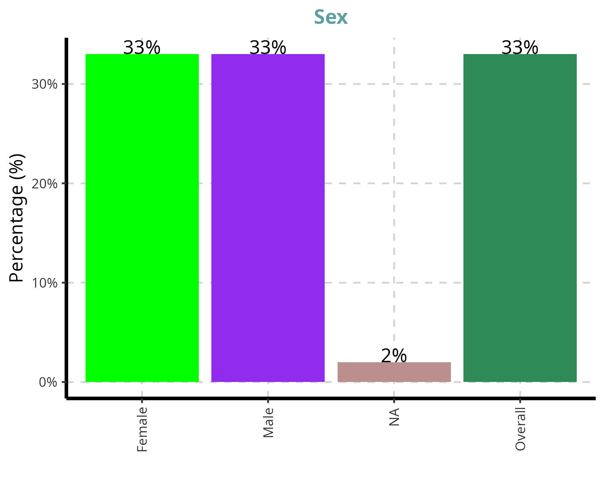
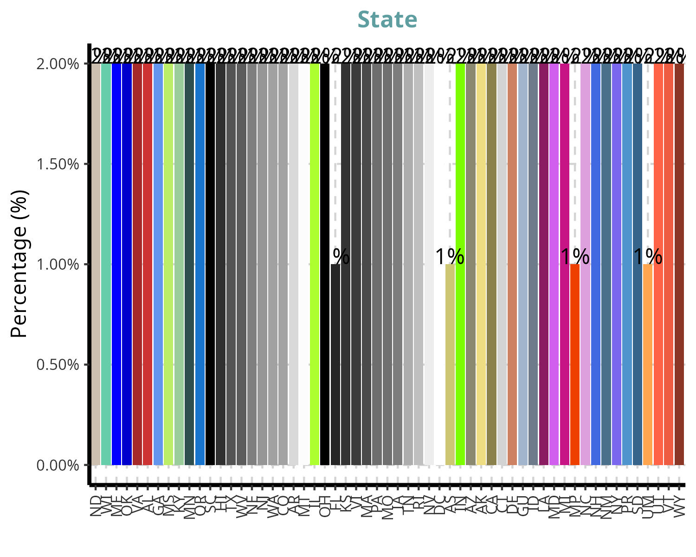
data_gender
data_gendertmp <- data_gender[,c("State", "Sex")] |>
SmartEDA::ExpCatViz(
clim = 60
)
ggplot2::ggsave(
plot = tmp[[1]],
here::here('notebooks', 'images', 'eda_data_gender_03b_01_sex.jpg')
)
ggplot2::ggsave(
plot = tmp[[2]],
here::here('notebooks', 'images', 'eda_data_gender_03b_02_state.jpg')
)
rm(tmp)
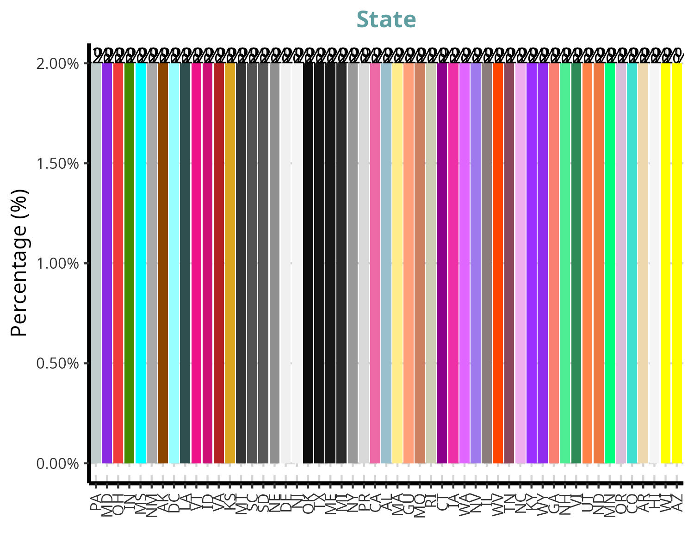
data_overall
data_overalltmp <- data_overall[,c("State")] |>
SmartEDA::ExpCatViz(
clim = 60
)
ggplot2::ggsave(
plot = tmp[[1]],
here::here('notebooks', 'images', 'eda_data_overall_03b_01_state.jpg')
)
rm(tmp)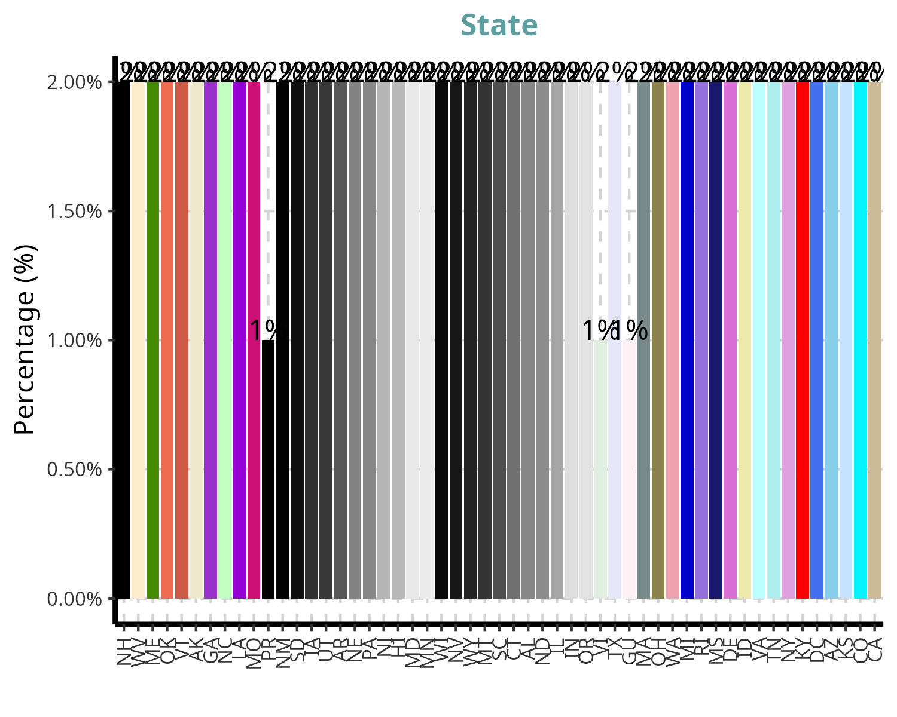
SmartEDA::ExpNumStat()Para las variables numéricas de cada data.frame se exploraron los siguientes aspectos:
NA)data
datasmartEda_data <- SmartEDA::ExpNumStat(
data,
# Qnt = c(.25, .5, 0.75),
Outlier = TRUE
)
smartEda_data Vname Group TN nNeg nZero nPos NegInf PosInf
3 AgeAdjustedDeathRate All 163 0 0 100 0 0
6 BingeDrinkingFrecuencyAdults All 163 0 0 159 0 0
7 BingeDrinkingIntensityAdults All 163 0 0 159 0 0
8 BingeDrinkingPrevalenceAdults All 163 0 0 159 0 0
1 Deaths All 163 0 0 100 0 0
5 HeavyDrinkingAdults All 163 0 0 158 0 0
4 PercentageOfTotalDeaths All 163 0 0 100 0 0
2 Population All 163 0 0 100 0 0
NA_Value Per_of_Missing sum min max mean
3 63 38.650 1781.54 4.17 68.16 17.815
6 4 2.454 771.60 3.10 6.90 4.853
7 4 2.454 1089.30 4.60 9.30 6.851
8 4 2.454 2669.90 8.20 27.90 16.792
1 63 38.650 50717.00 29.00 5229.00 507.170
5 5 3.067 1022.00 2.70 10.20 6.468
4 63 38.650 22.02 0.01 2.26 0.220
2 63 38.650 310112617.00 282589.00 19620646.00 3101126.170
median SD CV IQR Skewness Kurtosis LB.25%
3 15.685 11.593 0.651 15.577 1.499 3.197 -14.589
6 4.900 0.797 0.164 1.100 -0.028 -0.484 2.650
7 7.000 1.201 0.175 1.950 -0.042 -1.087 2.825
8 16.700 4.309 0.257 6.000 0.224 -0.313 4.600
1 325.000 647.832 1.277 450.750 4.478 27.489 -524.375
5 6.400 1.399 0.216 1.700 0.160 0.121 3.050
4 0.140 0.280 1.272 0.192 4.468 27.407 -0.221
2 2181603.000 3552732.983 1.146 2743265.750 2.833 9.320 -3222228.375
UB.75% nOutliers
3 47.721 4
6 7.050 0
7 10.625 0
8 28.600 0
1 1278.625 6
5 9.850 4
4 0.549 6
2 7750834.625 6tmp <- smartEda_data |>
flextable::flextable()
tmp <- flextable::autofit(tmp)
flextable::save_as_image(
x = tmp,
path = here::here("notebooks", "images","eda_data_03c.png")
)[1] "/home/tjmartinez/code/tjma/tfm-clusterAnalisis/notebooks/images/eda_data_03c.png"rm(tmp)Respecto a las variables numéricas del data.frame:
NA en todas las variables, con un rango de valores faltantes entre el 2.454% y el 38.65%AgeAdjustedDeathRate, Deaths, PercentageOfTotalDeaths y Population.data_gender
data_gendersmartEda_data_gender <- SmartEDA::ExpNumStat(
data_gender,
# Qnt = c(.25, .5, 0.75),
Outlier = TRUE
)
smartEda_data_gender Vname Group TN nNeg nZero nPos NegInf PosInf
3 AgeAdjustedDeathRate All 106 0 0 100 0 0
6 BingeDrinkingFrecuencyAdults All 106 0 0 105 0 0
7 BingeDrinkingIntensityAdults All 106 0 0 106 0 0
8 BingeDrinkingPrevalenceAdults All 106 0 0 106 0 0
1 Deaths All 106 0 0 100 0 0
5 HeavyDrinkingAdults All 106 0 0 106 0 0
4 PercentageOfTotalDeaths All 106 0 0 100 0 0
2 Population All 106 0 0 100 0 0
NA_Value Per_of_Missing sum min max mean
3 6 5.660 1781.54 4.17 68.16 17.815
6 1 0.943 680.80 2.70 10.20 6.484
7 0 0.000 714.80 4.60 9.30 6.743
8 0 0.000 1781.60 8.20 27.90 16.808
1 6 5.660 50717.00 29.00 5229.00 507.170
5 0 0.000 508.20 3.10 6.90 4.794
4 6 5.660 22.02 0.01 2.26 0.220
2 6 5.660 310112617.00 282589.00 19620646.00 3101126.170
median SD CV IQR Skewness Kurtosis LB.25%
3 15.685 11.593 0.651 15.577 1.499 3.197 -14.589
6 6.300 1.476 0.228 1.700 0.123 0.131 3.050
7 6.450 1.414 0.210 2.700 0.154 -1.524 1.350
8 17.050 4.932 0.293 7.900 0.179 -0.761 0.650
1 325.000 647.832 1.277 450.750 4.478 27.489 -524.375
5 4.800 0.902 0.188 1.550 0.047 -0.923 1.700
4 0.140 0.280 1.272 0.192 4.468 27.407 -0.221
2 2181603.000 3552732.983 1.146 2743265.750 2.833 9.320 -3222228.375
UB.75% nOutliers
3 47.721 4
6 9.850 4
7 12.150 0
8 32.250 0
1 1278.625 6
5 7.900 0
4 0.549 6
2 7750834.625 6tmp <- smartEda_data_gender |>
flextable::flextable()
tmp <- flextable::autofit(tmp)
flextable::save_as_image(
x = tmp,
path = here::here("notebooks", "images","eda_data_gender_03c.png")
)[1] "/home/tjmartinez/code/tjma/tfm-clusterAnalisis/notebooks/images/eda_data_gender_03c.png"rm(tmp)Respecto a las variables numéricas del data.frame:
NA en cinco variables, con un rango de valores faltantes entre el 0% y el 5.66%AgeAdjustedDeathRate, Deaths, PercentageOfTotalDeaths y Population.data_overall
data_overallsmartEda_data_overall <- SmartEDA::ExpNumStat(
data_overall,
# Qnt = c(.25, .5, 0.75),
Outlier = TRUE
)
smartEda_data_overall Vname Group TN nNeg nZero nPos NegInf PosInf
3 AgeAdjustedDeathRate All 153 0 0 150 0 0
6 BingeDrinkingFrecuencyAdults All 153 0 0 153 0 0
7 BingeDrinkingIntensityAdults All 153 0 0 153 0 0
8 BingeDrinkingPrevalenceAdults All 153 0 0 153 0 0
1 Deaths All 153 0 0 150 0 0
5 HeavyDrinkingAdults All 153 0 0 153 0 0
4 PercentageOfTotalDeaths All 153 0 0 150 0 0
2 Population All 153 0 0 150 0 0
NA_Value Per_of_Missing sum min max mean
3 3 1.961 2666.07 4.17 68.16 17.774
6 0 0.000 759.80 4.10 6.50 4.966
7 0 0.000 2577.90 11.60 23.50 16.849
8 0 0.000 1080.50 5.90 8.30 7.062
1 3 1.961 101434.00 29.00 7290.00 676.227
5 0 0.000 993.00 4.00 9.30 6.490
4 3 1.961 43.98 0.01 3.16 0.293
2 3 1.961 620225234.00 282589.00 39237836.00 4134834.893
median SD CV IQR Skewness Kurtosis LB.25%
3 15.61 10.734 0.604 13.087 1.603 3.584 -9.801
6 5.00 0.521 0.105 0.700 0.598 0.389 3.550
7 16.70 2.683 0.159 3.500 0.449 -0.225 9.750
8 7.10 0.513 0.073 0.800 0.206 -0.219 5.400
1 414.50 866.180 1.281 669.750 4.372 26.360 -802.625
5 6.50 1.225 0.189 1.600 0.219 -0.257 3.200
4 0.18 0.375 1.279 0.288 4.377 26.442 -0.341
2 2853695.00 5225569.257 1.264 4079431.500 3.517 16.630 -5063829.500
UB.75% nOutliers
3 42.549 6
6 6.350 3
7 23.750 0
8 8.600 0
1 1876.375 7
5 9.600 0
4 0.809 7
2 11253896.500 10tmp <- smartEda_data_overall |>
flextable::flextable()
tmp <- flextable::autofit(tmp)
flextable::save_as_image(
x = tmp,
path = here::here("notebooks", "images","eda_data_overall_03c.png")
)[1] "/home/tjmartinez/code/tjma/tfm-clusterAnalisis/notebooks/images/eda_data_overall_03c.png"rm(tmp)Respecto a las variables numéricas del data.frame:
NA en cuatro variables, con un rango de valores faltantes entre el 0% y el 1.961%AgeAdjustedDeathRate, Deaths, PercentageOfTotalDeaths y Population.Se evaluó la distribución de probabilidad de las variables numéricas. Para ello, se utilizaron las siguientes técnicas:
Cuando ambos test son no significativos, la variable puede seguir una distribución aproximadamente normal.
data
dataSe utilizaron dos tipos de gráfico para evaluar la distribución de las variables aleatorias numéricas:
La función DataExplorer::plot_histogram() crea histogramas para las variables de clase numeric o integer de un dataset.
data |>
DataExplorer::plot_histogram(
ggtheme = ggplot2::theme_bw(),
nrow = 4L,
ncol = 2L
)ggplot2::ggsave(
here::here('notebooks', 'images', 'eda_data_03da_histograma.jpg')
)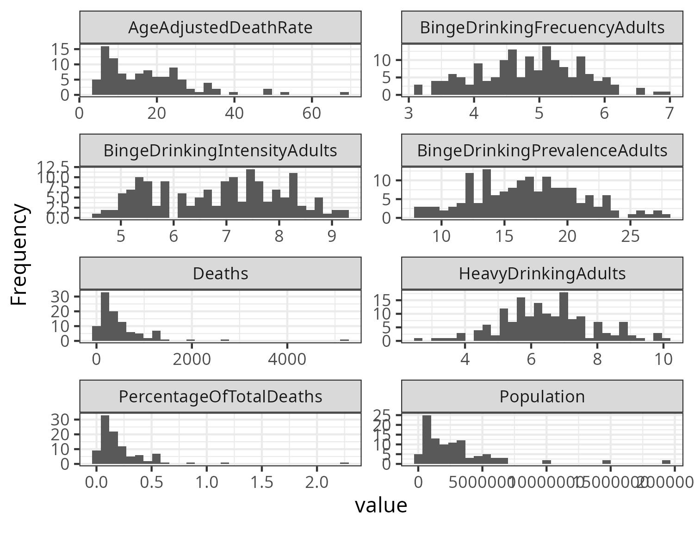
La función DataExplorer::plot_density() dibuja la función de densidad de probabilidad para las variables de clase numeric o integer de un dataset.
data |>
DataExplorer::plot_density(
ggtheme = ggplot2::theme_bw(),
nrow = 4L,
ncol = 2L
)ggplot2::ggsave(
here::here('notebooks', 'images', 'eda_data_03db_densidad.jpg')
)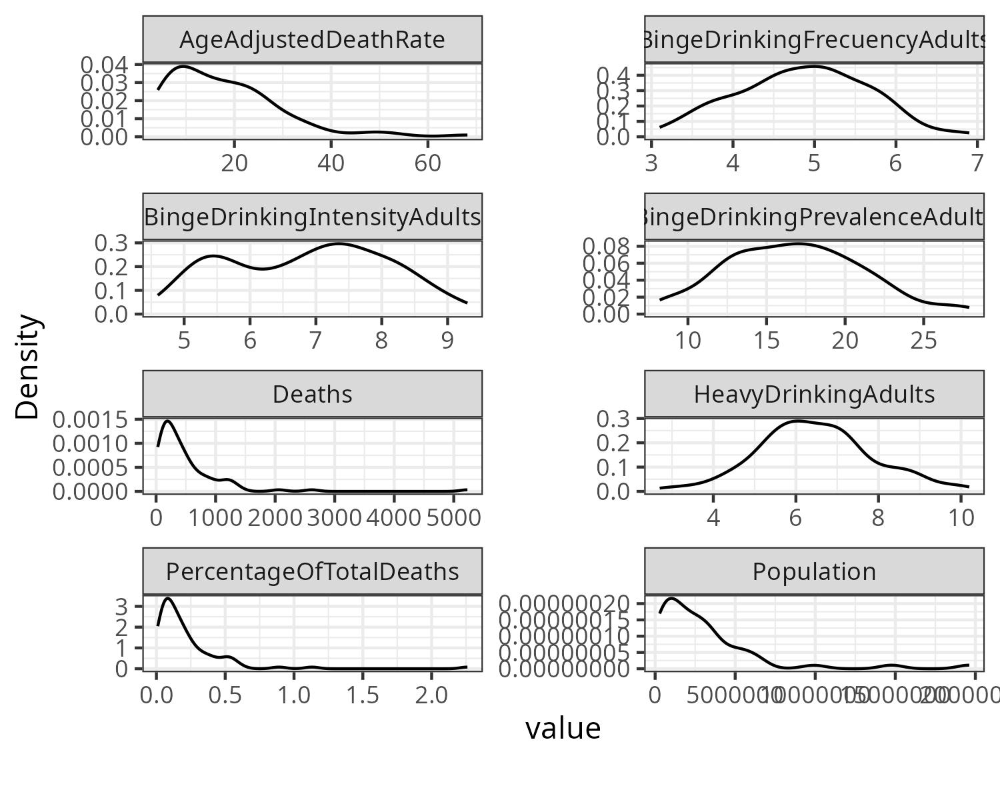
Los test de hipótesis de centralidad (Kurtosis y sesgo) orientan para saber qué variables podrían seguir una distribución normal. Se utilizan dos test:
La hipótesis nula de los dos test asumen que la variable numérica evaluada sigue una distribución con un sesgo (o una kurtosis) similar a la de una distribución normal.
Los resultados obtenidos al aplicar los test a las variables numéricas fueron los siguientes:
| Variable | Test kurtosis Anscombe-Glynn |
Test sesgo D’Agostino |
|---|---|---|
Deaths |
\(< 0.05\) | \(< 0.05\) |
Population |
\(< 0.05\) | \(< 0.05\) |
AgeAdjustedDeathRate |
\(< 0.05\) | \(< 0.05\) |
PercentageOfTotalDeaths |
\(< 0.05\) | \(< 0.05\) |
HeavyDrinkingAdults |
No significativo | No significativo |
BingeDrinkingFrecuencyAdults |
No significativo | No significativo |
BingeDrinkingIntensityAdults |
\(< 0.05\) | No significativo |
BingeDrinkingPrevalenceAdults |
No significativo | No significativo |
data_gender
data_genderSe utilizaron dos tipos de gráfico para evaluar la distribución de las variables aleatorias numéricas de nuestra muestra:
La función DataExplorer::plot_histogram() crea histogramas para las variables de clase numeric o integer de un data_overallset.
data_gender |>
DataExplorer::plot_histogram(
ggtheme = ggplot2::theme_bw(),
nrow = 4L,
ncol = 2L
)ggplot2::ggsave(
here::here('notebooks', 'images', 'eda_data_gender_03da_histograma.jpg')
)
La función data_genderExplorer::plot_density() dibuja la función de densidad de probabilidad para las variables de clase numeric o integer de un data_genderset.
data_gender |>
DataExplorer::plot_density(
ggtheme = ggplot2::theme_bw(),
nrow = 4L,
ncol = 2L
)ggplot2::ggsave(
here::here('notebooks', 'images', 'eda_data_gender_03db_densidad.jpg')
)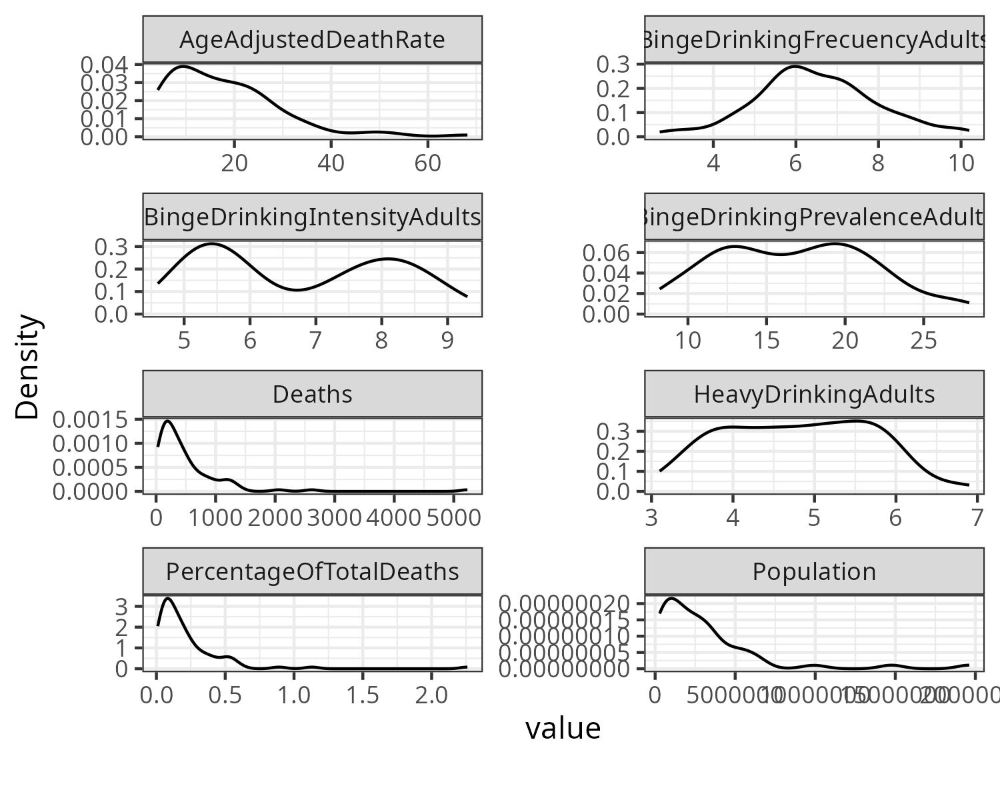
Los test de hipótesis de centralidad (Kurtosis y sesgo) orientan para saber qué variables podrían seguir una distribución normal. Se utilizan dos test:
La hipótesis nula de los dos test asumen que la variable numérica evaluada sigue una distribución con un sesgo (o una kurtosis) similar a la de una distribución normal.
Los resultados obtenidos al aplicar los test a las variables numéricas fueron los siguientes:
| Variable | Test kurtosis Anscombe-Glynn |
Test sesgo D’Agostino |
|---|---|---|
Deaths |
\(< 0.05\) | \(< 0.05\) |
Population |
\(< 0.05\) | \(< 0.05\) |
AgeAdjustedDeathRate |
\(< 0.05\) | \(< 0.05\) |
PercentageOfTotalDeaths |
\(< 0.05\) | \(< 0.05\) |
HeavyDrinkingAdults |
\(< 0.05\) | No significativo |
BingeDrinkingFrecuencyAdults |
No significativo | No significativo |
BingeDrinkingIntensityAdults |
\(< 0.05\) | No significativo |
BingeDrinkingPrevalenceAdults |
\(< 0.05\) | No significativo |
data_overall
data_overallSe utilizaron dos tipos de gráfico para evaluar la distribución de las variables aleatorias numéricas de nuestra muestra:
La función DataExplorer::plot_histogram() crea histogramas para las variables de clase numeric o integer de un dataset.
data_overall |>
DataExplorer::plot_histogram(
ggtheme = ggplot2::theme_bw(),
nrow = 4L,
ncol = 2L
)ggplot2::ggsave(
here::here('notebooks', 'images', 'eda_data_overall_03da_histograma.jpg')
)
La función data_genderExplorer::plot_density() dibuja la función de densidad de probabilidad para las variables de clase numeric o integer de un dataset.
data_overall |>
DataExplorer::plot_density(
ggtheme = ggplot2::theme_bw(),
nrow = 4L,
ncol = 2L
)ggplot2::ggsave(
here::here('notebooks', 'images', 'eda_data_overall_03db_densidad.jpg')
)Los test de hipótesis de centralidad (Kurtosis y sesgo) orientan para saber qué variables podrían seguir una distribución normal. Se utilizan dos test:
La hipótesis nula de los dos test asumen que la variable numérica evaluada sigue una distribución con un sesgo (o una kurtosis) similar a la de una distribución normal.
Los resultados obtenidos al aplicar los test a las variables numéricas fueron los siguientes:
| Variable | Test kurtosis Anscombe-Glynn |
Test sesgo D’Agostino |
|---|---|---|
Deaths |
\(< 0.05\) | \(< 0.05\) |
Population |
\(< 0.05\) | \(< 0.05\) |
AgeAdjustedDeathRate |
\(< 0.05\) | \(< 0.05\) |
PercentageOfTotalDeaths |
\(< 0.05\) | \(< 0.05\) |
HeavyDrinkingAdults |
No significativo | No significativo |
BingeDrinkingFrecuencyAdults |
No significativo | \(< 0.05\) |
BingeDrinkingIntensityAdults |
\(< 0.05\) | No significativo |
BingeDrinkingPrevalenceAdults |
No significativo | No significativo |
Para explorar la normalidad de las variables se utilizaron las siguientes técnicas:
| Técnica | Descripción |
|---|---|
| Evaluación gráfica: QQ-Plot | Método gráfico para el diagnóstico de diferencias entre la distribución de probabilidad de una población de la que se ha extraído una muestra aleatoria y una distribución usada para la comparación (Wikipedia 2020) |
| Test de Shapiro-Wilks | Se considera el test más potente para testar la normalidad, seguido de cerca por el Anderson–Darling - \(H_0\): Los datos provienen de una variable normalmente distribuida - \(H_1\): Los datos no están distribuidos según una distribución normal. Si la muestra es muy grande, es posible que el test detecte desviaciones mínimas frente a la normal, que no tengan importancia práctica. Por eso el test debe interpretarse siempre conjuntamente con el gráfico QQ-plot. |
data
dataHay tres variables que se ajustan aproximadamente a una distribución normal, tanto visualmente como en el test de hipótesis de Shapiro-Wilks: HeavyDrinkingAdults, BingeDrinkingFrecuencyAdults y BingeDrinkingPrevalenceAdults. Son las mismas tres variables con los test de kurtosis y sesgo no significativos.
DataExplorer::plot_qq())Hay tres variables que, visualmente se ajustan aproximadamente a una distribución normal: HeavyDrinkingAdults, BingeDrinkingFrecuencyAdults y BingeDrinkingPrevalenceAdults. Son las mismas tres variables con los test de kurtosis y sesgo no significativos.
data |>
DataExplorer::plot_qq(
ggtheme = ggplot2::theme_bw(),
nrow = 4L,
ncol = 2L
)ggplot2::ggsave(
here::here('notebooks', 'images', 'eda_data_03e_qqplot_general.jpg')
)
Cuando estratificamos por la variable sexo, estas variables mantienen su tendencia a la normalidad
data |>
DataExplorer::plot_qq(
by = 'Sex',
ggtheme = ggplot2::theme_bw(),
nrow = 4L,
ncol = 2L
)ggplot2::ggsave(
here::here('notebooks', 'images', 'eda_data_03e_qqplot_bySex.jpg')
)
Hay tres variables con un test no significativo, y, por tanto, no es posible rechazar la hipótesis nula de normalidad: HeavyDrinkingAdults, BingeDrinkingFrecuencyAdults y BingeDrinkingPrevalenceAdults.
data |>
dlookr::normality() |>
dplyr::mutate_if(is.numeric, ~round(., digits = 3)) |>
flextable::flextable()vars | statistic | p_value | sample |
|---|---|---|---|
Deaths | 0.591 | 0.000 | 163 |
Population | 0.682 | 0.000 | 163 |
AgeAdjustedDeathRate | 0.877 | 0.000 | 163 |
PercentageOfTotalDeaths | 0.592 | 0.000 | 163 |
HeavyDrinkingAdults | 0.992 | 0.491 | 163 |
BingeDrinkingFrecuencyAdults | 0.990 | 0.288 | 163 |
BingeDrinkingIntensityAdults | 0.962 | 0.000 | 163 |
BingeDrinkingPrevalenceAdults | 0.989 | 0.232 | 163 |
data_gender
data_genderHay una variable que, visualmente se ajusta aproximadamente a una distribución normal: BingeDrinkingFrecuencyAdults. Hay muchas variables que son aproximadamente normales en el centro de la distribución, pero que no lo son en los extremos (outliers).
DataExplorer::plot_qq())Hay una variable que, visualmente se ajustan aproximadamente a una distribución normal: BingeDrinkingFrecuencyAdults. Hay muchas variables que son aproximadamente normales en el centro de la distribución, pero que no lo son en los extremos (outliers).
data_gender |>
DataExplorer::plot_qq(
ggtheme = ggplot2::theme_bw(),
nrow = 4L,
ncol = 2L
)ggplot2::ggsave(
here::here('notebooks', 'images', 'eda_data_gender_03e_qqplot_general.jpg')
)
Cuando estratificamos por la variable sexo, estas variables mantienen su tendencia a la normalidad, y persiste la influencia de los outliers, especialmente para los varones.
data_gender |>
DataExplorer::plot_qq(
by = 'Sex',
ggtheme = ggplot2::theme_bw(),
nrow = 4L,
ncol = 2L
)ggplot2::ggsave(
here::here('notebooks', 'images', 'eda_data_gender_03e_qqplot_bySex.jpg')
)
Hay una variable con un test no significativo, y, por tanto, no es posible rechazar la hipótesis nula de normalidad: BingeDrinkingFrecuencyAdults.
data_gender |>
dlookr::normality() |>
dplyr::mutate_if(is.numeric, ~round(., digits = 3)) |>
flextable::flextable()vars | statistic | p_value | sample |
|---|---|---|---|
Deaths | 0.591 | 0.000 | 106 |
Population | 0.682 | 0.000 | 106 |
AgeAdjustedDeathRate | 0.877 | 0.000 | 106 |
PercentageOfTotalDeaths | 0.592 | 0.000 | 106 |
HeavyDrinkingAdults | 0.971 | 0.020 | 106 |
BingeDrinkingFrecuencyAdults | 0.990 | 0.622 | 106 |
BingeDrinkingIntensityAdults | 0.896 | 0.000 | 106 |
BingeDrinkingPrevalenceAdults | 0.975 | 0.040 | 106 |
data_overall
data_overallAl considerar los datos globales, ninguna variable se ajusta ni visualmente ni en el test de hipótesis a una distribución normal.
DataExplorer::plot_qq())Visualmente, ninguna variable se ajusta a lo esperado en una distribución normal..
data_overall |>
DataExplorer::plot_qq(
ggtheme = ggplot2::theme_bw(),
nrow = 4L,
ncol = 2L
)ggplot2::ggsave(
here::here('notebooks', 'images', 'eda_data_overall_03e_qqplot_general.jpg')
)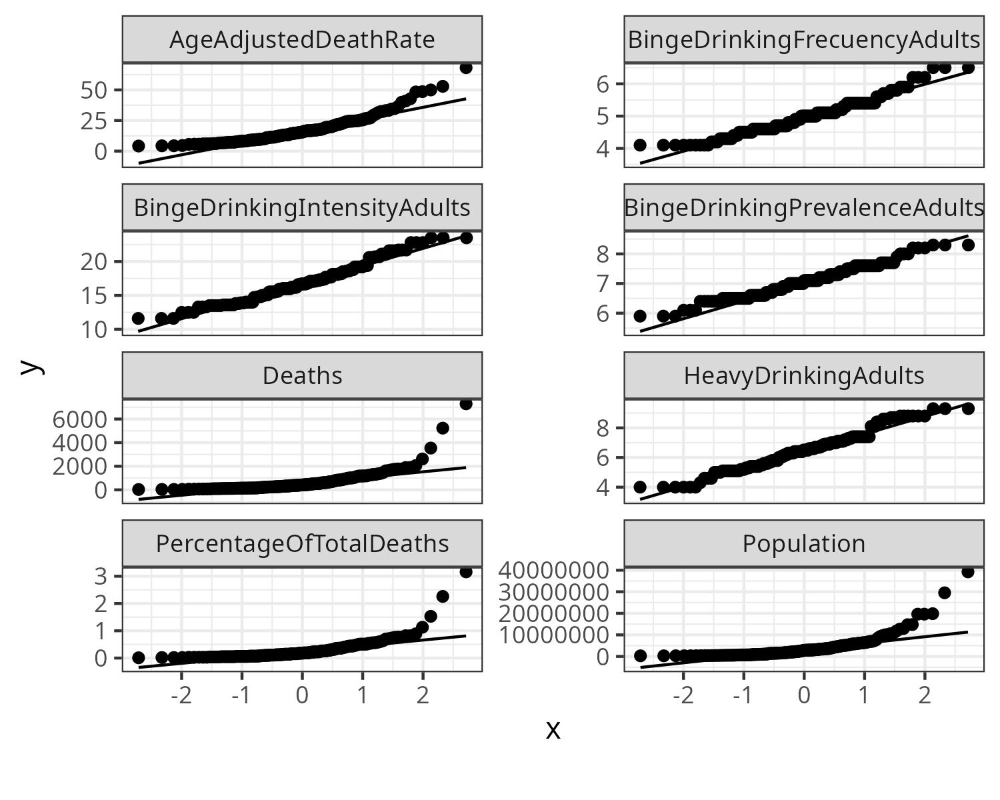
Ninguna variable tiene un test no significativo, y, por tanto, no es posible afirmar la hipótesis nula de normalidad.
data_overall |>
dlookr::normality() |>
dplyr::mutate_if(is.numeric, ~round(., digits = 3)) |>
flextable::flextable()vars | statistic | p_value | sample |
|---|---|---|---|
Deaths | 0.599 | 0.000 | 153 |
Population | 0.644 | 0.000 | 153 |
AgeAdjustedDeathRate | 0.875 | 0.000 | 153 |
PercentageOfTotalDeaths | 0.599 | 0.000 | 153 |
HeavyDrinkingAdults | 0.975 | 0.007 | 153 |
BingeDrinkingFrecuencyAdults | 0.961 | 0.000 | 153 |
BingeDrinkingIntensityAdults | 0.972 | 0.003 | 153 |
BingeDrinkingPrevalenceAdults | 0.980 | 0.023 | 153 |
Para la comparación entre grupos, se utilizaron dos técnicas:
data
dataEl objeto data tiene la variable Sex, con tres niveles que son redundantes entre sí: Hombres, Mujeres y valoración global.
En la fase exploratoria, esta variable se utilizó para comparar los indicadores entre hombres y mujeres, y entre cada uno de ellos con la media global.
DataExplorer::plot_boxplot()
DataExplorer::plot_boxplot()Se observa una diferencia entre los dos sexos, y entre cada sexo con la media, para las variables, BingeDrinkingFrecuencyAdults, BingeDrinkingIntensityAdults y BingeDrinkingPrevalenceAdults. También se ha observa una diferencia entre hombres y mujeres para la variable AgeAdjustedDeathRate.
## Reordenamos los niveles de los factores para una visualización más equilibrada
data$State <- with(
data,
reorder(State , AgeAdjustedDeathRate, median , na.rm = T)
)
data |>
DataExplorer::plot_boxplot(
geom_boxplot_args = list('outlier.colour' = 'darkred'),
ggtheme = ggplot2::theme_bw(),
by = 'Sex',
nrow = 4L,
ncol = 2L
)ggplot2::ggsave(
here::here('notebooks', 'images', 'eda_data_03fa_boxplot.jpg')
)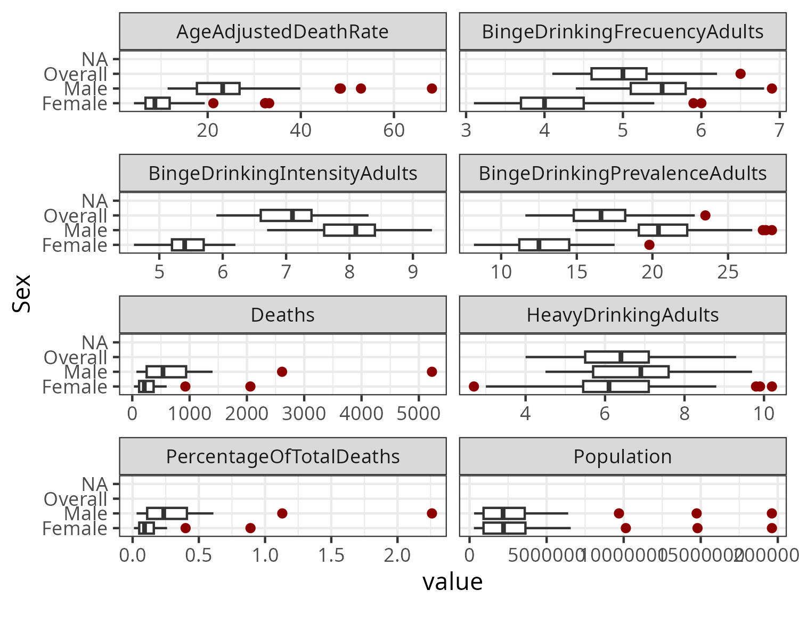
ggstatsplot::ggbetweenstats()
ggstatsplot::ggbetweenstats()Se evidenciaron diferencias estadísticamente significativas entre hombres y mujeres, y entre cada uno de ellos con la media general, para las variables BingeDrinkingFrecuencyAdults, BingeDrinkingIntensityAdults y BingeDrinkingPrevalenceAdults. También se ha evidenciado una diferencia significativa entre hombres y mujeres para la variable AgeAdjustedDeathRate.
ggstatsplot::ggbetweenstats(
data = data,
x = Sex,
y = AgeAdjustedDeathRate,
type = 'np' # Nonparametric
) +
ggplot2::ggtitle(
"Age Adjusted Death Rate, by sex"
)ggplot2::ggsave(
here::here('notebooks', 'images', 'eda_data_03fb_testAgeAdjustedDeathRate.jpg')
)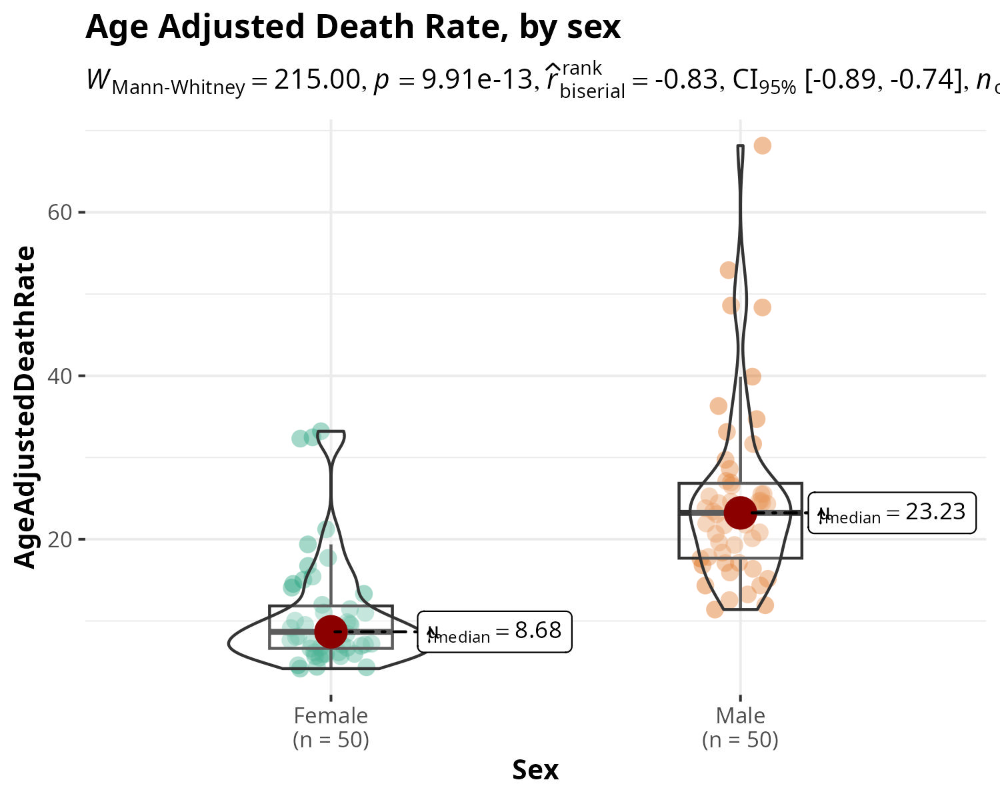
ggstatsplot::ggbetweenstats(
data = data,
x = Sex,
y = BingeDrinkingFrecuencyAdults,
type = 'np' # Nonparametric
) +
ggplot2::ggtitle(
"Binge Drinking Frecuency in Adults, by sex"
)ggplot2::ggsave(
here::here('notebooks', 'images', 'eda_data_03fb_testBingeDrinkingFrecuencyAdults.jpg')
)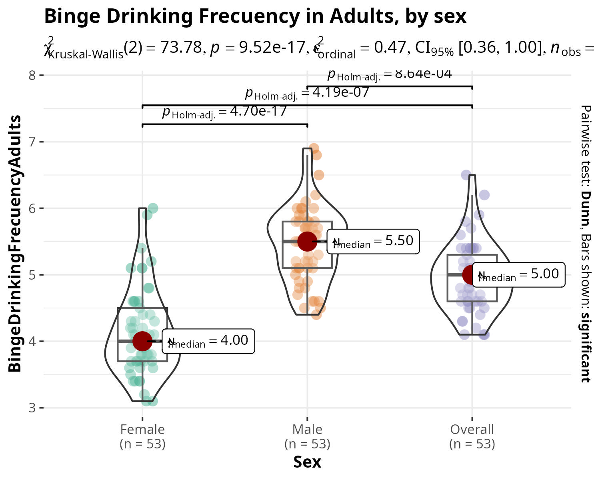
ggstatsplot::ggbetweenstats(
data = data,
x = Sex,
y = BingeDrinkingIntensityAdults,
type = 'np' # Nonparametric
) +
ggplot2::ggtitle(
"Binge Drinking Intensity in Adults, by sex"
)ggplot2::ggsave(
here::here('notebooks', 'images', 'eda_data_03fb_testBingeDrinkingIntensityAdults.jpg')
)
ggstatsplot::ggbetweenstats(
data = data,
x = Sex,
y = BingeDrinkingPrevalenceAdults,
type = 'np' # Nonparametric
) +
ggplot2::ggtitle(
"Binge Drinking Prevalence in Adults, by sex"
)ggplot2::ggsave(
here::here('notebooks', 'images', 'eda_data_03fb_testBingeDrinkingPrevalenceAdults.jpg')
)
ggstatsplot::ggbetweenstats(
data = data,
x = Sex,
y = Deaths,
type = 'np' # Nonparametric
) +
ggplot2::ggtitle(
"Deaths, by sex"
)ggplot2::ggsave(
here::here('notebooks', 'images', 'eda_data_03fb_testDeaths.jpg')
)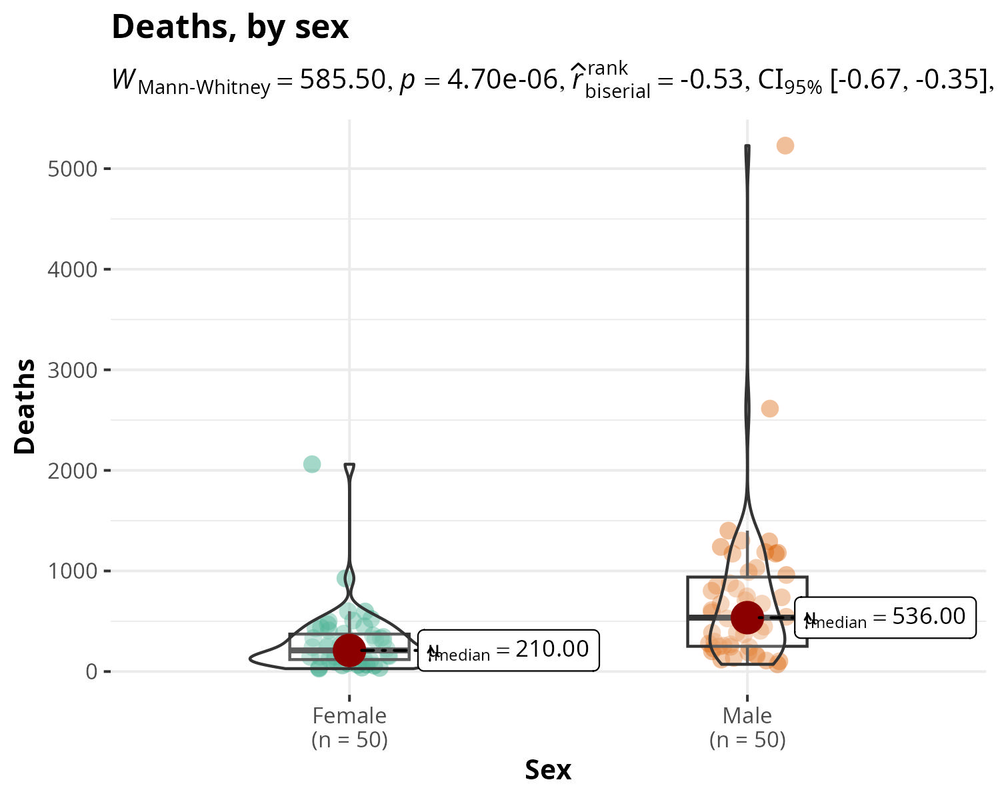
ggstatsplot::ggbetweenstats(
data = data,
x = Sex,
y = HeavyDrinkingAdults,
type = 'np' # Nonparametric
) +
ggplot2::ggtitle(
"Heavy Drinking in Adults, by sex"
)ggplot2::ggsave(
here::here('notebooks', 'images', 'eda_data_03fb_testHeavyDrinkingAdults.jpg')
)
ggstatsplot::ggbetweenstats(
data = data,
x = Sex,
y = PercentageOfTotalDeaths,
type = 'np' # Nonparametric
) +
ggplot2::ggtitle(
"Percentage of Total Deaths, by sex"
)ggplot2::ggsave(
here::here('notebooks', 'images', 'eda_data_03fb_testPercentageOfTotalDeaths.jpg')
)
ggstatsplot::ggbetweenstats(
data = data,
x = Sex,
y = Population,
type = 'np' # Nonparametric
) +
ggplot2::ggtitle(
"Population, by sex"
)
ggplot2::ggsave(
here::here('notebooks', 'images', 'eda_data_03fb_testPopulation.jpg')
)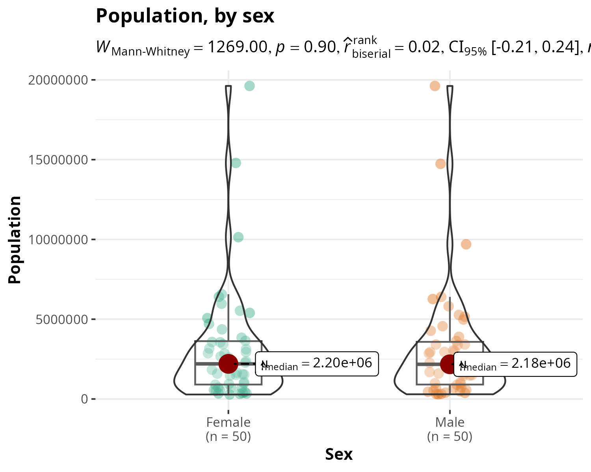
data_gender
data_genderDataExplorer::plot_boxplot()
DataExplorer::plot_boxplot()Se observa una diferencia entre los dos sexos para las variables, HeavyDrinkingAdults, AgeAdjustedDeathRate, BingeDrinkingPrevalenceAdults y BingeDrinkingIntensityAdults.
## Reordenamos los niveles de los factores para una visualización más equilibrada
data_gender$State <- with(
data_gender,
reorder(State , AgeAdjustedDeathRate, median , na.rm = T)
)
data_gender |>
DataExplorer::plot_boxplot(
geom_boxplot_args = list('outlier.colour' = 'darkred'),
ggtheme = ggplot2::theme_bw(),
by = 'Sex',
nrow = 4L,
ncol = 2L
)ggplot2::ggsave(
here::here('notebooks', 'images', 'eda_data_gender_03fa_boxplot.jpg')
)
ggstatsplot::ggbetweenstats()
ggstatsplot::ggbetweenstats()Se evidenciaron diferencias estadísticamente significativas entre hombres y mujeres, y entre cada uno de ellos con la media general, para las variables BingeDrinkingFrecuencyAdults, BingeDrinkingIntensityAdults y BingeDrinkingPrevalenceAdults. También se ha evidenciado una diferencia significativa entre hombres y mujeres para la variable AgeAdjustedDeathRate.
ggstatsplot::ggbetweenstats(
data = data_gender,
x = Sex,
y = AgeAdjustedDeathRate,
type = 'np' # Nonparametric
) +
ggplot2::ggtitle(
"Age Adjusted Death Rate, by sex"
)ggplot2::ggsave(
here::here('notebooks', 'images', 'eda_data_gender_03fb_testAgeAdjustedDeathRate.jpg')
)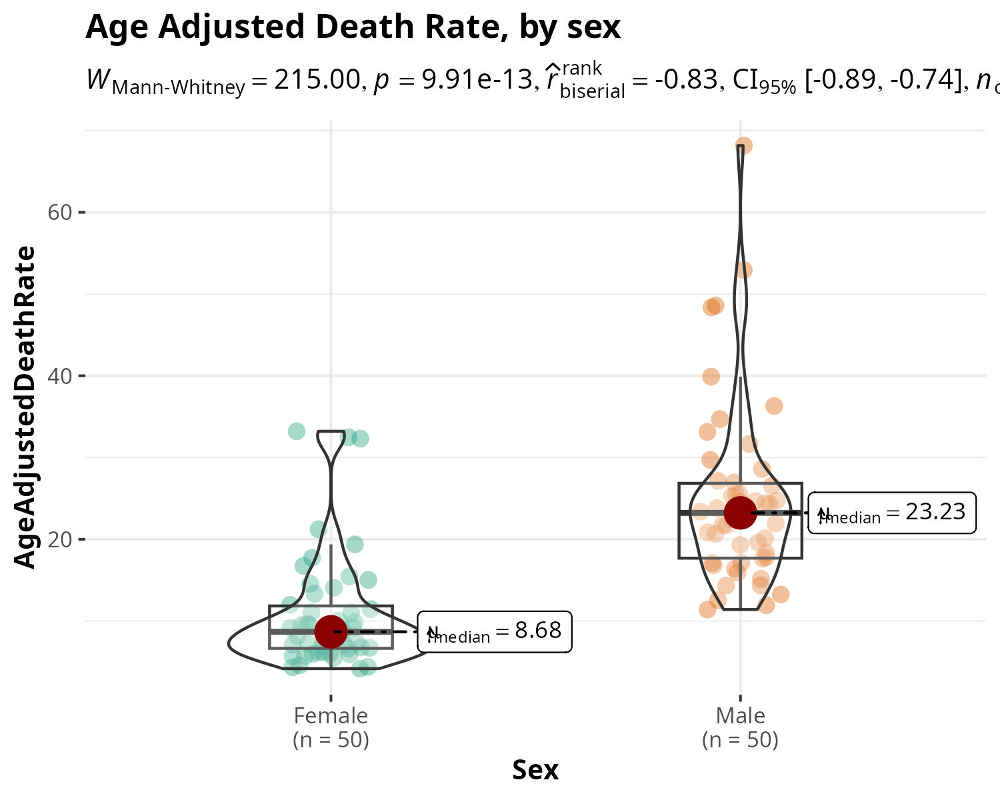
ggstatsplot::ggbetweenstats(
data = data_gender,
x = Sex,
y = BingeDrinkingFrecuencyAdults,
type = 'np' # Nonparametric
) +
ggplot2::ggtitle(
"Binge Drinking Frecuency in Adults, by sex"
)ggplot2::ggsave(
here::here('notebooks', 'images', 'eda_data_gender_03fb_testBingeDrinkingFrecuencyAdults.jpg')
)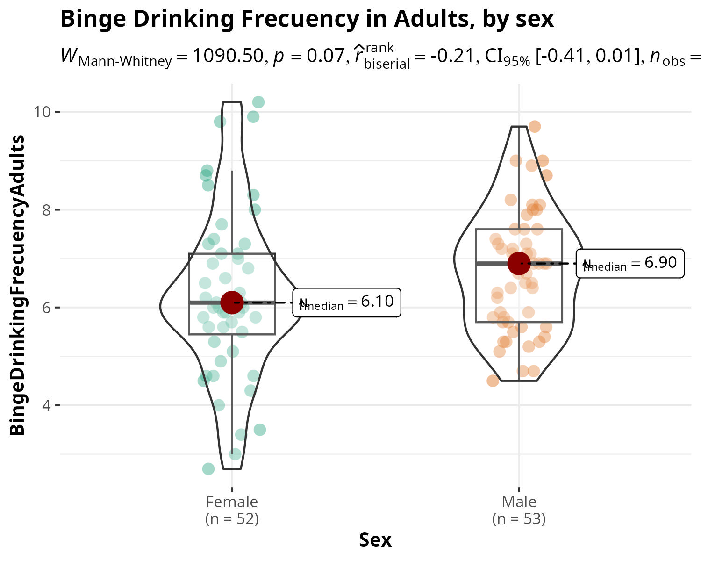
ggstatsplot::ggbetweenstats(
data = data_gender,
x = Sex,
y = BingeDrinkingIntensityAdults,
type = 'np' # Nonparametric
) +
ggplot2::ggtitle(
"Binge Drinking Intensity in Adults, by sex"
)ggplot2::ggsave(
here::here('notebooks', 'images', 'eda_data_gender_03fb_testBingeDrinkingIntensityAdults.jpg')
)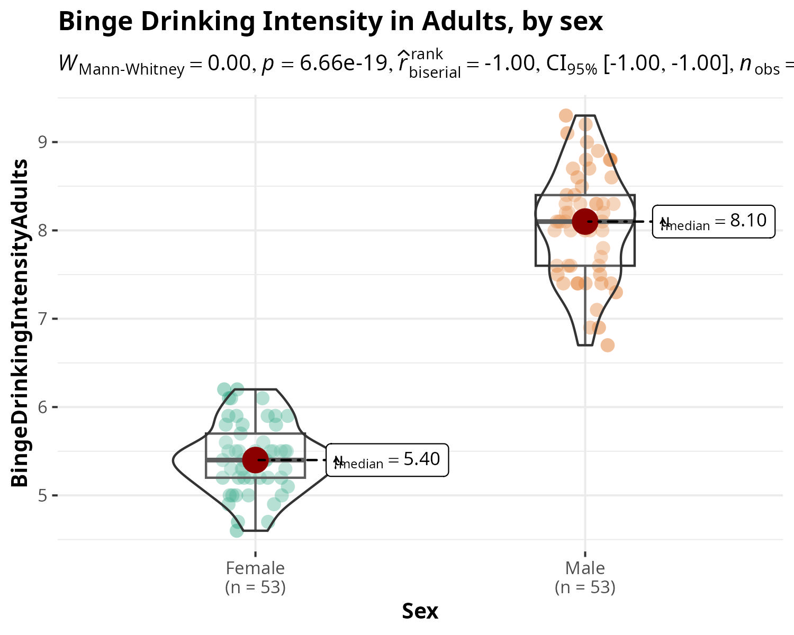
ggstatsplot::ggbetweenstats(
data = data_gender,
x = Sex,
y = BingeDrinkingPrevalenceAdults,
type = 'np' # Nonparametric
) +
ggplot2::ggtitle(
"Binge Drinking Prevalence in Adults, by sex"
)ggplot2::ggsave(
here::here('notebooks', 'images', 'eda_data_gender_03fb_testBingeDrinkingPrevalenceAdults.jpg')
)
ggstatsplot::ggbetweenstats(
data = data_gender,
x = Sex,
y = Deaths,
type = 'np' # Nonparametric
) +
ggplot2::ggtitle(
"Deaths, by sex"
)ggplot2::ggsave(
here::here('notebooks', 'images', 'eda_data_gender_03fb_testDeaths.jpg')
)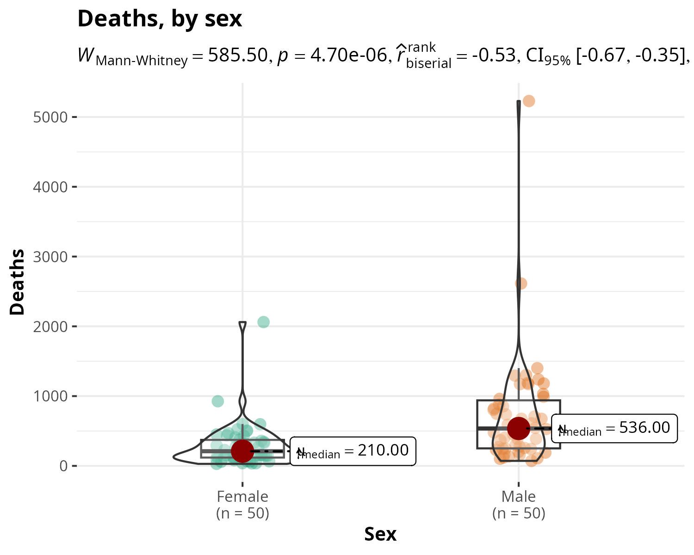
ggstatsplot::ggbetweenstats(
data = data_gender,
x = Sex,
y = HeavyDrinkingAdults,
type = 'np' # Nonparametric
) +
ggplot2::ggtitle(
"Heavy Drinking in Adults, by sex"
)ggplot2::ggsave(
here::here('notebooks', 'images', 'eda_data_gender_03fb_testHeavyDrinkingAdults.jpg')
)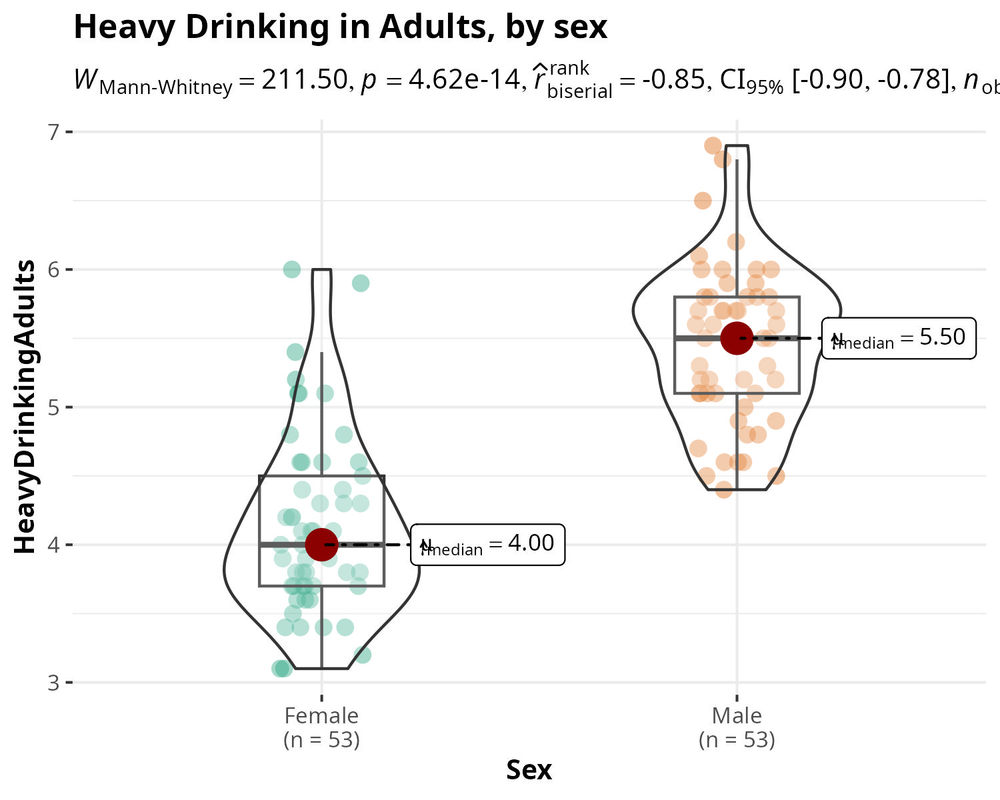
ggstatsplot::ggbetweenstats(
data = data_gender,
x = Sex,
y = PercentageOfTotalDeaths,
type = 'np' # Nonparametric
) +
ggplot2::ggtitle(
"Percentage of Total Deaths, by sex"
)ggplot2::ggsave(
here::here('notebooks', 'images', 'eda_data_gender_03fb_testPercentageOfTotalDeaths.jpg')
)
ggstatsplot::ggbetweenstats(
data = data_gender,
x = Sex,
y = Population,
type = 'np' # Nonparametric
) +
ggplot2::ggtitle(
"Population, by sex"
)ggplot2::ggsave(
here::here('notebooks', 'images', 'eda_data_gender_03fb_testPopulation.jpg')
)
data_overall
data_overallDataExplorer::plot_boxplot()
DataExplorer::plot_boxplot()Se observan diferencias en el valor de los indicadores para todos los estados, para las distintas variables, identificándose estados con valores en torno a la media, y otros con valor muy superior.
## Reordenamos los niveles de los factores para una visualización más equilibrada
data_overall$State <- with(
data_overall,
reorder(State , AgeAdjustedDeathRate, median , na.rm = T)
)
data_overall |>
DataExplorer::plot_boxplot(
by = 'State',
ggtheme = ggplot2::theme_bw(),
ncol = 4L,
nrow = 2L
)ggplot2::ggsave(
here::here('notebooks', 'images', 'eda_data_overall_03fa_boxplot.jpg')
)
ggstatsplot::ggbetweenstats()
ggstatsplot::ggbetweenstats()En este dataset no hay observaciones suficientes para hacer un análisis comparativo de las variables numéricas por los niveles de la variable State.
Se utilizaron las siguientes técnicas para explorar la correlación:
## Función para convertir la tabla de correlación en un data.frame
## Tomada de http://www.sthda.com/english/wiki/correlation-matrix-a-quick-start-guide-to-analyze-format-and-visualize-a-correlation-matrix-using-r-software
flattenCorrMatrix <- function(cormat, pmat) {
ut <- upper.tri(cormat)
data.frame(
row = rownames(cormat)[row(cormat)[ut]],
column = rownames(cormat)[col(cormat)[ut]],
cor = (cormat)[ut],
p = pmat[ut]
)
}data
dataSe exploraron las correlaciones entre variables numéricas con el test de Spearman. Se obtuvieron los siguientes resultados (en verde, las correlaciones estadísticamente significativas):
# Análisis de correlación con `Hmisc::rcorr()`
corrAnalysis_data <- Hmisc::rcorr(
as.matrix(data[,3:10]),
type = c("spearman")
)
# Tabla para visualización de resultados
## Se colorean en verde las correlaciones significativas (test np Spearman)
## Método: https://stackoverflow.com/questions/62730125/flextable-basic-conditional-formatting
tmpTbl_data <- flattenCorrMatrix(
round(corrAnalysis_data$r, 2),
round(corrAnalysis_data$P, 2)
)
colormatrix_data <- ifelse(tmpTbl_data$p < .05, "lightgreen", "white")
tmpTbl_data |>
flextable::flextable() |>
flextable::bg(bg = colormatrix_data)row | column | cor | p |
|---|---|---|---|
Deaths | Population | 0.79 | 0.00 |
Deaths | AgeAdjustedDeathRate | 0.25 | 0.01 |
Population | AgeAdjustedDeathRate | -0.35 | 0.00 |
Deaths | PercentageOfTotalDeaths | 1.00 | 0.00 |
Population | PercentageOfTotalDeaths | 0.79 | 0.00 |
AgeAdjustedDeathRate | PercentageOfTotalDeaths | 0.26 | 0.01 |
Deaths | HeavyDrinkingAdults | -0.10 | 0.33 |
Population | HeavyDrinkingAdults | -0.29 | 0.00 |
AgeAdjustedDeathRate | HeavyDrinkingAdults | 0.30 | 0.00 |
PercentageOfTotalDeaths | HeavyDrinkingAdults | -0.09 | 0.36 |
Deaths | BingeDrinkingFrecuencyAdults | 0.26 | 0.01 |
Population | BingeDrinkingFrecuencyAdults | -0.07 | 0.48 |
AgeAdjustedDeathRate | BingeDrinkingFrecuencyAdults | 0.50 | 0.00 |
PercentageOfTotalDeaths | BingeDrinkingFrecuencyAdults | 0.26 | 0.01 |
HeavyDrinkingAdults | BingeDrinkingFrecuencyAdults | 0.17 | 0.04 |
Deaths | BingeDrinkingIntensityAdults | 0.31 | 0.00 |
Population | BingeDrinkingIntensityAdults | -0.12 | 0.24 |
AgeAdjustedDeathRate | BingeDrinkingIntensityAdults | 0.65 | 0.00 |
PercentageOfTotalDeaths | BingeDrinkingIntensityAdults | 0.30 | 0.00 |
HeavyDrinkingAdults | BingeDrinkingIntensityAdults | 0.18 | 0.02 |
BingeDrinkingFrecuencyAdults | BingeDrinkingIntensityAdults | 0.74 | 0.00 |
Deaths | BingeDrinkingPrevalenceAdults | 0.33 | 0.00 |
Population | BingeDrinkingPrevalenceAdults | -0.11 | 0.27 |
AgeAdjustedDeathRate | BingeDrinkingPrevalenceAdults | 0.71 | 0.00 |
PercentageOfTotalDeaths | BingeDrinkingPrevalenceAdults | 0.33 | 0.00 |
HeavyDrinkingAdults | BingeDrinkingPrevalenceAdults | 0.54 | 0.00 |
BingeDrinkingFrecuencyAdults | BingeDrinkingPrevalenceAdults | 0.48 | 0.00 |
BingeDrinkingIntensityAdults | BingeDrinkingPrevalenceAdults | 0.74 | 0.00 |
psych::pairs.panels(
data[,3:10],
method = "spearman",
hist.col = "steelblue",
show.points = TRUE,
stars = TRUE,
gap = 0.05,
pch = ".",
ellipses = FALSE,
scale = FALSE,
jiggle = TRUE,
factor = 2,
main = "Correlation matrix",
col = "darkred",
pty = "m",
font = 2,
)
corrplot::corrplot(
corrAnalysis_data$r,
method = "ellipse",
type = "lower",
order = "hclust",
tl.col = "black",
diag = FALSE
)
ggstatsplot::ggcorrmat()
ggstatsplot::ggcorrmat()Se han encontrado las siguientes correlaciones estadísticamente significativas:
Una correlación negativa entre Population y AgeAdjustedDeathRate
Una correlación positiva entre:
Deaths y PopulationDeaths y PercentageOfTotalDeathsPopulation y PercentageOfTotalDeathsHeavyDrinkingAdults y AgeAdjustedDeathRateBingeDrinkingPrevalenceAdults y HeavyDrinkingAdultsBingeDrinkingPrevalenceAdults y BingeDrinkingFrecuencyAdultsBingeDrinkingPrevalenceAdults y BingeDrinkingIntensityAdultsBingeDrinkingIntensityAdults y BingeDrinkingFrecuencyAdultsggstatsplot::ggcorrmat(
data = data,
type = 'np', ## Non-parametric Spearman correlation
output = 'dataframe'
) 
data_gender
data_genderSe exploraron las correlaciones entre variables numéricas con el test de Spearman. Se obtuvieron los siguientes resultados (en verde, las correlaciones estadísticamente significativas):
# Análisis de correlación con `Hmisc::rcorr()`
corrAnalysis_data_gender <- Hmisc::rcorr(
as.matrix(data_gender[,3:10]),
type = c("spearman")
)
# Tabla para visualización de resultados
## Se colorean en verde las correlaciones significativas (test np Spearman)
## Método: https://stackoverflow.com/questions/62730125/flextable-basic-conditional-formatting
tmpTbl_data_gender <- flattenCorrMatrix(
round(corrAnalysis_data_gender$r, 2),
round(corrAnalysis_data_gender$P, 2)
)
colormatrix_data_gender <- ifelse(tmpTbl_data_gender$p < .05, "lightgreen", "white")
tmpTbl_data_gender |>
flextable::flextable() |>
flextable::bg(bg = colormatrix_data_gender)row | column | cor | p |
|---|---|---|---|
Deaths | Population | 0.79 | 0.00 |
Deaths | AgeAdjustedDeathRate | 0.25 | 0.01 |
Population | AgeAdjustedDeathRate | -0.35 | 0.00 |
Deaths | PercentageOfTotalDeaths | 1.00 | 0.00 |
Population | PercentageOfTotalDeaths | 0.79 | 0.00 |
AgeAdjustedDeathRate | PercentageOfTotalDeaths | 0.26 | 0.01 |
Deaths | HeavyDrinkingAdults | 0.26 | 0.01 |
Population | HeavyDrinkingAdults | -0.07 | 0.48 |
AgeAdjustedDeathRate | HeavyDrinkingAdults | 0.50 | 0.00 |
PercentageOfTotalDeaths | HeavyDrinkingAdults | 0.26 | 0.01 |
Deaths | BingeDrinkingFrecuencyAdults | -0.10 | 0.33 |
Population | BingeDrinkingFrecuencyAdults | -0.29 | 0.00 |
AgeAdjustedDeathRate | BingeDrinkingFrecuencyAdults | 0.30 | 0.00 |
PercentageOfTotalDeaths | BingeDrinkingFrecuencyAdults | -0.09 | 0.36 |
HeavyDrinkingAdults | BingeDrinkingFrecuencyAdults | 0.20 | 0.04 |
Deaths | BingeDrinkingIntensityAdults | 0.31 | 0.00 |
Population | BingeDrinkingIntensityAdults | -0.12 | 0.24 |
AgeAdjustedDeathRate | BingeDrinkingIntensityAdults | 0.65 | 0.00 |
PercentageOfTotalDeaths | BingeDrinkingIntensityAdults | 0.30 | 0.00 |
HeavyDrinkingAdults | BingeDrinkingIntensityAdults | 0.77 | 0.00 |
BingeDrinkingFrecuencyAdults | BingeDrinkingIntensityAdults | 0.19 | 0.05 |
Deaths | BingeDrinkingPrevalenceAdults | 0.33 | 0.00 |
Population | BingeDrinkingPrevalenceAdults | -0.11 | 0.27 |
AgeAdjustedDeathRate | BingeDrinkingPrevalenceAdults | 0.71 | 0.00 |
PercentageOfTotalDeaths | BingeDrinkingPrevalenceAdults | 0.33 | 0.00 |
HeavyDrinkingAdults | BingeDrinkingPrevalenceAdults | 0.58 | 0.00 |
BingeDrinkingFrecuencyAdults | BingeDrinkingPrevalenceAdults | 0.51 | 0.00 |
BingeDrinkingIntensityAdults | BingeDrinkingPrevalenceAdults | 0.77 | 0.00 |
psych::pairs.panels(
data_gender[,3:10],
method = "spearman",
hist.col = "steelblue",
show.points = TRUE,
stars = TRUE,
gap = 0.05,
pch = ".",
ellipses = FALSE,
scale = FALSE,
jiggle = TRUE,
factor = 2,
main = "Correlation matrix",
col = "darkred",
pty = "m",
font = 2,
)
corrplot::corrplot(
corrAnalysis_data_gender$r,
method = "ellipse",
type = "lower",
order = "hclust",
tl.col = "black",
diag = FALSE
)
ggstatsplot::ggcorrmat()
ggstatsplot::ggcorrmat()Se han encontrado las siguientes correlaciones estadísticamente significativas:
Population y Deaths.Deaths y PercentageOfTotalDeaths.Deaths y BingeDrinkingIntensityAdults.Deaths y BingeDrinkingPrevalenceAdults.Population y AgeAdjustedDeathRate.Population y PercentageOfTotalDeaths.Population y BingeDrinkingFrecuencyAdults.AgeAdjustedDeathRate y HeavyDrinkingAdults.AgeAdjustedDeathRate y BingeDrinkingFrecuencyAdults.AgeAdjustedDeathRate y BingeDrinkingIntensityAdults.AgeAdjustedDeathRate y BingeDrinkingPrevalenceAdults.PercentageOfTotalDeaths y BingeDrinkingIntensityAdults.PercentageOfTotalDeaths y BingeDrinkingPrevalenceAdults.HeavyDrinkingAdults y BingeDrinkingIntensityAdults.HeavyDrinkingAdults y BingeDrinkingPrevalenceAdults.BingeDrinkingFrecuencyAdults y BingeDrinkingPrevalenceAdults.BingeDrinkingIntensityAdults y BingeDrinkingPrevalenceAdults.ggstatsplot::ggcorrmat(
data = data_gender,
type = 'np', ## Non-parametric Spearman correlation
output = 'dataframe'
) 
data_overall
data_overallSe exploraron las correlaciones entre variables numéricas con el test de Spearman. Se obtuvieron los siguientes resultados (en verde, las correlaciones estadísticamente significativas):
# Análisis de correlación con `Hmisc::rcorr()`
corrAnalysis_data_overall <- Hmisc::rcorr(
as.matrix(data_overall[,2:9]),
type = c("spearman")
)
# Tabla para visualización de resultados
## Se colorean en verde las correlaciones significativas (test np Spearman)
## Método: https://stackoverflow.com/questions/62730125/flextable-basic-conditional-formatting
tmpTbl_data_overall <- flattenCorrMatrix(
round(corrAnalysis_data_overall$r, 2),
round(corrAnalysis_data_overall$P, 2)
)
colormatrix_data_overall <- ifelse(tmpTbl_data_overall$p < .05, "lightgreen", "white")
tmpTbl_data_overall |>
flextable::flextable() |>
flextable::bg(bg = colormatrix_data_overall)row | column | cor | p |
|---|---|---|---|
Deaths | Population | 0.85 | 0.00 |
Deaths | AgeAdjustedDeathRate | 0.16 | 0.04 |
Population | AgeAdjustedDeathRate | -0.34 | 0.00 |
Deaths | PercentageOfTotalDeaths | 1.00 | 0.00 |
Population | PercentageOfTotalDeaths | 0.85 | 0.00 |
AgeAdjustedDeathRate | PercentageOfTotalDeaths | 0.17 | 0.04 |
Deaths | HeavyDrinkingAdults | -0.26 | 0.00 |
Population | HeavyDrinkingAdults | -0.37 | 0.00 |
AgeAdjustedDeathRate | HeavyDrinkingAdults | 0.25 | 0.00 |
PercentageOfTotalDeaths | HeavyDrinkingAdults | -0.25 | 0.00 |
Deaths | BingeDrinkingFrecuencyAdults | -0.15 | 0.06 |
Population | BingeDrinkingFrecuencyAdults | -0.15 | 0.07 |
AgeAdjustedDeathRate | BingeDrinkingFrecuencyAdults | -0.02 | 0.76 |
PercentageOfTotalDeaths | BingeDrinkingFrecuencyAdults | -0.15 | 0.06 |
HeavyDrinkingAdults | BingeDrinkingFrecuencyAdults | 0.06 | 0.43 |
Deaths | BingeDrinkingIntensityAdults | -0.13 | 0.11 |
Population | BingeDrinkingIntensityAdults | -0.21 | 0.01 |
AgeAdjustedDeathRate | BingeDrinkingIntensityAdults | 0.21 | 0.01 |
PercentageOfTotalDeaths | BingeDrinkingIntensityAdults | -0.13 | 0.13 |
HeavyDrinkingAdults | BingeDrinkingIntensityAdults | 0.79 | 0.00 |
BingeDrinkingFrecuencyAdults | BingeDrinkingIntensityAdults | -0.17 | 0.04 |
Deaths | BingeDrinkingPrevalenceAdults | -0.18 | 0.03 |
Population | BingeDrinkingPrevalenceAdults | -0.16 | 0.04 |
AgeAdjustedDeathRate | BingeDrinkingPrevalenceAdults | 0.03 | 0.67 |
PercentageOfTotalDeaths | BingeDrinkingPrevalenceAdults | -0.17 | 0.04 |
HeavyDrinkingAdults | BingeDrinkingPrevalenceAdults | 0.06 | 0.46 |
BingeDrinkingFrecuencyAdults | BingeDrinkingPrevalenceAdults | 0.52 | 0.00 |
BingeDrinkingIntensityAdults | BingeDrinkingPrevalenceAdults | 0.14 | 0.10 |
psych::pairs.panels(
data_overall[,2:9],
method = "spearman",
hist.col = "steelblue",
show.points = TRUE,
stars = TRUE,
gap = 0.05,
pch = ".",
ellipses = FALSE,
scale = FALSE,
jiggle = TRUE,
factor = 2,
main = "Correlation matrix",
col = "darkred",
pty = "m",
font = 2,
)
corrplot::corrplot(
corrAnalysis_data_overall$r,
method = "ellipse",
type = "lower",
order = "hclust",
tl.col = "black",
diag = FALSE
)
ggstatsplot::ggcorrmat()
ggstatsplot::ggcorrmat()Se han encontrado las siguientes correlaciones estadísticamente significativas:
Deaths y HeavyDrinkingAdults.Population y AgeAdjustedDeathRate.Population y HeavyDrinkingAdults.Deaths y Population.Deaths y PercentageOfTotalDeaths.PercentageOfTotalDeaths y HeavyDrinkingAdults.Population y PercentageOfTotalDeaths.AgeAdjustedDeathRate y HeavyDrinkingAdults.HeavyDrinkingAdults y BingeDrinkingIntensityAdults.BingeDrinkingFrecuencyAdults y BingeDrinkingPrevalenceAdults.ggstatsplot::ggcorrmat(
data = data_overall,
type = 'np', ## Non-parametric Spearman correlation
output = 'dataframe'
) 
Se crearon modelos exploratorios para todos los pares de variables en las que se ha obtenido una correlación lineal estadística significativa, para cada uno de los data.frame.
data
dataSe identificaron correlaciones estadísticamente significativas en los siguientes pares de variables:
Population y AgeAdjustedDeathRateDeaths y PopulationDeaths y PercentageOfTotalDeathsPopulation y PercentageOfTotalDeathsHeavyDrinkingAdults y AgeAdjustedDeathRateBingeDrinkingPrevalenceAdults y HeavyDrinkingAdultsBingeDrinkingPrevalenceAdults y BingeDrinkingFrecuencyAdultsBingeDrinkingPrevalenceAdults y BingeDrinkingIntensityAdultsBingeDrinkingIntensityAdults y BingeDrinkingFrecuencyAdultsPopulation y AgeAdjustedDeathRate#### `Population` y `AgeAdjustedDeathRate`
data |>
ggplot2::ggplot(
mapping = ggplot2::aes(
x = Population,
y = AgeAdjustedDeathRate
)
) +
ggplot2::geom_point() +
ggplot2::geom_smooth() 
Deaths y Population#### `Population` y `Deaths`
data |>
ggplot2::ggplot(
mapping = ggplot2::aes(
x = Population,
y = Deaths
)
) +
ggplot2::geom_point() +
ggplot2::geom_smooth() 
Deaths y PercentageOfTotalDeaths#### `PercentageOfTotalDeaths` y `Deaths`
data |>
ggplot2::ggplot(
mapping = ggplot2::aes(
x = PercentageOfTotalDeaths,
y = Deaths
)
) +
ggplot2::geom_point() +
ggplot2::geom_smooth() 
Population y PercentageOfTotalDeaths#### `Population` y `PercentageOfTotalDeaths`
data |>
ggplot2::ggplot(
mapping = ggplot2::aes(
x = Population,
y = PercentageOfTotalDeaths
)
) +
ggplot2::geom_point() +
ggplot2::geom_smooth() 
HeavyDrinkingAdults y AgeAdjustedDeathRate#### `HeavyDrinkingAdults` y `AgeAdjustedDeathRate`
data |>
ggplot2::ggplot(
mapping = ggplot2::aes(
x = HeavyDrinkingAdults,
y = AgeAdjustedDeathRate,
color = Sex
)
) +
ggplot2::geom_point() +
ggplot2::geom_smooth() 
BingeDrinkingPrevalenceAdults y HeavyDrinkingAdults#### `BingeDrinkingPrevalenceAdults` y `HeavyDrinkingAdults`
data |>
ggplot2::ggplot(
mapping = ggplot2::aes(
x = HeavyDrinkingAdults,
y = BingeDrinkingPrevalenceAdults,
color = Sex
)
) +
ggplot2::geom_point() +
ggplot2::geom_smooth() 
BingeDrinkingPrevalenceAdults y BingeDrinkingFrecuencyAdults#### `BingeDrinkingPrevalenceAdults` y `BingeDrinkingFrecuencyAdults`
data |>
ggplot2::ggplot(
mapping = ggplot2::aes(
x = BingeDrinkingFrecuencyAdults,
y = BingeDrinkingPrevalenceAdults,
color = Sex
)
) +
ggplot2::geom_point() +
ggplot2::geom_smooth() 
BingeDrinkingPrevalenceAdults y BingeDrinkingIntensityAdults#### `BingeDrinkingPrevalenceAdults` y `BingeDrinkingIntensityAdults`
data |>
ggplot2::ggplot(
mapping = ggplot2::aes(
x = BingeDrinkingIntensityAdults,
y = BingeDrinkingPrevalenceAdults,
color = Sex
)
) +
ggplot2::geom_point() +
ggplot2::geom_smooth() 
BingeDrinkingIntensityAdults y BingeDrinkingFrecuencyAdults#### `BingeDrinkingFrecuencyAdults` y `BingeDrinkingIntensityAdults`
data |>
ggplot2::ggplot(
mapping = ggplot2::aes(
x = BingeDrinkingIntensityAdults,
y = BingeDrinkingFrecuencyAdults,
color = Sex
)
) +
ggplot2::geom_point() +
ggplot2::geom_smooth() 
data_gender
data_genderSe han encontrado las siguientes correlaciones estadísticamente significativas:
Population y Deaths.Deaths y PercentageOfTotalDeaths.Deaths y BingeDrinkingIntensityAdults.Deaths y BingeDrinkingPrevalenceAdults.Population y AgeAdjustedDeathRate.Population y PercentageOfTotalDeaths.Population y BingeDrinkingFrecuencyAdults.AgeAdjustedDeathRate y HeavyDrinkingAdults.AgeAdjustedDeathRate y BingeDrinkingFrecuencyAdults.AgeAdjustedDeathRate y BingeDrinkingIntensityAdults.AgeAdjustedDeathRate y BingeDrinkingPrevalenceAdults.PercentageOfTotalDeaths y BingeDrinkingIntensityAdults.PercentageOfTotalDeaths y BingeDrinkingPrevalenceAdults.HeavyDrinkingAdults y BingeDrinkingIntensityAdults.HeavyDrinkingAdults y BingeDrinkingPrevalenceAdults.BingeDrinkingFrecuencyAdults y BingeDrinkingPrevalenceAdults.BingeDrinkingIntensityAdults y BingeDrinkingPrevalenceAdults.Population y Deaths#### `Population` y `Deaths`
data_gender |>
ggplot2::ggplot(
mapping = ggplot2::aes(
x = Population,
y = Deaths
)
) +
ggplot2::geom_point() +
ggplot2::geom_smooth() 
Deaths y PercentageOfTotalDeaths#### `PercentageOfTotalDeaths` y `Deaths`
data_gender |>
ggplot2::ggplot(
mapping = ggplot2::aes(
x = PercentageOfTotalDeaths,
y = Deaths
)
) +
ggplot2::geom_point() +
ggplot2::geom_smooth() 
Deaths y BingeDrinkingIntensityAdults#### `BingeDrinkingIntensityAdults` y `Deaths`
data_gender |>
ggplot2::ggplot(
mapping = ggplot2::aes(
x = BingeDrinkingIntensityAdults,
y = Deaths
)
) +
ggplot2::geom_point() +
ggplot2::geom_smooth() 
Deaths y BingeDrinkingPrevalenceAdults#### `BingeDrinkingPrevalenceAdults` y `Deaths`
data_gender |>
ggplot2::ggplot(
mapping = ggplot2::aes(
x = BingeDrinkingPrevalenceAdults,
y = Deaths
)
) +
ggplot2::geom_point() +
ggplot2::geom_smooth() 
Population y AgeAdjustedDeathRate#### `Population` y `AgeAdjustedDeathRate`
data_gender |>
ggplot2::ggplot(
mapping = ggplot2::aes(
x = Population,
y = AgeAdjustedDeathRate
)
) +
ggplot2::geom_point() +
ggplot2::geom_smooth() 
Population y PercentageOfTotalDeaths#### `Population` y `PercentageOfTotalDeaths`
data_gender |>
ggplot2::ggplot(
mapping = ggplot2::aes(
x = Population,
y = PercentageOfTotalDeaths
)
) +
ggplot2::geom_point() +
ggplot2::geom_smooth() 
Population y BingeDrinkingFrecuencyAdults#### `Population` y `BingeDrinkingFrecuencyAdults`
data_gender |>
ggplot2::ggplot(
mapping = ggplot2::aes(
x = Population,
y = BingeDrinkingFrecuencyAdults
)
) +
ggplot2::geom_point() +
ggplot2::geom_smooth() 
AgeAdjustedDeathRate y HeavyDrinkingAdults#### `AgeAdjustedDeathRate` y `HeavyDrinkingAdults`
data_gender |>
ggplot2::ggplot(
mapping = ggplot2::aes(
x = AgeAdjustedDeathRate,
y = HeavyDrinkingAdults,
color = Sex
)
) +
ggplot2::geom_point() +
ggplot2::geom_smooth() 
AgeAdjustedDeathRate y BingeDrinkingFrecuencyAdults#### `AgeAdjustedDeathRate` y `BingeDrinkingFrecuencyAdults`
data_gender |>
ggplot2::ggplot(
mapping = ggplot2::aes(
x = AgeAdjustedDeathRate,
y = BingeDrinkingFrecuencyAdults,
color = Sex
)
) +
ggplot2::geom_point() +
ggplot2::geom_smooth() 
AgeAdjustedDeathRate y BingeDrinkingIntensityAdults#### `AgeAdjustedDeathRate` y `BingeDrinkingIntensityAdults`
data_gender |>
ggplot2::ggplot(
mapping = ggplot2::aes(
x = AgeAdjustedDeathRate,
y = BingeDrinkingIntensityAdults,
color = Sex
)
) +
ggplot2::geom_point() +
ggplot2::geom_smooth() 
AgeAdjustedDeathRate y BingeDrinkingPrevalenceAdults#### `AgeAdjustedDeathRate` y `BingeDrinkingPrevalenceAdults`
data_gender |>
ggplot2::ggplot(
mapping = ggplot2::aes(
x = AgeAdjustedDeathRate,
y = BingeDrinkingPrevalenceAdults,
color = Sex
)
) +
ggplot2::geom_point() +
ggplot2::geom_smooth() 
PercentageOfTotalDeaths y BingeDrinkingIntensityAdults#### `HeavyDrinkingAdults` y `AgeAdjustedDeathRate`
data_gender |>
ggplot2::ggplot(
mapping = ggplot2::aes(
x = HeavyDrinkingAdults,
y = AgeAdjustedDeathRate,
color = Sex
)
) +
ggplot2::geom_point() +
ggplot2::geom_smooth() 
PercentageOfTotalDeaths y BingeDrinkingPrevalenceAdults#### `PercentageOfTotalDeaths` y `BingeDrinkingPrevalenceAdults`
data_gender |>
ggplot2::ggplot(
mapping = ggplot2::aes(
x = PercentageOfTotalDeaths,
y = BingeDrinkingPrevalenceAdults,
color = Sex
)
) +
ggplot2::geom_point() +
ggplot2::geom_smooth() 
HeavyDrinkingAdults y BingeDrinkingIntensityAdults#### `BingeDrinkingPrevalenceAdults` y `HeavyDrinkingAdults`
data_gender |>
ggplot2::ggplot(
mapping = ggplot2::aes(
x = HeavyDrinkingAdults,
y = BingeDrinkingPrevalenceAdults,
color = Sex
)
) +
ggplot2::geom_point() +
ggplot2::geom_smooth() 
HeavyDrinkingAdults y BingeDrinkingPrevalenceAdults#### `BingeDrinkingPrevalenceAdults` y `BingeDrinkingFrecuencyAdults`
data_gender |>
ggplot2::ggplot(
mapping = ggplot2::aes(
x = HeavyDrinkingAdults,
y = BingeDrinkingPrevalenceAdults,
color = Sex
)
) +
ggplot2::geom_point() +
ggplot2::geom_smooth() 
BingeDrinkingFrecuencyAdults y BingeDrinkingPrevalenceAdults#### `BingeDrinkingFrecuencyAdults` y `BingeDrinkingPrevalenceAdults`
data_gender |>
ggplot2::ggplot(
mapping = ggplot2::aes(
x = BingeDrinkingFrecuencyAdults,
y = BingeDrinkingPrevalenceAdults,
color = Sex
)
) +
ggplot2::geom_point() +
ggplot2::geom_smooth() 
BingeDrinkingIntensityAdults y BingeDrinkingFrecuencyAdults#### `BingeDrinkingFrecuencyAdults` y `BingeDrinkingIntensityAdults`
data_gender |>
ggplot2::ggplot(
mapping = ggplot2::aes(
x = BingeDrinkingIntensityAdults,
y = BingeDrinkingFrecuencyAdults,
color = Sex
)
) +
ggplot2::geom_point() +
ggplot2::geom_smooth() 
data_overall
data_overallSe han encontrado las siguientes correlaciones estadísticamente significativas:
Deaths y HeavyDrinkingAdults.Population y AgeAdjustedDeathRate.Population y HeavyDrinkingAdults.Deaths y Population.Deaths y PercentageOfTotalDeaths.Population y PercentageOfTotalDeaths.AgeAdjustedDeathRate y HeavyDrinkingAdults.PercentageOfTotalDeaths y HeavyDrinkingAdults.HeavyDrinkingAdults y BingeDrinkingIntensityAdults.BingeDrinkingFrecuencyAdults y BingeDrinkingPrevalenceAdults.Deaths y HeavyDrinkingAdults#### `Deaths` y `HeavyDrinkingAdults`
data_overall |>
ggplot2::ggplot(
mapping = ggplot2::aes(
x = Deaths,
y = HeavyDrinkingAdults
)
) +
ggplot2::geom_point() +
ggplot2::geom_smooth() 
Deaths y Population#### `Deaths` y `Population`
data_overall |>
ggplot2::ggplot(
mapping = ggplot2::aes(
x = Deaths,
y = Population
)
) +
ggplot2::geom_point() +
ggplot2::geom_smooth() 
Deaths y PercentageOfTotalDeaths#### `Deaths` y `PercentageOfTotalDeaths`
data_overall |>
ggplot2::ggplot(
mapping = ggplot2::aes(
x = Deaths,
y = PercentageOfTotalDeaths
)
) +
ggplot2::geom_point() +
ggplot2::geom_smooth() 
Population y AgeAdjustedDeathRate#### `Population` y `AgeAdjustedDeathRate`
data_overall |>
ggplot2::ggplot(
mapping = ggplot2::aes(
x = Population,
y = AgeAdjustedDeathRate
)
) +
ggplot2::geom_point() +
ggplot2::geom_smooth() 
Population y HeavyDrinkingAdults#### `Population` y `HeavyDrinkingAdults`
data_overall |>
ggplot2::ggplot(
mapping = ggplot2::aes(
x = Population,
y = HeavyDrinkingAdults
)
) +
ggplot2::geom_point() +
ggplot2::geom_smooth() 
Population y PercentageOfTotalDeaths#### `Population` y `PercentageOfTotalDeaths`
data_overall |>
ggplot2::ggplot(
mapping = ggplot2::aes(
x = Population,
y = PercentageOfTotalDeaths
)
) +
ggplot2::geom_point() +
ggplot2::geom_smooth() 
PercentageOfTotalDeaths y HeavyDrinkingAdults#### `PercentageOfTotalDeaths` y `HeavyDrinkingAdults`
data_overall |>
ggplot2::ggplot(
mapping = ggplot2::aes(
x = PercentageOfTotalDeaths,
y = HeavyDrinkingAdults
)
) +
ggplot2::geom_point() +
ggplot2::geom_smooth() 
HeavyDrinkingAdults y BingeDrinkingIntensityAdults#### `Deaths` y `HeavyDrinkingAdults`
data_overall |>
ggplot2::ggplot(
mapping = ggplot2::aes(
x = HeavyDrinkingAdults,
y = BingeDrinkingIntensityAdults
)
) +
ggplot2::geom_point() +
ggplot2::geom_smooth() 
BingeDrinkingFrecuencyAdults y BingeDrinkingPrevalenceAdults#### `BingeDrinkingFrecuencyAdults` y `BingeDrinkingPrevalenceAdults`
data_overall |>
ggplot2::ggplot(
mapping = ggplot2::aes(
x = BingeDrinkingFrecuencyAdults,
y = BingeDrinkingPrevalenceAdults
)
) +
ggplot2::geom_point() +
ggplot2::geom_smooth() 
AgeAdjustedDeathRate y HeavyDrinkingAdults#### `AgeAdjustedDeathRate` y `HeavyDrinkingAdults`
data_overall |>
ggplot2::ggplot(
mapping = ggplot2::aes(
x = AgeAdjustedDeathRate,
y = HeavyDrinkingAdults
)
) +
ggplot2::geom_point() +
ggplot2::geom_smooth() 
NA’s) y outliersSe ejecutaron las siguientes acciones
NAsNA’s)
Para la evaluación de datos faltantes (NA’s) se evaluaron las siguientes dimensiones:
| Dimensión | Función | Resultado evaluación |
|---|---|---|
Existencia de algún valor valor faltante NA (sí/no) |
naniar::any_na() |
TRUE |
Número total de NAs |
naniar::n_miss() |
\(69\) |
Variables afectadas por la presencia de NAs |
is.na() |> colSums() |
Sex, Deaths, Population, AgeAdjustedDeathRate, PercentageOfTotalDeaths, HeavyDrinkingAdults, BingeDrinkingFrecuencyAdults, BingeDrinkingIntensityAdults y BingeDrinkingPrevalenceAdults |
Número de NA por variable (n y %) |
naniar::miss_var_summary()naniar::miss_var_table() |
Número: Rango \(0-12\) Porcentaje: Rango \(0-7.36\%\) |
Número de NA por observación (n y %) |
naniar::miss_case_summary()naniar::miss_case_table() |
Número: Rango \(0-9\) Porcentaje: Rango \(0-90\%\) |
Ranking de variables más afectadas por NA’s |
naniar::gg_miss_var() |
Deaths, Population, PercentageOfTotalDeaths, AgeAdjustedDeathRate |
| Tipología de los valores faltantes (MAR, MNAR, MCAR) | naniar::vis_miss() |
Los valores faltantes se concentran en las últimas observaciones del dataset (MNAR) |
| Relación entre valores faltantes de distintas variables | naniar::gg_miss_upset() |
Existe una cierta tendencia a agrupar valores faltantes para ciertas variables: Deaths, Population, AgeAdjustedDeathRate y PercentageOfTotalDeaths |
| Relación entre valores faltantes y niveles de las variables categóricas | naniar::gg_miss_fct() |
Algunos estados concentran todos los valores faltantes. No hay influencia del sexo |
data
dataNAs
NA’s## Existencia de algún valor valor faltante `NA` (sí/no)
naniar::any_na(data)[1] TRUE## Número total de `NA`s
naniar::n_miss(data)[1] 273## Variables afectadas por la presencia de `NA`s
data |>
is.na() |>
colSums() State Sex
0 4
Deaths Population
63 63
AgeAdjustedDeathRate PercentageOfTotalDeaths
63 63
HeavyDrinkingAdults BingeDrinkingFrecuencyAdults
5 4
BingeDrinkingIntensityAdults BingeDrinkingPrevalenceAdults
4 4 ## Número de `NA` por variable (n y %)
naniar::miss_var_summary(data)# A tibble: 10 × 3
variable n_miss pct_miss
<chr> <int> <num>
1 Deaths 63 38.7
2 Population 63 38.7
3 AgeAdjustedDeathRate 63 38.7
4 PercentageOfTotalDeaths 63 38.7
5 HeavyDrinkingAdults 5 3.07
6 Sex 4 2.45
7 BingeDrinkingFrecuencyAdults 4 2.45
8 BingeDrinkingIntensityAdults 4 2.45
9 BingeDrinkingPrevalenceAdults 4 2.45
10 State 0 0 naniar::miss_var_table(data)# A tibble: 4 × 3
n_miss_in_var n_vars pct_vars
<int> <int> <dbl>
1 0 1 10
2 4 4 40
3 5 1 10
4 63 4 40## Número de `NA` por observación (n y %)
naniar::miss_case_summary(data)# A tibble: 163 × 3
case n_miss pct_miss
<int> <int> <dbl>
1 28 9 90
2 152 9 90
3 156 9 90
4 160 9 90
5 161 5 50
6 1 4 40
7 6 4 40
8 8 4 40
9 10 4 40
10 13 4 40
# ℹ 153 more rowsnaniar::miss_case_table(data)# A tibble: 4 × 3
n_miss_in_case n_cases pct_cases
<int> <int> <dbl>
1 0 100 61.3
2 4 58 35.6
3 5 1 0.613
4 9 4 2.45 ## Ranking de variables afectadas por `NA`s
naniar::gg_miss_var(data)
## Tipología de los valores faltantes (MAR, MNAR, MCAR)
naniar::vis_miss(data) +
ggplot2::theme(axis.text.x = ggplot2::element_text(angle = 80))
## Relación entre valores faltantes de distintas variables
naniar::gg_miss_upset(data)
## Relación entre valores faltantes y niveles de las variables categóricas
naniar::gg_miss_fct(data, fct = Sex)
naniar::gg_miss_fct(data, fct = State)
Hallazgos:
Deaths, Population, AgeAdjustedDeathRate y PercentageOfTotalDeathsExiste un número significativo de outliers en el data.frame. Eso deberá tenerse en cuenta para el análisis cluster.
data |>
dlookr::diagnose_outlier() |>
flextable::flextable()variables | outliers_cnt | outliers_ratio | outliers_mean | with_mean | without_mean |
|---|---|---|---|---|---|
Deaths | 6 | 3.680982 | 2,316.833333 | 507.170000 | 391.6595745 |
Population | 6 | 3.680982 | 14,766,948.333333 | 3,101,126.170000 | 2,356,499.2234043 |
AgeAdjustedDeathRate | 4 | 2.453988 | 54.507500 | 17.815400 | 16.2865625 |
PercentageOfTotalDeaths | 6 | 3.680982 | 1.001667 | 0.220200 | 0.1703191 |
HeavyDrinkingAdults | 4 | 2.453988 | 6.450000 | 6.468354 | 6.4688312 |
BingeDrinkingFrecuencyAdults | 0 | 0.000000 | 4.852830 | 4.8528302 | |
BingeDrinkingIntensityAdults | 0 | 0.000000 | 6.850943 | 6.8509434 | |
BingeDrinkingPrevalenceAdults | 0 | 0.000000 | 16.791824 | 16.7918239 |
performance:: check_outliers()performance::check_outliers(
data$Deaths,
method = 'zscore'
) |>
plot()
dlookr::plot_outlier()Ninguna variable tiene más de un 5% de outliers en sus valores.
## Visualize variables with a ratio of outliers greater than 5%
data |>
dlookr::diagnose_outlier() |>
dplyr::filter(outliers_ratio > 5) |>
dplyr::select(variables) |>
dplyr::pull() character(0)data_gender
data_genderNAs
NA’s## Existencia de algún valor valor faltante `NA` (sí/no)
naniar::any_na(data_gender)[1] TRUE## Número total de `NA`s
naniar::n_miss(data_gender)[1] 25## Variables afectadas por la presencia de `NA`s
data_gender |>
is.na() |>
colSums() State Sex
0 0
Deaths Population
6 6
AgeAdjustedDeathRate PercentageOfTotalDeaths
6 6
HeavyDrinkingAdults BingeDrinkingFrecuencyAdults
0 1
BingeDrinkingIntensityAdults BingeDrinkingPrevalenceAdults
0 0 ## Número de `NA` por variable (n y %)
naniar::miss_var_summary(data_gender)# A tibble: 10 × 3
variable n_miss pct_miss
<chr> <int> <num>
1 Deaths 6 5.66
2 Population 6 5.66
3 AgeAdjustedDeathRate 6 5.66
4 PercentageOfTotalDeaths 6 5.66
5 BingeDrinkingFrecuencyAdults 1 0.943
6 State 0 0
7 Sex 0 0
8 HeavyDrinkingAdults 0 0
9 BingeDrinkingIntensityAdults 0 0
10 BingeDrinkingPrevalenceAdults 0 0 naniar::miss_var_table(data_gender)# A tibble: 3 × 3
n_miss_in_var n_vars pct_vars
<int> <int> <dbl>
1 0 5 50
2 1 1 10
3 6 4 40## Número de `NA` por observación (n y %)
naniar::miss_case_summary(data_gender)# A tibble: 106 × 3
case n_miss pct_miss
<int> <int> <dbl>
1 105 5 50
2 101 4 40
3 102 4 40
4 103 4 40
5 104 4 40
6 106 4 40
7 1 0 0
8 2 0 0
9 3 0 0
10 4 0 0
# ℹ 96 more rowsnaniar::miss_case_table(data_gender)# A tibble: 3 × 3
n_miss_in_case n_cases pct_cases
<int> <int> <dbl>
1 0 100 94.3
2 4 5 4.72
3 5 1 0.943## Ranking de variables afectadas por `NA`s
naniar::gg_miss_var(data_gender)
## Tipología de los valores faltantes (MAR, MNAR, MCAR)
naniar::vis_miss(data_gender) +
ggplot2::theme(axis.text.x = ggplot2::element_text(angle = 80))
## Relación entre valores faltantes de distintas variables
naniar::gg_miss_upset(data_gender)
## Relación entre valores faltantes y niveles de las variables categóricas
naniar::gg_miss_fct(data_gender, fct = Sex)
naniar::gg_miss_fct(data_gender, fct = State)
Hallazgos:
Deaths, Population, AgeAdjustedDeathRate y PercentageOfTotalDeathsExiste un número significativo de outliers en el data.frame. Eso deberá tenerse en cuenta para el análisis cluster.
data_gender |>
dlookr::diagnose_outlier() |>
flextable::flextable()variables | outliers_cnt | outliers_ratio | outliers_mean | with_mean | without_mean |
|---|---|---|---|---|---|
Deaths | 6 | 5.660377 | 2,316.833333 | 507.170000 | 391.6595745 |
Population | 6 | 5.660377 | 14,766,948.333333 | 3,101,126.170000 | 2,356,499.2234043 |
AgeAdjustedDeathRate | 4 | 3.773585 | 54.507500 | 17.815400 | 16.2865625 |
PercentageOfTotalDeaths | 6 | 5.660377 | 1.001667 | 0.220200 | 0.1703191 |
HeavyDrinkingAdults | 0 | 0.000000 | 4.794340 | 4.7943396 | |
BingeDrinkingFrecuencyAdults | 4 | 3.773585 | 6.450000 | 6.483810 | 6.4851485 |
BingeDrinkingIntensityAdults | 0 | 0.000000 | 6.743396 | 6.7433962 | |
BingeDrinkingPrevalenceAdults | 0 | 0.000000 | 16.807547 | 16.8075472 |
performance:: check_outliers()performance::check_outliers(
data_gender$Deaths,
method = 'zscore'
) |>
plot()
dlookr::plot_outlier()Ninguna variable tiene más de un 5% de outliers en sus valores.
## Visualize variables with a ratio of outliers greater than 5%
data_gender |>
dlookr::diagnose_outlier() |>
dplyr::filter(outliers_ratio > 5) |>
dplyr::select(variables) |>
dplyr::pull() [1] "Deaths" "Population"
[3] "PercentageOfTotalDeaths"data_overall
data_overallNAs
NA’s## Existencia de algún valor valor faltante `NA` (sí/no)
naniar::any_na(data_overall)[1] TRUE## Número total de `NA`s
naniar::n_miss(data_overall)[1] 12## Variables afectadas por la presencia de `NA`s
data_overall |>
is.na() |>
colSums() State Deaths
0 3
Population AgeAdjustedDeathRate
3 3
PercentageOfTotalDeaths HeavyDrinkingAdults
3 0
BingeDrinkingFrecuencyAdults BingeDrinkingIntensityAdults
0 0
BingeDrinkingPrevalenceAdults
0 ## Número de `NA` por variable (n y %)
naniar::miss_var_summary(data_overall)# A tibble: 9 × 3
variable n_miss pct_miss
<chr> <int> <num>
1 Deaths 3 1.96
2 Population 3 1.96
3 AgeAdjustedDeathRate 3 1.96
4 PercentageOfTotalDeaths 3 1.96
5 State 0 0
6 HeavyDrinkingAdults 0 0
7 BingeDrinkingFrecuencyAdults 0 0
8 BingeDrinkingIntensityAdults 0 0
9 BingeDrinkingPrevalenceAdults 0 0 naniar::miss_var_table(data_overall)# A tibble: 2 × 3
n_miss_in_var n_vars pct_vars
<int> <int> <dbl>
1 0 5 55.6
2 3 4 44.4## Número de `NA` por observación (n y %)
naniar::miss_case_summary(data_overall)# A tibble: 153 × 3
case n_miss pct_miss
<int> <int> <dbl>
1 151 4 44.4
2 152 4 44.4
3 153 4 44.4
4 1 0 0
5 2 0 0
6 3 0 0
7 4 0 0
8 5 0 0
9 6 0 0
10 7 0 0
# ℹ 143 more rowsnaniar::miss_case_table(data_overall)# A tibble: 2 × 3
n_miss_in_case n_cases pct_cases
<int> <int> <dbl>
1 0 150 98.0
2 4 3 1.96## Ranking de variables afectadas por `NA`s
naniar::gg_miss_var(data_overall)
## Tipología de los valores faltantes (MAR, MNAR, MCAR)
naniar::vis_miss(data_overall) +
ggplot2::theme(axis.text.x = ggplot2::element_text(angle = 80))
## Relación entre valores faltantes de distintas variables
naniar::gg_miss_upset(data_overall)
## Relación entre valores faltantes y niveles de las variables categóricas
naniar::gg_miss_fct(data_overall, fct = State)
Hallazgos:
Deaths, Population, AgeAdjustedDeathRate y PercentageOfTotalDeathsExiste un número significativo de outliers en el data.frame. Eso deberá tenerse en cuenta para el análisis cluster.
data_overall |>
dlookr::diagnose_outlier() |>
flextable::flextable()variables | outliers_cnt | outliers_ratio | outliers_mean | with_mean | without_mean |
|---|---|---|---|---|---|
Deaths | 6 | 3.921569 | 3,772.500000 | 676.226667 | 547.2152778 |
Population | 10 | 6.535948 | 19,478,300.900000 | 4,134,834.893333 | 3,038,873.0357143 |
AgeAdjustedDeathRate | 5 | 3.267974 | 53.600000 | 17.773800 | 16.5384138 |
PercentageOfTotalDeaths | 7 | 4.575163 | 1.515714 | 0.293200 | 0.2333566 |
HeavyDrinkingAdults | 0 | 0.000000 | 6.490196 | 6.4901961 | |
BingeDrinkingFrecuencyAdults | 3 | 1.960784 | 6.500000 | 4.966013 | 4.9353333 |
BingeDrinkingIntensityAdults | 0 | 0.000000 | 16.849020 | 16.8490196 | |
BingeDrinkingPrevalenceAdults | 0 | 0.000000 | 7.062092 | 7.0620915 |
performance:: check_outliers()performance::check_outliers(
data_overall$Deaths,
method = 'zscore'
) |>
plot()
dlookr::plot_outlier()Ninguna variable tiene más de un 5% de outliers en sus valores.
## Visualize variables with a ratio of outliers greater than 5%
data_overall |>
dlookr::diagnose_outlier() |>
dplyr::filter(outliers_ratio > 5) |>
dplyr::select(variables) |>
dplyr::pull() [1] "Population"# Limpieza de los objetos temporales del subproceso
rm(list = c(
'data',
'data_gender',
'data_overall',
'tmpTbl_data',
'tmpTbl_data_gender',
'tmpTbl_data_overall',
'colormatrix_data',
'colormatrix_data_gender',
'colormatrix_data_overall',
'flattenCorrMatrix'
)
)Se realizaron las siguientes tareas de transformación:
# Configuración
## Establecer una semilla aleatoria para el análisis
set.seed(2024)
## Impedir que los números grandes se muestren con notación científica
options(scipen = 999)
# Ingesta
data <- readRDS(
here::here('data', 'lab', 'data.rds')
)
data_overall <- readRDS(
here::here('data', 'lab', 'data_overall.rds')
)
data_gender <- readRDS(
here::here('data', 'lab', 'data_gender.rds')
) Se creo un dataset de trabajo sin datos faltantes, una para cada dataset de interés.
## Datos totales
data_lab <- na.omit(data)
data_gender_lab <- na.omit(data_gender)
data_overall_lab <- na.omit(data_overall)
## Limpieza de datos intermedios
rm(list = c(
'data',
'data_gender',
'data_overall'
)
)Tras la omisión de NA’s, los dos datasets data_lab y data_gender_lab son idénticos, y sólo difieren en los atributos que se han ido creando durante el proceso de limpieza. Por tanto, podemos trabajar exclusivamente con data_lab (para datos por sexos) y data_overall (para datos globales):
arsenal::comparedf(data_lab, data_gender_lab)Compare Object
Function Call:
arsenal::comparedf(x = data_lab, y = data_gender_lab)
Shared: 10 non-by variables and 100 observations.
Not shared: 0 variables and 0 observations.
Differences found in 3/10 variables compared.
1 variables compared have non-identical attributes.Las observaciones con valores extremos para las variables estudiadas podrían ser muy interesantes para nuestro análisis, porque pueden contener información sobre los factores de riesgo más asociados a la mortalidad por alcohol.
data_lab
En el subproceso de EDA se identificaron problemas de valores atípicos en cinco variables del objeto data: Deaths, Population, AgeAdjustedDeathRate y PercentageOfTotalDeaths).
# Diagnóstico de outliers
dlookr::diagnose_outlier(data_lab)# A tibble: 8 × 6
variables outliers_cnt outliers_ratio outliers_mean with_mean without_mean
<chr> <int> <dbl> <dbl> <dbl> <dbl>
1 Deaths 6 6 2317. 5.07e+2 392.
2 Population 6 6 14766948. 3.10e+6 2356499.
3 AgeAdjustedD… 4 4 54.5 1.78e+1 16.3
4 PercentageOf… 6 6 1.00 2.20e-1 0.170
5 HeavyDrinkin… 3 3 7.6 6.53e+0 6.50
6 BingeDrinkin… 0 0 NaN 4.79e+0 4.79
7 BingeDrinkin… 0 0 NaN 6.74e+0 6.74
8 BingeDrinkin… 0 0 NaN 1.69e+1 16.9 data_lab |> ggplot2::ggplot(
ggplot2::aes(
x = Sex,
y = HeavyDrinkingAdults,
fill = Sex
)
) +
ggplot2::geom_boxplot() +
ggside::geom_ysidedensity() +
ggplot2::theme_bw()
data_lab |> ggplot2::ggplot(
ggplot2::aes(
x = Sex,
y = BingeDrinkingFrecuencyAdults,
fill = Sex
)
) +
ggplot2::geom_boxplot() +
ggside::geom_ysidedensity() +
ggplot2::theme_bw()
data_lab |> ggplot2::ggplot(
ggplot2::aes(
x = Sex,
y = BingeDrinkingIntensityAdults,
fill = Sex
)
) +
ggplot2::geom_boxplot() +
ggside::geom_ysidedensity() +
ggplot2::theme_bw()
data_lab |> ggplot2::ggplot(
ggplot2::aes(
x = Sex,
y = BingeDrinkingPrevalenceAdults,
fill = Sex
)
) +
ggplot2::geom_boxplot() +
ggside::geom_ysidedensity() +
ggplot2::theme_bw()
Se crearon dos conjuntos de datos para poder realizar el análisis de agrupación con y sin datos atípicos.
# Valores extremos por variable
outliersDeaths <- boxplot.stats(data_lab$Deaths)$out
outliersPopulation <- boxplot.stats(data_lab$Population)$out
outliersAgeAdjustedDeathRate <- boxplot.stats(data_lab$AgeAdjustedDeathRate)$out
outliersPercentageOfTotalDeaths <- boxplot.stats(data_lab$PercentageOfTotalDeaths)$out
outliersHeavyDrinkingAdults <- boxplot.stats(data_lab$HeavyDrinkingAdults)$out
# Índice de los outliers
idxOutliersDeaths <-
which(data_lab$Deaths %in% outliersDeaths)
idxOutliersPopulation <-
which(data_lab$Population %in% outliersPopulation)
idxOutliersAgeAdjustedDeathRate <-
which(data_lab$AgeAdjustedDeathRate %in% outliersAgeAdjustedDeathRate)
idxOutlierPercentageOfTotalDeaths <-
which(data_lab$PercentageOfTotalDeaths %in% outliersPercentageOfTotalDeaths)
idxOutlierHeavyDrinkingAdults <-
which(data_lab$HeavyDrinkingAdults %in% outliersHeavyDrinkingAdults)
# Vector de ayuda para identificar outliers
idxOutlierAll <- c(
idxOutliersDeaths,
idxOutlierHeavyDrinkingAdults,
idxOutlierPercentageOfTotalDeaths,
idxOutliersAgeAdjustedDeathRate,
idxOutliersPopulation
) |>
unique() |>
sort()
esOutlier <- 1:nrow(data_lab) %in% idxOutlierAll
# Dataset sin outliers
data_outliers_lab <- data_lab[esOutlier,]
data_inliers_lab <- data_lab[!esOutlier,]
data_inliers_lab$Sex <- as.factor(data_inliers_lab$Sex)
data_inliers_lab$Sex <- as.factor(data_inliers_lab$Sex)data_overall
En el subproceso de EDA se identificaron problemas de valores atípicos en cinco variables del objeto data_overall: Deaths, Population, AgeAdjustedDeathRate y PercentageOfTotalDeaths y BingeDrinkingFrecuencyAdults).
# Diagnóstico de outliers
dlookr::diagnose_outlier(data_overall_lab)# A tibble: 8 × 6
variables outliers_cnt outliers_ratio outliers_mean with_mean without_mean
<chr> <int> <dbl> <dbl> <dbl> <dbl>
1 Deaths 6 4 3772. 6.76e+2 547.
2 Population 10 6.67 19478301. 4.13e+6 3038873.
3 AgeAdjustedD… 5 3.33 53.6 1.78e+1 16.5
4 PercentageOf… 7 4.67 1.52 2.93e-1 0.233
5 HeavyDrinkin… 0 0 NaN 6.52e+0 6.52
6 BingeDrinkin… 3 2 6.5 4.96e+0 4.93
7 BingeDrinkin… 0 0 NaN 1.69e+1 16.9
8 BingeDrinkin… 0 0 NaN 7.06e+0 7.06 data_overall_lab |> ggplot2::ggplot(
ggplot2::aes(
x = State,
y = Deaths
)
) +
ggplot2::geom_boxplot() +
ggside::geom_ysidedensity() +
ggplot2::theme_bw()
data_overall_lab |> ggplot2::ggplot(
ggplot2::aes(
x = State,
y = Population
)
) +
ggplot2::geom_boxplot() +
ggside::geom_ysidedensity() +
ggplot2::theme_bw()
data_overall_lab |> ggplot2::ggplot(
ggplot2::aes(
x = State,
y = AgeAdjustedDeathRate
)
) +
ggplot2::geom_boxplot() +
ggside::geom_ysidedensity() +
ggplot2::theme_bw()
data_overall_lab |> ggplot2::ggplot(
ggplot2::aes(
x = State,
y = PercentageOfTotalDeaths
)
) +
ggplot2::geom_boxplot() +
ggside::geom_ysidedensity() +
ggplot2::theme_bw()
data_overall_lab |> ggplot2::ggplot(
ggplot2::aes(
x = State,
y = BingeDrinkingFrecuencyAdults
)
) +
ggplot2::geom_point() +
ggside::geom_ysidedensity() +
ggplot2::theme_bw()
Se crearon dos conjuntos de datos para poder realizar el análisis de agrupación con y sin datos atípicos.
# Valores extremos por variable
outliersDeaths <- boxplot.stats(data_overall_lab$Deaths)$out
outliersPopulation <- boxplot.stats(data_overall_lab$Population)$out
outliersAgeAdjustedDeathRate <- boxplot.stats(data_overall_lab$AgeAdjustedDeathRate)$out
outliersPercentageOfTotalDeaths <-
boxplot.stats(data_overall_lab$PercentageOfTotalDeaths)$out
outliersBingeDrinkingFrecuencyAdults <-
boxplot.stats(data_overall_lab$HBingeDrinkingFrecuencyAdults)$out
# Índice de los outliers
idxOutliersDeaths <-
which(data_overall_lab$Deaths %in% outliersDeaths)
idxOutliersPopulation <-
which(data_overall_lab$Population %in% outliersPopulation)
idxOutliersAgeAdjustedDeathRate <-
which(data_overall_lab$AgeAdjustedDeathRate %in% outliersAgeAdjustedDeathRate)
idxOutlierPercentageOfTotalDeaths <-
which(data_overall_lab$PercentageOfTotalDeaths %in% outliersPercentageOfTotalDeaths)
idxOutlierBingeDrinkingFrecuencyAdults <-
which(data_overall_lab$BingeDrinkingFrecuencyAdults %in% outliersBingeDrinkingFrecuencyAdults)
# Vector de ayuda para identificar outliers
idxOutlierAll <- c(
idxOutliersDeaths,
idxOutliersPopulation,
idxOutliersAgeAdjustedDeathRate,
idxOutlierPercentageOfTotalDeaths,
idxOutlierBingeDrinkingFrecuencyAdults
) |>
unique() |>
sort()
esOutlier <- 1:nrow(data_overall_lab) %in% idxOutlierAll
# data_overallset sin outliers
data_overall_outliers_lab <- data_overall_lab[esOutlier,]
data_overall_inliers_lab <- data_overall_lab[!esOutlier,]# Limpieza de objetos intermedios de la tarea
rm(list = c(
'esOutlier',
'idxOutlierAll',
'idxOutlierBingeDrinkingFrecuencyAdults',
'idxOutlierHeavyDrinkingAdults',
'idxOutlierPercentageOfTotalDeaths',
'idxOutliersAgeAdjustedDeathRate',
'idxOutliersDeaths',
'idxOutliersPopulation',
'outliersAgeAdjustedDeathRate',
'outliersBingeDrinkingFrecuencyAdults',
'outliersDeaths',
'outliersHeavyDrinkingAdults',
'outliersPercentageOfTotalDeaths',
'outliersPopulation'
))Se crearon los siguientes objetos, diferenciados entre sí por la presencia o ausencia de tres características: datos estratificados por sexo, Inliers y Outliers:
| Objeto | Datos por sexo | Inliers | Outliers |
|---|---|---|---|
data_lab |
Sí | Sí | Sí |
data_inliers_lab |
Sí | Sí | No |
data_outliers_lab |
Sí | No | Sí |
data_overall_lab |
No | Sí | Sí |
data_overall_inliers_lab |
No | Sí | No |
data_overall_outliers_lab |
No | No | Sí |
# Objeto `data_lab`
saveRDS(
data_lab,
here::here('data', 'lab', 'data_lab.rds')
)
saveRDS(
data_inliers_lab,
here::here('data', 'lab', 'data_inliers_lab.rds')
)
saveRDS(
data_outliers_lab,
here::here('data', 'lab', 'data_outliers_lab.rds')
)
# Objeto `data_overall_lab`
saveRDS(
data_overall_lab,
here::here('data', 'lab', 'data_overall_lab.rds')
)
saveRDS(
data_overall_inliers_lab,
here::here('data', 'lab', 'data_overall_inliers_lab.rds')
)
saveRDS(
data_overall_outliers_lab,
here::here('data', 'lab', 'data_overall_outliers_lab.rds')
)Se llevó a cabo un conjunto de análisis cluster (5 en total), siguiendo la siguiente metodología
Durante la fase de análisis exploratorio se evidenció una marcada diferencia en la mortalidad relacionada con alcohol entre ambos sexos, por lo que se analizará el dataset data_lab para controlar el efecto de la variable Sex.
Además, se observaron problemas de valores atípicos en los distintos conjuntos de datos considerados para el análisis. Estas observaciones podrían ser muy interesantes para nuestro análisis, porque pueden contener información sobre los factores de riesgo más asociados a la mortalidad por alcohol.
data_lab: con todos los datos (incluyendo outliers), ydata_inliers_lab: con datos recortados (sin outliers).# Ingesta
data_lab <- readRDS(here::here('data', 'lab', 'data_lab.rds'))
data_inliers_lab <- readRDS(here::here('data', 'lab', 'data_inliers_lab.rds'))Para impedir que las diferencias de magnitud entre las variables numéricas alterase la agrupación, se escalaron los valores de ambos datasets.
## Datos totales
data_std <- scale(data_lab[,-(1:2)])
## Datos recortados
data_inliers_std <- scale(data_inliers_lab[,-(1:2)])Se utilizó la función stat::dist() con los parámetros por defecto (distancia euclídea):
## Datos totales
data_dist <- dist(data_std)
## Datos recortados
data_inliers_dist <- dist(data_inliers_std)data_lab
## Datos totales
GGally::ggpairs(data_lab[2:10], ggplot2::aes(colour = Sex)) +
ggplot2::ggtitle('Objeto data_lab', subtitle = 'Análisis de correlación')data_inliers_lab
# Datos recortados
GGally::ggpairs(data_inliers_lab[2:10], ggplot2::aes(colour = Sex)) +
ggplot2::ggtitle('Objeto data_inliers_lab', subtitle = 'Análisis de correlación')Valoramos en primer lugar si es pertinente realizar un análisis de agrupación de los datos. Para ello:
Este mapa del calor reordena la matriz de tal manera que observaciones similares se localizan cerca. Visualmente, se observan entre tres y cinco grandes clusters, que son más evidentes cuando se eliminan los outliers.
data_lab
## Datos totales
factoextra::fviz_dist(
data_dist,
lab_size = .1,
show_labels = FALSE
) +
ggplot2::ggtitle(
label = "Evaluación visual de tendencia de agrupación (VAT)",
subtitle = 'Datos completos (`data_lab`)'
)
data_inliers_lab
## Datos recortados
factoextra::fviz_dist(
data_inliers_dist,
lab_size = .1,
show_labels = FALSE
) +
ggplot2::ggtitle(
label = "Evaluación visual de tendencia de agrupación (VAT)",
subtitle = 'Datos sin outliers (`data_inliers_lab`)'
)
En ambos supuestos (datos totales y recortados), el valor es distinto de 0.5, por lo que suponemos que las distancias observadas entre el conjunto de datos aleatorio y el conjunto de datos real no se debe al azar, y, por tanto, existe tendencia de agrupación.
data_lab
## Datos totales
clustertend::hopkins(
data_std,
n = nrow(data_std) - 1
)$H
[1] 0.1920877data_inliers_lab
## Datos recortados
clustertend::hopkins(
data_inliers_std,
n = nrow(data_inliers_std) - 1
)Warning in clustertend::hopkins(data_inliers_std, n = nrow(data_inliers_std) -
: Package `clustertend` is deprecated. Use package `hopkins` instead.$H
[1] 0.3202928Se utilizó el método de agrupación por \(k\)-medias.
data_lab
En el dataset completo, la mayoría de métodos sitúa el óptimo de clústeres entre 2 y 4.
## Datos totales
nb <- NbClust::NbClust(
data = data_std,
distance = 'euclidean',
min.nc = 2,
max.nc = 15,
method = "kmeans",
index = "all"
)
*** : The Hubert index is a graphical method of determining the number of clusters.
In the plot of Hubert index, we seek a significant knee that corresponds to a
significant increase of the value of the measure i.e the significant peak in Hubert
index second differences plot.

*** : The D index is a graphical method of determining the number of clusters.
In the plot of D index, we seek a significant knee (the significant peak in Dindex
second differences plot) that corresponds to a significant increase of the value of
the measure.
*******************************************************************
* Among all indices:
* 8 proposed 2 as the best number of clusters
* 3 proposed 3 as the best number of clusters
* 5 proposed 4 as the best number of clusters
* 1 proposed 5 as the best number of clusters
* 2 proposed 12 as the best number of clusters
* 2 proposed 14 as the best number of clusters
* 3 proposed 15 as the best number of clusters
***** Conclusion *****
* According to the majority rule, the best number of clusters is 2
******************************************************************* data_inliers_lab
En el dataset sin outliers, el número óptimo de clústeres está entre 2 y 3.
## Datos recortados
nb_inliers <- NbClust::NbClust(
data = data_inliers_std,
distance = 'euclidean',
min.nc = 2,
max.nc = 15,
method = "kmeans",
index = "all"
)
*** : The Hubert index is a graphical method of determining the number of clusters.
In the plot of Hubert index, we seek a significant knee that corresponds to a
significant increase of the value of the measure i.e the significant peak in Hubert
index second differences plot.

*** : The D index is a graphical method of determining the number of clusters.
In the plot of D index, we seek a significant knee (the significant peak in Dindex
second differences plot) that corresponds to a significant increase of the value of
the measure.
*******************************************************************
* Among all indices:
* 6 proposed 2 as the best number of clusters
* 7 proposed 3 as the best number of clusters
* 2 proposed 4 as the best number of clusters
* 1 proposed 5 as the best number of clusters
* 1 proposed 7 as the best number of clusters
* 1 proposed 10 as the best number of clusters
* 1 proposed 11 as the best number of clusters
* 1 proposed 12 as the best number of clusters
* 3 proposed 15 as the best number of clusters
***** Conclusion *****
* According to the majority rule, the best number of clusters is 3
******************************************************************* Dado que no podemos encontrar un nivel de clústeres óptimo en base a los resultados, exploraremos las opciones más repetidas:
data_lab, ydata_inliers_lab.data_lab
## Datos totales
data_km2 <- kmeans(data_std, centers = 2)
data_km3 <- kmeans(data_std, centers = 3)
data_km4 <- kmeans(data_std, centers = 4)data_inliers_lab
## Datos recortados
data_inliers_km2 <- kmeans(data_inliers_std, centers = 2)
data_inliers_km3 <- kmeans(data_inliers_std, centers = 3)data_lab
data_labResultados de los modelos de agrupación para data_lab
El resultado de la agrupación con 2 clústeres es el siguiente
## Datos totales
data_km2K-means clustering with 2 clusters of sizes 47, 53
Cluster means:
Deaths Population AgeAdjustedDeathRate PercentageOfTotalDeaths
1 0.3682663 0.008739900 0.6558077 0.3692895
2 -0.3265758 -0.007750478 -0.5815653 -0.3274831
HeavyDrinkingAdults BingeDrinkingFrecuencyAdults BingeDrinkingIntensityAdults
1 0.2401494 0.7865214 0.9518905
2 -0.2129627 -0.6974813 -0.8441293
BingeDrinkingPrevalenceAdults
1 0.8775595
2 -0.7782131
Clustering vector:
[1] 2 1 2 1 2 1 1 2 2 1 2 1 2 2 1 2 2 1 2 1 2 1 2 1 1 2 2 1 1 2 1 2 2 1 1 2 2
[38] 1 2 2 1 2 2 1 2 1 2 1 2 1 1 2 1 2 1 2 1 2 1 2 2 1 2 1 1 2 2 1 2 1 2 1 1 2
[75] 1 2 1 2 2 1 1 2 1 2 1 2 2 2 2 1 2 1 1 2 1 2 2 1 1 2
Within cluster sum of squares by cluster:
[1] 313.382 207.734
(between_SS / total_SS = 34.2 %)
Available components:
[1] "cluster" "centers" "totss" "withinss" "tot.withinss"
[6] "betweenss" "size" "iter" "ifault" table(data_km2$cluster)
1 2
47 53 La agrupación con dos clústeres explica un 34.2% de la variabilidad total. Ambos clústeres tienen aproximadamente el mismo número de elementos.
## Datos totales
cl_kcca2 <- flexclust::as.kcca(data_km2, data_std)
flexclust::barplot(cl_kcca2)
Alcohol del CDI: valores elevados frente a valores bajosPodemos explorar cómo se comporta cada cluster variable a variable con el siguiente gráfico
flexclust::barplot(cl_kcca2, bycluster = FALSE)
El resultado explica sólo un tercio de la variabilidad total, por lo que no es el ideal.
La agrupación con tres clústeres explica un 53.9% de la variabilidad total. Los clústeres están muy desequilibrados, con uno de ellos con 3 elementos (los valores outliers)
## Datos totales
data_km3K-means clustering with 3 clusters of sizes 3, 53, 44
Cluster means:
Deaths Population AgeAdjustedDeathRate PercentageOfTotalDeaths
1 4.3130989 4.19117974 -0.07723505 4.3081446
2 -0.3694474 -0.08772454 -0.57798481 -0.3699294
3 0.1509412 -0.18009406 0.70147500 0.1518597
HeavyDrinkingAdults BingeDrinkingFrecuencyAdults BingeDrinkingIntensityAdults
1 -0.08912443 -0.4226871 0.08665392
2 -0.22990896 -0.6788862 -0.81480631
3 0.28301245 0.8465688 0.97556302
BingeDrinkingPrevalenceAdults
1 0.1021575
2 -0.7484900
3 0.8946250
Clustering vector:
[1] 2 3 2 3 2 3 3 2 1 1 2 3 2 2 3 2 2 3 2 3 2 3 2 3 3 2 2 3 3 2 3 2 2 3 3 2 2
[38] 3 2 2 3 2 2 3 2 3 2 3 2 3 3 2 3 2 3 2 3 2 2 2 2 3 2 3 3 2 2 3 2 3 2 3 3 2
[75] 3 2 3 2 2 3 3 2 3 2 1 2 2 2 2 3 2 3 3 2 3 2 2 3 3 2
Within cluster sum of squares by cluster:
[1] 35.42998 174.80886 154.98956
(between_SS / total_SS = 53.9 %)
Available components:
[1] "cluster" "centers" "totss" "withinss" "tot.withinss"
[6] "betweenss" "size" "iter" "ifault" table(data_km3$cluster)
1 2 3
3 53 44 La presencia del grupo con los outliers (cluster 1) dificulta la interpretación visual de los otros dos grupos, tanto en el gráfico global como por variables
## Datos totales
cl_kcca3 <- flexclust::as.kcca(data_km3, data_std)
flexclust::barplot(cl_kcca3)
flexclust::barplot(cl_kcca3, bycluster = FALSE)
El resultado está genera una agrupación muy desbalanceada, por lo que tampoco parece el modelo óptimo.
La agrupación con cuatro clústeres explica un 60.3% de la variabilidad total. De nuevo, una de las clases tiene muy pocos elementos (outliers)
## Datos totales
data_km4K-means clustering with 4 clusters of sizes 34, 44, 19, 3
Cluster means:
Deaths Population AgeAdjustedDeathRate PercentageOfTotalDeaths
1 -0.3061696 0.1239105 -0.70617977 -0.3063393
2 0.1509412 -0.1800941 0.70147500 0.1518597
3 -0.4826812 -0.4664399 -0.34858329 -0.4837223
4 4.3130989 4.1911797 -0.07723505 4.3081446
HeavyDrinkingAdults BingeDrinkingFrecuencyAdults BingeDrinkingIntensityAdults
1 -0.87551644 -0.5579573 -0.71049012
2 0.28301245 0.8465688 0.97556302
3 0.92538864 -0.8952852 -1.00147740
4 -0.08912443 -0.4226871 0.08665392
BingeDrinkingPrevalenceAdults
1 -0.9131593
2 0.8946250
3 -0.4538187
4 0.1021575
Clustering vector:
[1] 1 2 3 2 1 2 2 1 4 4 3 2 1 1 2 1 3 2 1 2 3 2 3 2 2 1 1 2 2 1 2 1 1 2 2 3 3
[38] 2 1 1 2 3 1 2 3 2 1 2 1 2 2 3 2 3 2 1 2 3 1 1 1 2 1 2 2 1 1 2 1 2 1 2 2 3
[75] 2 1 2 3 1 2 2 3 2 1 4 1 1 1 3 2 1 2 2 3 2 1 3 2 2 3
Within cluster sum of squares by cluster:
[1] 90.04538 154.98956 33.67188 35.42998
(between_SS / total_SS = 60.3 %)
Available components:
[1] "cluster" "centers" "totss" "withinss" "tot.withinss"
[6] "betweenss" "size" "iter" "ifault" table(data_km4$cluster)
1 2 3 4
34 44 19 3 El clúster que contiene los outliers también dificulta la interpretación de los grupos, aunque se intuye que se diferencian los siguientes cuatro grupos de estados en relación con los indicadores:
HeavyDrinkingAdults)## Datos totales
cl_kcca4 <- flexclust::as.kcca(data_km4, data_std)
flexclust::barplot(cl_kcca4)
flexclust::barplot(cl_kcca4, bycluster = FALSE)
data_inliers_lab
data_inliers_labResultados de los modelos de agrupación para data_inliers_lab
El resultado de la agrupación con 2 clústeres es el siguiente
## Datos recortados
data_inliers_km2K-means clustering with 2 clusters of sizes 47, 38
Cluster means:
Deaths Population AgeAdjustedDeathRate PercentageOfTotalDeaths
1 -0.4589491 0.01354511 -0.5754245 -0.4594738
2 0.5676475 -0.01675316 0.7117093 0.5682965
HeavyDrinkingAdults BingeDrinkingFrecuencyAdults BingeDrinkingIntensityAdults
1 -0.2474507 -0.6719943 -0.7956304
2 0.3060574 0.8311508 0.9840692
BingeDrinkingPrevalenceAdults
1 -0.7391938
2 0.9142660
Clustering vector:
[1] 1 2 1 1 2 1 1 2 1 1 2 1 2 1 2 1 2 1 2 2 1 1 2 2 1 2 1 1 2 2 1 1 2 1 1 2 1 1
[39] 2 1 2 1 2 1 2 2 1 2 1 2 1 2 1 2 1 1 2 1 1 2 1 2 2 1 2 1 2 1 1 2 1 2 1 1 1 2
[77] 1 2 2 1 2 1 1 2 1
Within cluster sum of squares by cluster:
[1] 194.8370 220.0857
(between_SS / total_SS = 38.3 %)
Available components:
[1] "cluster" "centers" "totss" "withinss" "tot.withinss"
[6] "betweenss" "size" "iter" "ifault" table(data_inliers_km2$cluster)
1 2
47 38 La agrupación con dos clústeres explica un 38.32% de la variabilidad total. El primer clúster tiene un poco más de elementos que el segundo.
## Datos recortados
cl_inliers_kcca2 <- flexclust::as.kcca(data_inliers_km2, data_inliers_std)
flexclust::barplot(cl_inliers_kcca2)
Alcohol del CDI: valores elevados frente a valores bajosPodemos explorar cómo se comporta cada cluster variable a variable con el siguiente gráfico
flexclust::barplot(cl_inliers_kcca2, bycluster = FALSE)
El resultado explica un porcentaje muy pequeño de la variabilidad total, por lo que descartamos este modelo.
## Datos recortados
data_inliers_km3K-means clustering with 3 clusters of sizes 46, 21, 18
Cluster means:
Deaths Population AgeAdjustedDeathRate PercentageOfTotalDeaths
1 -0.4493276 0.04012181 -0.6287279 -0.4498983
2 -0.4025428 -0.79250443 0.8438625 -0.4000449
3 1.6179149 0.82205500 0.6222427 1.6164592
HeavyDrinkingAdults BingeDrinkingFrecuencyAdults BingeDrinkingIntensityAdults
1 -0.30556333 -0.6793351 -0.7957634
2 0.59375047 0.9167504 0.9828087
3 0.08817519 0.6665364 0.8870074
BingeDrinkingPrevalenceAdults
1 -0.7451478
2 0.9124341
3 0.8397601
Clustering vector:
[1] 1 2 2 1 2 1 1 3 1 1 2 1 2 1 3 1 2 1 2 3 1 1 3 2 1 2 1 1 2 2 1 1 2 1 1 3 1 1
[39] 3 1 3 1 2 1 3 2 1 2 1 2 1 2 1 3 1 1 3 1 1 2 1 3 3 1 3 1 2 1 1 3 1 3 1 1 1 2
[77] 1 3 3 1 2 1 1 3 1
Within cluster sum of squares by cluster:
[1] 179.27434 70.36247 59.31009
(between_SS / total_SS = 54.0 %)
Available components:
[1] "cluster" "centers" "totss" "withinss" "tot.withinss"
[6] "betweenss" "size" "iter" "ifault" table(data_inliers_km3$cluster)
1 2 3
46 21 18 La agrupación con dos clústeres explica un 54% de la variabilidad total. El primer cluster tiene más elementos que los otros dos juntos.
## Datos totales
cl_inliers_kcca3 <- flexclust::as.kcca(data_inliers_km3, data_inliers_std)
flexclust::barplot(cl_inliers_kcca3)
flexclust::barplot(cl_inliers_kcca3, bycluster = FALSE)
data_lab
Los resultados de la evaluación de la importancia de las variables para los modelos para datos completos fueron los siguientes:
BingeDrinkingIntensityAdults, BingeDrinkingPrevalenceAdults, BingeDrinkingFrecuencyAdults)HeavyDrinkingAdults), seguida de las tres variables relacionadas con borracheras (BingeDrinkingIntensityAdults, BingeDrinkingPrevalenceAdults, BingeDrinkingFrecuencyAdults)## Datos totales
importance <- FeatureImpCluster::FeatureImpCluster(
cl_kcca2,
data.table::as.data.table(data_std)
)
flexclust::plot(importance)
## Datos recortados
importance_inliers <- FeatureImpCluster::FeatureImpCluster(
cl_inliers_kcca2,
data.table::as.data.table(data_inliers_std))
flexclust::plot(importance_inliers)
En el modelo de 2 clústeres para datos completos, las variables más importantes para establecer la agrupación fueron las relacionadas con las características de las borracheras (BingeDrinkingIntensityAdults, BingeDrinkingPrevalenceAdults, BingeDrinkingFrecuencyAdults).
## Datos totales
importance <- FeatureImpCluster::FeatureImpCluster(
cl_kcca3,
data.table::as.data.table(data_std)
)
flexclust::plot(importance)
## Datos recortados
importance_inliers <- FeatureImpCluster::FeatureImpCluster(
cl_inliers_kcca3,
data.table::as.data.table(data_inliers_std))
flexclust::plot(importance_inliers)
En el modelo de 3 clústeres para datos completos, las variables más importantes para establecer la agrupación fueron las relacionadas con las características de las borracheras (BingeDrinkingIntensityAdults, BingeDrinkingPrevalenceAdults, BingeDrinkingFrecuencyAdults).
## Datos totales
importance <- FeatureImpCluster::FeatureImpCluster(
cl_kcca4,
data.table::as.data.table(data_std)
)
flexclust::plot(importance)
En el modelo con 4 clústeres, la variable más importante con diferencia fue la de grandes bebedores (HeavyDrinkingAdults), seguida de las tres variables relacionadas con borracheras (BingeDrinkingIntensityAdults, BingeDrinkingPrevalenceAdults, BingeDrinkingFrecuencyAdults)
data_inliers_lab
Los resultados de la evaluación de la importancia de las variables para los modelos para datos recortados fueron los siguientes:
BingeDrinkingIntensityAdults, BingeDrinkingPrevalenceAdults, BingeDrinkingFrecuencyAdults)Deaths y PercentageOfTotalDeaths), seguido de la prevalencia de borracheras (BingeDrinkingPrevalenceAdults).## Datos recortados
importance_inliers <- FeatureImpCluster::FeatureImpCluster(
cl_inliers_kcca2,
data.table::as.data.table(data_inliers_std))
flexclust::plot(importance_inliers)
En el modelo de 2 clústeres para datos recortados, las variables más importantes para establecer la agrupación fueron las relacionadas con las características de las borracheras (BingeDrinkingIntensityAdults, BingeDrinkingPrevalenceAdults, BingeDrinkingFrecuencyAdults).
## Datos recortados
importance_inliers <- FeatureImpCluster::FeatureImpCluster(
cl_inliers_kcca3,
data.table::as.data.table(data_inliers_std))
flexclust::plot(importance_inliers)
En el modelo de 3 clústeres para datos recortados, las variables más importantes para establecer la agrupación fueron las relacionadas el número de muertes relacionadas con alcohol (Deaths y PercentageOfTotalDeaths), seguido de la prevalencia de borracheras (BingeDrinkingPrevalenceAdults).
## Datos totales
factoextra::fviz_cluster(
data_km2,
data_std,
labelsize = 5,
main = "k=2 grupos, datos completos",
geom = "point"
) +
ggrepel::geom_text_repel(
label = paste(
data_lab$State,
data_lab$AgeAdjustedDeathRate,
sep = "_"),
size = 1.5)
El modelo de 2 clústeres en los datos completos está fuertemente influenciado por los outliers, y crea unos clústers con poco sentido.
## Datos totales
factoextra::fviz_cluster(
data_inliers_km2,
data_inliers_std,
labelsize = 5,
main = "k=2 grupos, datos recortados (sin outliers)",
geom = "point"
) +
ggrepel::geom_text_repel(
label = paste(
data_inliers_lab$State,
data_inliers_lab$AgeAdjustedDeathRate,
sep = "_"),
size = 1.5)
Al eliminar los outliers, el modelo agrupa los datos en dos grandes bloques, sin solapamientos
## Datos totales
factoextra::fviz_cluster(
data_km3,
data_std,
labelsize = 5,
main = "k=3 grupos (datos completos)",
geom = "point"
) +
ggrepel::geom_text_repel(
label = paste(
data_lab$State,
data_lab$AgeAdjustedDeathRate,
sep = "_"),
size = 1.5)
El modelo de tres clústeres para los datos completos separa un grupo con los outliers, y otros dos grupos dentro del resto de los datos.
## Datos recortados
factoextra::fviz_cluster(
data_inliers_km3,
data_inliers_std,
labelsize = 5,
main = "k=3 grupos, datos recortados (sin outliers)",
geom = "point"
) +
ggrepel::geom_text_repel(
label = paste(
data_inliers_lab$State,
data_inliers_lab$AgeAdjustedDeathRate,
sep = "_"),
size = 1.5)
Al eliminar los outliers, el modelo de tres clústeres es capaz de separar tres grupos de datos con una cierta coherencia visual.
El modelo de cuatro clústeres para los datos completos separa un grupo con los outliers, y dos de los grupos presentan un alto grado de solapamiento en la representación bidimensional.
## Datos totales
factoextra::fviz_cluster(
data_km4,
data_std,
labelsize = 5,
main = "k=4 grupos (datos completos)",
geom = "point"
) +
ggrepel::geom_text_repel(
label = paste(
data_lab$State,
data_lab$AgeAdjustedDeathRate,
sep = "_"),
size = 1.5)
Al representarlo en tres dimensiones, se observa que el solapamiento es menor. Por ejemplo, eligiendo las tres variables con mayor importancia para la agrupación del modelo \(k = 4\), se puede obtener este gráfico interactivo:
df <- data_lab[1:10]
df$cluster <- factor(data_km4$cluster)
p <- plotly::plot_ly(
df,
x = ~HeavyDrinkingAdults,
y = ~BingeDrinkingIntensityAdults,
z = ~BingeDrinkingFrecuencyAdults,
mode = 'markers',
color = ~cluster,
hoverinfo = 'text',
text = ~paste(
'</br> State:', State,
'</br> Sex:', Sex,
'</br> Heavy Drinking Adults:', HeavyDrinkingAdults,
'</br> Binge Drinking Intensity Adults:', BingeDrinkingIntensityAdults,
'</br> Binge Drinking Frecuency Adults:', BingeDrinkingFrecuencyAdults
)
) |>
plotly::add_markers(size = 1.5)
pPara la validación interna se utilizó el diagrama de silueta, con los siguientes resultados:
| Modelo | Datos | Evaluación del gráfico de silueta |
|---|---|---|
| \(k=2\) | Completos | Los dos clústeres tienen un rendimiento aceptable, aunque en el caso del cluster 1 es inferior a silueta media. |
| \(k=3\) | Completos | Dos de los clústeres, tienen un rendimiento bueno, y el cluster más pequeño tiene un rendimiento muy inferior a lo esperado |
| \(k=4\) | Completos | Sólo los clústeres 2 y 3 superaron la silueta media; todos los demás quedaron por debajo de lo deseable. |
| \(k=2\) | Recortados | Ambos dos clústeres tienen un rendimiento bueno, por encima de la silueta media |
| \(k=3\) | Recortados | Bastante equilibrado; todos los clústeres tienen un ancho de silueta medio igual al ancho de silueta medio. |
## Datos totales
sk2 <- cluster::silhouette(
data_km2$cluster,
data_dist)
sk2_mean <- mean(sk2[,3])
# gráfico de silueta
flexclust::plot(
sk2,
main = "Silhouette plot - Kmeans k=2 (datos completos)",
cex.names = 0.8,
col = 1:2,
nmax = 100,
do.clust.stat = TRUE)
abline(v = sk2_mean, col = "darkblue", lty = 3)
Para el modelo de \(k=2\) con datos completos, los dos clústeres tienen un rendimiento aceptable, aunque en el caso del cluster 1 es inferior a silueta media.
## Datos totales
sk2_inliers <- cluster::silhouette(
data_inliers_km2$cluster,
data_inliers_dist)
sk2_inliers_mean <- mean(sk2_inliers[,3])
# gráfico de silueta
flexclust::plot(
sk2_inliers,
main = "Silhouette plot - Kmeans k=2 (datos recortados, sin outliers)",
cex.names = 0.8,
col = 1:2,
nmax = 100,
do.clust.stat = TRUE)
abline(v = sk2_inliers_mean, col = "darkblue", lty = 3)
Para el modelo de \(k=2\) con datos recortados, ambos dos clústeres tienen un rendimiento bueno, por encima de la silueta media.
## Datos totales
sk3 <- cluster::silhouette(
data_km3$cluster,
data_dist)
sk3_mean <- mean(sk3[,3])
# gráfico de silueta
flexclust::plot(
sk3,
main = "Silhouette plot - Kmeans k=3 (datos completos)",
cex.names = 0.8,
col = 1:3,
nmax = 100,
do.clust.stat = TRUE)
abline(v = sk3_mean, col = "darkblue", lty = 3)
Para el modelo de \(k=3\) con datos completos, dos de los clústeres, tienen un rendimiento bueno, y el cluster más pequeño tiene un rendimiento muy inferior a lo esperado.
## Datos totales
sk3_inliers <- cluster::silhouette(
data_inliers_km3$cluster,
data_inliers_dist)
sk3_inliers_mean <- mean(sk3_inliers[,3])
# gráfico de silueta
flexclust::plot(
sk3_inliers,
main = "Silhouette plot - Kmeans k=3 (datos recortados, sin outliers)",
cex.names = 0.8,
col = 1:3,
nmax = 100,
do.clust.stat = TRUE)
abline(v = sk3_inliers_mean, col = "darkblue", lty = 3)
El modelo de \(k=3\) con datos recortados es bastante equilibrado. Todos los clústeres tienen un ancho de silueta medio igual al ancho de silueta medio.
## Datos totales
sk4 <- cluster::silhouette(
data_km4$cluster,
data_dist)
sk4_mean <- mean(sk4[,3])
# gráfico de silueta
flexclust::plot(
sk4,
main = "Silhouette plot - Kmeans k=4 (datos completos)",
cex.names = 0.8,
col = 1:4,
nmax = 100,
do.clust.stat = TRUE)
abline(v = sk4_mean, col = "darkblue", lty = 3)
Para el modelo de \(k=4\) con datos completos, sólo los clústeres 2 y 3 superaron la silueta media. Todos los demás quedaron por debajo de lo deseable.
Se utilizaron las siguientes variables para la validación externa de las agrupaciones:
Sex.AgeAdjustedDeathRate.AgeAdjustedDeathRate.Los dos modelos \(k=2\), tanto para datos completos como recortados, se ajustan bastante bien a los niveles de la variable Sex, por lo que capturan una información similar a esta variable.
Los modelos \(k=3\) y \(k=4\) se relacionan mal con la variable instrumental creada discretizando los valores de la variable AgeAdjustedDeathRate, con lo que es razonable suponer que capturan información no contenida en estas variable.
# Creación de las variables instrumentales para data_lab
# Variable instrumental de 2 niveles
data_lab$Sex <- as.factor(data_lab$Sex)
# Variable instrumental de 3 niveles
AgeAdjustedDeathRate_3levels_cuts <- recipes::discretize(
data_lab$AgeAdjustedDeathRate,
cuts = 3,
labels = c('Mortalidad baja', 'Mortalidad media', 'Mortalidad alta'),
prefix = ''
)
data_lab$AgeAdjustedDeathRate_fct3 <-
predict(AgeAdjustedDeathRate_3levels_cuts, data_lab$AgeAdjustedDeathRate) |>
as.factor()
# Variable instrumental de 4 niveles
AgeAdjustedDeathRate_4levels_cuts <- recipes::discretize(
data_lab$AgeAdjustedDeathRate,
cuts = 4,
labels = c('Mortalidad muy baja', 'Mortalidad baja', 'Mortalidad alta', 'Mortalidad muy alta'),
prefix = ''
)
data_lab$AgeAdjustedDeathRate_fct4 <-
predict(AgeAdjustedDeathRate_4levels_cuts, data_lab$AgeAdjustedDeathRate) |>
as.factor()
# Limpieza de variables temporales intermedias
rm(list = c(
'AgeAdjustedDeathRate_3levels_cuts',
'AgeAdjustedDeathRate_4levels_cuts'
))# Creación de las variables instrumentales para data_inliers_lab
# Variable instrumental de 2 niveles
data_inliers_lab$Sex <- as.factor(data_inliers_lab$Sex)
# Variable instrumental de 3 niveles
AgeAdjustedDeathRate_inliers_3levels_cuts <- recipes::discretize(
data_inliers_lab$AgeAdjustedDeathRate,
cuts = 3,
labels = c('Mortalidad baja', 'Mortalidad media', 'Mortalidad alta'),
prefix = ''
)
data_inliers_lab$AgeAdjustedDeathRate_fct3 <-
predict(
AgeAdjustedDeathRate_inliers_3levels_cuts,
data_inliers_lab$AgeAdjustedDeathRate
) |>
as.factor()
# Limpieza de variables temporales intermedias
rm(list = c(
'AgeAdjustedDeathRate__inliers_3levels_cuts'
))Ambos modelos cluster (tanto el de datos completos como el de datos recortados) separan perfectamente a las mujeres, y se equivocan con un pequeño porcentaje de los hombres (\(6\%\) en datos completos, \(7.3\%\) en datos recortados):
# Modelo de datos completos
table(
data_lab$Sex,
data_km2$cluster
)
1 2
Female 0 50
Male 47 3# Modelo de datos recortados
table(
data_inliers_lab$Sex,
data_inliers_km2$cluster
)
1 2
Female 44 0
Male 3 38factoextra::fviz_cluster(
data_km2,
data_std,
labelsize = 5,
# main = "k=2 grupos",
geom = "point",
ggtheme = ggplot2::theme_bw()
) +
ggplot2::ggtitle(
label = 'Modelo con K=2 grupos',
subtitle = 'Conjunto de datos completo (con outliers)'
) +
ggrepel::geom_text_repel(
label = paste(
data_lab$State,
data_lab$Sex,
sep = "_"),
size = 1.5,
colour = c("darkgreen", 'darkred')[data_lab$Sex])
El modelo con datos completos separa hombres y mujeres, sobreajustándose por los outliers detectados. Comete errores en la clasificación de tres observaciones de hombres, con valores anormalmente bajos de los indicadores relacionados con el alcohol.
# Modelo de datos completos
factoextra::fviz_cluster(
data_inliers_km2,
data_inliers_std,
labelsize = 5,
# main = "k=2 grupos",
geom = "point",
ggtheme = ggplot2::theme_bw()
) +
ggplot2::ggtitle(
label = 'Modelo con K=2 grupos',
subtitle = 'Conjunto de datos recortado (sin outliers)'
) +
ggrepel::geom_text_repel(
label = paste(
data_inliers_lab$State,
data_inliers_lab$Sex,
sep = "_"),
size = 1.5,
colour = c("darkred", 'darkblue')[data_inliers_lab$Sex])
El modelo con datos recortados separa hombres y mujeres, sin el sobreajuste impuesto por los outliers. Comete errores en la clasificación de tres observaciones de hombres, con valores anormalmente bajos de los indicadores relacionados con el alcohol.
Para ver el nivel de acuerdo de la agrupación con la clasificación, utilizamos el índice de Rand
# Datos completos
rand2 <- fpc::cluster.stats(
d = data_dist,
alt.clustering = as.numeric(data_lab$Sex),
clustering = as.numeric(data_km2$cluster))
rand2$corrected.rand[1] 0.8824166# Datos recortados
rand2_inliers <- fpc::cluster.stats(
d = data_inliers_dist,
alt.clustering = as.numeric(data_inliers_lab$Sex),
clustering = as.numeric(data_inliers_km2$cluster))
rand2_inliers$corrected.rand[1] 0.8621841Se observan unos valores elevados del estadístico de Rand, por lo que las observaciones incluidas en los clústeres son muy similares entre sí, tanto para los modelos de datos completos como para los de datos recortados.
Ambos modelos cluster (tanto el de datos completos como el de datos recortados) separan mal los tres niveles de la variable AgeAdjustedDeathRate_fct3, con un importante número de discordancias entre lo esperado y lo observado:
# Modelo de datos completos
table(
data_lab$AgeAdjustedDeathRate_fct3,
data_km3$cluster
)
1 2 3
Mortalidad baja 1 33 0
Mortalidad media 1 17 15
Mortalidad alta 1 3 29# Modelo de datos recortados
table(
data_inliers_lab$AgeAdjustedDeathRate_fct3,
data_inliers_km3$cluster
)
1 2 3
Mortalidad baja 29 0 0
Mortalidad media 14 6 8
Mortalidad alta 3 15 10factoextra::fviz_cluster(
data_km3,
data_std,
labelsize = 5,
# main = "k=2 grupos",
geom = "point",
ggtheme = ggplot2::theme_bw()
) +
ggplot2::ggtitle(
label = 'Modelo con K=3 grupos',
subtitle = 'Conjunto de datos completo (con outliers)'
) +
ggrepel::geom_text_repel(
label = paste(
data_lab$State,
data_lab$AgeAdjustedDeathRate_fct3,
sep = "_"),
size = 1.5,
colour = c("darkred", 'darkgreen', 'darkblue')[data_lab$AgeAdjustedDeathRate_fct3])
El modelo de datos completos identifica razonablemente bien a las observaciones con mortalidad alta, pero a costa de equivocarse mucho en las que tiene mortalidad media y baja..
# Modelo de datos completos
factoextra::fviz_cluster(
data_inliers_km3,
data_inliers_std,
labelsize = 5,
geom = "point",
ggtheme = ggplot2::theme_bw()
) +
ggplot2::ggtitle(
label = 'Modelo con K=3 grupos',
subtitle = 'Conjunto de datos recortado (sin outliers)'
) +
ggrepel::geom_text_repel(
label = paste(
data_inliers_lab$State,
data_inliers_lab$AgeAdjustedDeathRate_fct3,
sep = "_"),
size = 1.5,
colour = c("darkred", 'darkgreen', 'darkblue')[data_inliers_lab$AgeAdjustedDeathRate_fct3])
El modelo con datos recortados no está separando adecuadamente los niveles de la variable AgeAdjustedDeathRate_fct3. La información separada en los clústeres tiene poco que ver con los niveles de esta variable categórica.
Para ver el nivel de acuerdo de la agrupación con la clasificación, utilizamos el índice de Rand
# Datos completos
rand3 <- fpc::cluster.stats(
d = data_dist,
alt.clustering = as.numeric(data_lab$AgeAdjustedDeathRate_fct3),
clustering = as.numeric(data_km3$cluster))
rand3$corrected.rand[1] 0.3448016# Datos recortados
rand3_inliers <- fpc::cluster.stats(
d = data_inliers_dist,
alt.clustering = as.numeric(data_inliers_lab$AgeAdjustedDeathRate_fct3),
clustering = as.numeric(data_inliers_km3$cluster))
rand3_inliers$corrected.rand[1] 0.2884544Se observan unos valores pobres del estadístico de Rand, por lo que las observaciones incluidas en los clústeres son muy distintas entre sí, tanto para los modelos de datos completos como para los de datos recortados. Los modelos no están separando la información contenida en la variable AgeAdjustedDeathRate_fct3.
Ambos modelos cluster (tanto el de datos completos como el de datos recortados) separan mal los tres niveles de la variable AgeAdjustedDeathRate_fct3, con un importante número de discordancias entre lo esperado y lo observado:
# Modelo de datos completos
table(
data_lab$AgeAdjustedDeathRate_fct4,
data_km4$cluster
)
1 2 3 4
Mortalidad muy baja 20 0 5 0
Mortalidad baja 10 5 9 1
Mortalidad alta 3 18 3 1
Mortalidad muy alta 1 21 2 1factoextra::fviz_cluster(
data_km4,
data_std,
labelsize = 5,
geom = "point",
ggtheme = ggplot2::theme_bw()
) +
ggplot2::ggtitle(
label = 'Modelo con K=4 grupos',
subtitle = 'Conjunto de datos completo (con outliers)'
) +
ggrepel::geom_text_repel(
label = paste(
data_lab$State,
data_lab$AgeAdjustedDeathRate_fct4,
sep = "_"),
size = 1.5,
colour = c(
"darkred",
'darkgreen',
'darkblue',
'darkviolet'
)[data_lab$AgeAdjustedDeathRate_fct4])
El modelo de datos completos para \(k=4\) no identifica correctamente los niveles de la variable AgeAdjustedDeathRate_fct4.
Para ver el nivel de acuerdo de la agrupación con la clasificación, utilizamos el índice de Rand
# Datos completos
rand4 <- fpc::cluster.stats(
d = data_dist,
alt.clustering = as.numeric(data_lab$AgeAdjustedDeathRate_fct4),
clustering = as.numeric(data_km4$cluster))
rand4$corrected.rand[1] 0.2453907Se observa un valor bajo del estadístico de Rand, por lo que las observaciones incluidas en los clústeres son muy distintas entre sí. El modelo no están separando la información contenida en la variable AgeAdjustedDeathRate_fct4.
BingeDrinkingIntensityAdults, BingeDrinkingPrevalenceAdults, BingeDrinkingFrecuencyAdults)HeavyDrinkingAdults), seguida de las tres variables relacionadas con borracheras (BingeDrinkingIntensityAdults, BingeDrinkingPrevalenceAdults, BingeDrinkingFrecuencyAdults)Sex, por lo que capturan una información similar a esta variable.AgeAdjustedDeathRate, con lo que es razonable suponer que capturan información no contenida en estas variable.Se incorporaron los resultados de los modelos a los respectivos datasets, y se crearon dos nuevos objetos con la información del cluster:
data_cluster, incorporando los modelos \(k=2\), \(k=3\) y \(k=4\) a los datos completos, ydata_inliers_cluster, incorporando los modelos \(k=2\) y \(k=3\) a los datos recortados## Añadimos la clasificación cluster a los datos de trabajo
data_lab$cluster2 <- data_km2$cluster
data_lab$cluster3 <- data_km3$cluster
data_lab$cluster4 <- data_km4$cluster
## Añadimos la clasificación cluster a los datos de trabajo (recortados)
data_inliers_lab$cluster2 <- data_inliers_km2$cluster
data_inliers_lab$cluster3 <- data_inliers_km3$cluster
## Grabamos los nuevos dtos
saveRDS(
data_lab,
file = here::here('data', 'lab', 'data_cluster.rds')
)
saveRDS(
data_inliers_lab,
file = here::here('data', 'lab', 'data_inliers_cluster.rds')
)